23. Anwendungsübung – Version 12
In diesem Kapitel werden wir eine Webanwendung schreiben, die der Architektur MVC (Model-View-Controller) entspricht. Die Anwendung kann ihre Ergebnisse in drei Formaten ausgeben: jSON, XML, HTML. Es gibt einen deutlichen Sprung in der Komplexität zwischen dem, was wir nun tun werden, und dem, was zuvor gemacht wurde. Wir werden die meisten der bisher behandelten Konzepte wiederverwenden und alle Schritte, die zur endgültigen Anwendung führen, detailliert beschreiben.
23.1. Architektur MVC
Wir werden das sogenannte MVC-Architekturmodell (Model – View – Controller) wie folgt implementieren:

Die Bearbeitung einer Kundenanfrage läuft wie folgt ab:
- 1 – Anfrage
Die angeforderten URL-URLs haben folgende Formhttp://machine:port/contexte/….?action=uneAction¶m1=v1¶m2=v2&… Der [Contrôleur principal] verwendet eine Konfigurationsdatei, um die Anfrage an den richtigen Controller und die richtige Aktion innerhalb dieses Controllers weiterzuleiten. Dazu nutzt er das Feld [action] des URL. Der Rest des URL [param1=v1¶m2=v2&…] besteht aus optionalen Parametern, die an die Aktion übergeben werden. Das C von MVC ist hier die Zeichenkette [Contrôleur principal, Contrôleur / Action]. Wenn kein Controller die angeforderte Aktion verarbeiten kann, antwortet der Webserver, dass die angeforderte URL nicht gefunden wurde.
- 2 – Verarbeitung
- Die ausgewählte Aktion [2a] kann die Parameter parami nutzen, die ihr von [Contrôleur principal] übergeben wurden. Diese können aus verschiedenen Quellen stammen:
- aus dem Pfad [/param1/param2/…] des URL,
- aus den Parametern [param1=v1¶m2=v2] von URL,
- aus Parametern, die der Browser mit seiner Anfrage übermittelt hat;
- Bei der Bearbeitung der Benutzeranfrage benötigt die Aktion möglicherweise die Schichten [métier] und [2b]. Sobald die Client-Anfrage bearbeitet wurde, kann sie verschiedene Antworten auslösen. Ein klassisches Beispiel ist:
- eine Fehlerantwort, wenn die Anfrage nicht korrekt verarbeitet werden konnte;
- ansonsten eine Bestätigungsantwort;
- [Contrôleur / Action] sendet seine Antwort [2c] zusammen mit einem Statuscode an den Hauptcontroller zurück. Diese Statuscodes geben den aktuellen Zustand der Anwendung eindeutig wieder. Dabei handelt es sich entweder um Erfolgscodes oder um Fehlercodes;
- Die ausgewählte Aktion [2a] kann die Parameter parami nutzen, die ihr von [Contrôleur principal] übergeben wurden. Diese können aus verschiedenen Quellen stammen:
- 3 – Antwort
- je nachdem, ob der Client eine Antwort jSON, XML oder HTML angefordert hat, wird [Contrôleur principal] den entsprechenden Antworttyp [3a] instanziieren und diesen auffordern, die Antwort an den Client zu senden. Der [Contrôleur principal] übermittelt ihm sowohl die Antwort als auch den Statuscode, die vom zuvor ausgeführten [Contrôleur / Action] bereitgestellt wurden;
- Wenn die gewünschte Antwort vom Typ jSON oder XML ist, formatiert die ausgewählte Antwort die Antwort von [Contrôleur / Action], die ihr übergeben wurde, und sendet sie an [3c]. Der Client, der diese Antwort verarbeiten kann, kann ein Konsolenskript PHP oder ein JavaScript-Skript sein, das in einer Seite HTML eingebettet ist;
- Wenn die gewünschte Antwort vom Typ HTML ist, wählt die ausgewählte Antwort anhand des ihr zugewiesenen Statuscodes eine der Ansichten HTML oder [Vuei] aus. Dies ist das V von MVC. Einem Statuscode entspricht eine einzige Ansicht. Diese Ansicht V zeigt die Antwort des ausgeführten [Contrôleur / Action] an. Sie gestaltet die Daten dieser Antwort mithilfe von HTML, CSS und JavaScript. Diese Daten werden als Modell der Ansicht bezeichnet. Das ist das „M“ in MVC. Der Client ist dabei meist ein Browser;
Lassen Sie uns nun den Zusammenhang zwischen der Webarchitektur MVC und der Schichtenarchitektur näher erläutern. Je nachdem, wie man das Modell definiert, stehen diese beiden Konzepte in Zusammenhang oder auch nicht. Nehmen wir eine einschichtige Webanwendung MVC:

Im obigen Beispiel umfasst jede der [Contrôleur / Action]-Komponenten einen Teil der Schichten [métier] und [dao]. In der Schicht [web] gibt es zwar eine Architektur vom Typ MVC, aber die gesamte Anwendung weist keine mehrschichtige Architektur auf. Hier gibt es nur eine Schicht, die alle Aufgaben übernimmt.
Betrachten wir nun eine mehrschichtige Webarchitektur:
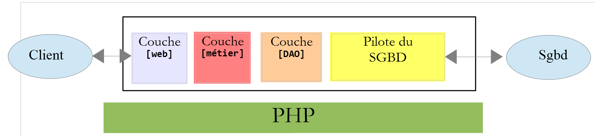
Die Schicht [web] kann implementiert werden, ohne dem Modell MVC zu folgen. Man hat dann zwar eine mehrschichtige Architektur, aber die Webschicht implementiert das Modell MVC nicht.
Beispielsweise kann in der Welt .NET die oben genannte Schicht [web]oben mit ASP.NET und MVC implementiert werden, und man erhält somit eine Schichtenarchitektur mit einer Schicht [web] vom Typ MVC. Ist dies geschehen, kann man diese Schicht ASP.NET MVC durch eine klassische Schicht ASP.NET (WebForms) ersetzen, während der Rest (Geschäftsbereich, DAO, Treiber) unverändert beibehalten. Man erhält somit eine Schichtenarchitektur mit einer Schicht [web], die nicht mehr vom Typ MVC ist.
In MVC haben wir festgelegt, dass das Modell M dem der Ansicht V, c.a.d, entspricht – also der Gesamtheit der von der Ansicht V angezeigten Daten. Eine weitere Definition des Modells M von MVC lautet:

Viele Autoren sind der Ansicht, dass das, was sich rechts von der Ebene [web] befindet, das Modell M von MVC bildet. Um Mehrdeutigkeiten zu vermeiden, kann man sprechen von:
- vom Domänenmodell, wenn man alles bezeichnet, was rechts von der Schicht [web] liegt;
- vom Ansichtsmodell, wenn man die von einer Ansicht V angezeigten Daten bezeichnet;
23.2. Projektstruktur von NetBeans
Für das NetBeans-Projekt werden wir eine Architektur wählen, die das Modell MVC widerspiegelt:

- [3]: [main.php] ist der Hauptcontroller unseres Modells MVC. Es handelt sich um das „C“ von MVC;
- [4]: Der Ordner [Controllers] enthält die sekundären Controller. Jeder davon verarbeitet eine bestimmte Aktion. Diese Aktion ist in der Datei URL angegeben, zum Beispiel […/main.php?action=authentifier-utilisateur]. Mit dieser Aktion wählt der [Contrôleur principal] [main.php] einen [Contrôleur secondaire] aus, in diesem Fall den [AuthentifierUtilisateurController], um die angeforderte Aktion zu bearbeiten. Diese Controller gehören ebenfalls zum C von MVC;
- [5]: Der Ordner [Model] enthält die Ebenen [métier] und [dao] der Anwendung. Gemäß der zuvor festgelegten Terminologie stellen diese Elemente das Domänenmodell dar und können gemäß der für das „M“ festgelegten Terminologie das „M“ von MVC darstellen;
- [6]: Der Ordner [Responses] enthält die Klassen, die für das Senden der Antwort an den Client zuständig sind. Es gibt eine Klasse pro gewünschter Antwortart:
- [JsonResponse]: für eine Antwort vom Typ jSON;
- [XmlResponse]: für eine Antwort vom Typ XML;
- [HtmlResponse]: für eine Antwort HTML;
- [7]: Der Ordner [Views] enthält die Ansichten HTML, wenn eine Antwort HTML gewünscht wird. Dies ist das V von MVC. Sie werden von der Klasse [HtmlResponse] aktiviert, die ihnen die anzuzeigenden Daten übermittelt. Diese Daten bilden die Vorlage der Ansicht. Entsprechend der für das M verwendeten Terminologie können diese Daten das M von MVC sein;
- [8]: Der Ordner [Utilities] enthält Dienstprogramme:
- [Logger]: die Klasse, mit der Protokolle in einer Textdatei erstellt werden können;
- [Sendmail]: Die Klasse, mit der E-Mails versendet werden können;
- [9]: Der Ordner [Logs] enthält die Protokolldatei [logs.txt];
- [10]: Der Ordner [Entities] enthält Klassen, die von den verschiedenen Controllern verwendet werden;
Anhand dieser Verzeichnisstruktur lässt sich der Ablauf der Verarbeitung einer vom Client angeforderten Aktion beschreiben:
- [main.php] [3] empfängt die Anfrage;
- Nach einigen vorläufigen Überprüfungen (Gehört die Aktion zu den zulässigen Aktionen?) leitet er die Anfrage an den sekundären Controller [4] weiter, der für die Bearbeitung dieser Aktion zuständig ist;
- Der sekundäre Controller führt seine Aufgabe aus. Dabei benötigt er möglicherweise die Ebenen [métier], [dao] und [5] sowie die Entitäten aus dem Ordner [10]. Er sendet seine Antwort an den Hauptcontroller [main.php] zurück, der ihn aktiviert hat;
- je nach dem vom Kunden gewünschten Antworttyp [jSON, XML, HTML] aktiviert der Hauptcontroller [main.php] eine der Antworten aus dem Ordner [Responses] [6];
- Die Antworten [JsonResponse, XmlResponse] senden dem Kunden jeweils die Antwort jSON oder XML;
- die Antwort [HtmlResponse] verwendet eine der Ansichten aus dem Ordner [Views] [7], um eine Antwort HTML an den Client zu senden;
- die verschiedenen Controller haben Zugriff auf die Klasse [Logger] aus dem Ordner [8], um Protokolle in die Protokolldatei des Ordners [9] zu schreiben. Folgendes wird protokolliert:
- die angeforderte Aktion;
- die Antwort des jeweiligen Controllers. Diese wird unabhängig vom angeforderten Typ [jSON, XML, HTML] im Format jSON gespeichert;
- Bei einem schwerwiegenden Fehler (HTTP_INTERNAL_SERVER_ERROR) sendet der Hauptcontroller [main.php] mithilfe der Klasse [SendMail] aus dem Ordner [8] eine E-Mail an den Administrator;
23.3. Die Aktionen der Anwendung
Der Client übermittelt dem Webserver die auszuführende Aktion in Form eines Parameters [action] im URL [/main.php?action=xxx]. Die zulässigen Aktionen sind in der Datei [config.json] aufgeführt, die den Hauptcontroller [main.php] konfiguriert:
"actions":
{
"init-session": "\\InitSessionController",
"authentifier-utilisateur": "\\AuthentifierUtilisateurController",
"calculer-impot": "\\CalculerImpotController",
"lister-simulations": "\\ListerSimulationsController",
"supprimer-simulation": "\\SupprimerSimulationController",
"fin-session": "\\FinSessionController",
"afficher-calcul-impot": "\\AfficherCalculImpotController"
},
- Zeile 1: der Schlüssel [actions] des Wörterbuchs jSON;
- Zeilen 3–9: ein Wörterbuch [action:contrôleur]. Jeder Aktion ist der für ihre Bearbeitung zuständige sekundäre Controller zugeordnet;
- Zeile 3: [init-session]: Startet eine Simulationssitzung zur Steuerberechnung. Diese Aktion gibt die Art der gewünschten Antworten an: [jSON, XML, HTML];
- Zeile 4: Sobald die Art der Sitzung festgelegt ist, muss sich der Kunde mit der Aktion [authentifier-utilisateur] authentifizieren. Solange er nicht identifiziert ist, sind alle anderen Aktionen mit Ausnahme von [init-session] gesperrt;
- Zeile 5: Sobald der Kunde identifiziert ist, kann er mit der Aktion [calculer-impot] eine Reihe von Steuerberechnungen durchführen;
- Zeile 6: Der Kunde kann jederzeit die Liste der von ihm durchgeführten Simulationen mit der Aktion [lister-simulations] anzeigen lassen;
- Zeile 7: Er kann einige davon mit der Aktion [supprimer-simulation] löschen;
- Zeile 8: Der Kunde beendet seine Simulationssitzung mit der Aktion [fin-session]. Ab diesem Zeitpunkt muss er sich erneut authentifizieren, wenn er die Anwendung nutzen möchte;
- Zeile 9: In der Anwendung HTML fordert die Aktion [afficher-calcul-impot] die Anzeige des Formulars zur Steuerberechnung an;
23.4. Konfiguration der Webanwendung
Die Anwendung wird über die folgende Datei „jSON [config.json]“ konfiguriert:
{
"databaseFilename": "database.json",
"rootDirectory": "C:/myprograms/laragon-lite/www/php7/scripts-web/impots/version-12",
"relativeDependencies": [
"/Entities/BaseEntity.php",
"/Entities/Simulation.php",
"/Entities/Database.php",
"/Entities/TaxAdminData.php",
"/Entities/ExceptionImpots.php",
"/Utilities/Logger.php",
"/Utilities/SendAdminMail.php",
"/Model/InterfaceServerDao.php",
"/Model/ServerDao.php",
"/Model/ServerDaoWithSession.php",
"/Model/InterfaceServerMetier.php",
"/Model/ServerMetier.php",
"/Responses/InterfaceResponse.php",
"/Responses/ParentResponse.php",
"/Responses/JsonResponse.php",
"/Responses/XmlResponse.php",
"/Responses/HtmlResponse.php",
"/Controllers/InterfaceController.php",
"/Controllers/InitSessionController.php",
"/Controllers/ListerSimulationsController.php",
"/Controllers/AuthentifierUtilisateurController.php",
"/Controllers/CalculerImpotController.php",
"/Controllers/SupprimerSimulationController.php",
"/Controllers/FinSessionController.php",
"/Controllers/AfficherCalculImpotController.php"
],
"absoluteDependencies": [
"C:/myprograms/laragon-lite/www/vendor/autoload.php",
"C:/myprograms/laragon-lite/www/vendor/predis/predis/autoload.php"
],
"users": [
{
"login": "admin",
"passwd": "admin"
}
],
"adminMail": {
"smtp-server": "localhost",
"smtp-port": "25",
"from": "guest@localhost",
"to": "guest@localhost",
"subject": "plantage du serveur de calcul d'impôts",
"tls": "FALSE",
"attachments": []
},
"logsFilename": "Logs/logs.txt",
"actions":
{
"init-session": "\\InitSessionController",
"authentifier-utilisateur": "\\AuthentifierUtilisateurController",
"calculer-impot": "\\CalculerImpotController",
"lister-simulations": "\\ListerSimulationsController",
"supprimer-simulation": "\\SupprimerSimulationController",
"fin-session": "\\FinSessionController",
"afficher-calcul-impot": "\\AfficherCalculImpotController"
},
"types": {
"json": "\\JsonResponse",
"html": "\\HtmlResponse",
"xml": "\\XmlResponse"
},
"vues": {
"vue-authentification.php": [700, 221, 400],
"vue-calcul-impot.php": [200, 300, 341, 350, 800],
"vue-liste-simulations.php": [500, 600]
},
"vue-erreurs": "vue-erreurs.php"
}
Anmerkungen
- Zeile 2: Name der Datei jSON, die die Konfiguration für den Zugriff auf die Datenbank enthält;
- Zeilen 3–39: Konfiguration der Projektabhängigkeiten. Hier werden alle Skripte PHP aus der Projektstruktur aufgelistet;
- Zeilen 40–44: Der zur Nutzung der Anwendung berechtigte Benutzer;
- Zeilen 46–54: E-Mail-Kontaktdaten des Anwendungsadministrators;
- Zeile 55: Der Pfad zur Protokolldatei;
- Zeilen 56–65: Zuordnungen [action => contrôleur secondaire chargé de la traiter];
- Zeilen 66–70: Zuordnungen [type de réponse => classe Response chargée d’envoyer la réponse au client];
- Zeilen 71–75: Zuordnungen [vue HTML => tableau des codes d’état menant à cette vue];
- Zeile 76: Die Ansicht [vue-erreurs] wird in einer Sitzung HTML jedes Mal angezeigt, wenn ein außergewöhnlicher Fehler auftritt:
- Eine Anwendung jSON oder XML wird in der Regel mit einem programmierten Client abgefragt. Dieser übermittelt dem Server Parameter, die möglicherweise fehlen oder fehlerhaft sind. Alle Controller verarbeiten diese Fälle und senden Fehlercodes an den Client zurück. Alle möglichen Fehlerfälle müssen behandelt werden;
- bei einer Anwendung vom Typ HTML verhält es sich etwas anders. Bei normaler Nutzung greift die Webanwendung nur auf einen Teil der möglichen Anwendungsfälle der Clients jSON und XML zurück. Nehmen wir ein Beispiel: Die Aktion [calculer-impot] erwartet drei per POST übermittelte Parameter (die von einem POST gesendet werden): [marié, enfants, salaire].
- Wenn man über ein Client-Programm jSON verfügt, mit dem man URL manuell eingeben kann, kann man die Aktion [calculer-impot] mit einem GET anstelle eines POST anfordern oder mit einem POST ohne übermittelte Parameter, obwohl drei erforderlich sind, usw. Der Server jSON muss all diese Fälle verarbeiten;
- Bei einer Webanwendung wird die Aktion [calculer-impot] über ein Webformular aufgerufen, bei dem keiner der beiden vorgenannten Fälle möglich ist: Die Aktion [calculer-impot] wird zusammen mit einer POST und den drei Parametern [marié, enfants, salaire] aufgerufen. Einige dieser Parameter können einen falschen Wert haben, sind aber vorhanden. Der Benutzer kann jedoch bestimmte Fehler reproduzieren, indem er selbst URL in den Browser eingibt. Aus Sicherheitsgründen muss dieser Fall behandelt werden;
- Die Ansicht [vue-erreurs] wird jedes Mal angezeigt, wenn ein sekundärer Controller einen Statuscode zurückgibt, der mit der Webanwendung nicht kompatibel ist, d. h. einen Statuscode, der in den Zeilen 72–74 der Konfigurationsdatei nicht vorhanden ist. Wir entscheiden uns aus pädagogischen Gründen für diese Lösung. Eine andere Möglichkeit wäre, nichts zu unternehmen und einfach die aktuell im Browser des Kunden angezeigte Ansicht erneut anzuzeigen, damit der Benutzer den Eindruck hat, der Server reagiere nicht auf seine manuell erstellten URL;
23.5. Installation von Tools und Bibliotheken
23.5.1. Postman
[Postman] ist das Tool, mit dem wir die verschiedenen URL unserer Webanwendung abfragen können. Es ermöglicht uns:
- beliebige URL zu verwenden: Diese sind handgefertigt;
- den Webserver über ein GET, POST, PUT, OPTIONS… abzufragen;
- die Parameter von GET oder POST anzugeben;
- die Kopfzeilen HTTP der Anfrage festzulegen;
- eine Antwort im Format jSON, XML, HTML zu erhalten,
- Zugriff auf die Header „HTTP“ der Antwort zu erhalten. Auf diese Weise haben wir also Zugriff auf die vollständige Antwort „HTTP“ des Servers;
Da wir die abgefragten URL-Header manuell erstellen, können wir alle möglichen Fehlerfälle testen und sehen, wie der Server darauf reagiert.
[Postman] ist unter URL und [https://www.getpostman.com/downloads/] verfügbar. Die im Juni 2019 verfügbare Version ist 7.2. Diese Version weist einen Fehler auf: Bei aufeinanderfolgenden Anfragen an den abgefragten Webserver sendet der Client [Postman 7.2] die vom Server gesendeten Cookies, insbesondere das Sitzungscookie, nicht automatisch zurück. Um die Sitzung aufrechtzuerhalten, muss das Sitzungs-Cookie daher manuell in die HTTP-Header der nachfolgenden Anfragen kopiert werden. Das ist zwar nicht besonders kompliziert, aber unpraktisch. Es handelt sich um einen Fehler, der in früheren Versionen nicht vorhanden war. Das Team von [Postman] ist sich des Fehlers bewusst und hat ihn in einer (möglicherweise instabilen) Alpha-Version namens [Postman Canary] behoben, die im URL [https://www.getpostman.com/downloads/canary] verfügbar ist. Diese Version wird hier verwendet. Wir werden die Installation beschreiben. Sollte eine stabile Version [Postman 7.3] oder höher verfügbar sein, können Sie diese herunterladen: Der Fehler wurde dann wahrscheinlich behoben.
Führen Sie die Installation Ihrer Version von [Postman] durch. Während der Installation werden Sie aufgefordert, ein Konto anzulegen: Dieses wird hier nicht benötigt. Das Konto [Postman] dient dazu, verschiedene Geräte zu synchronisieren, damit die Konfiguration eines Geräts auf ein anderes übertragen wird. All dies ist hier nicht erforderlich.
Nach der Installation zeigt [Postman] die folgende Benutzeroberfläche an:
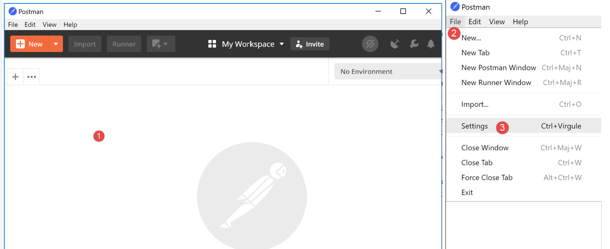
- In [2-3] hat man Zugriff auf die Produkteinstellungen;

- in [6], der in diesem Dokument verwendeten Version;
- Wenn Sie ein Konto erstellt haben, erfolgt eine Synchronisierung zwischen Ihrem Rechner und einem entfernten Server [Postman]. Dies wird durch das Rad [7] symbolisiert, das sich jedes Mal dreht, wenn Sie Änderungen am Projekt [Postman] vornehmen. Um diese unnötige Synchronisierung zu beenden, melden Sie sich in [8-9] ab;
23.5.2. Die Symfony-Bibliothek / Serializer
Um Objekte in jSON und XML zu serialisieren, verwenden wir die Bibliothek [Symfony / Serializer]. Diese bietet hier zwei Vorteile:
- Sie ist in ihrer Verwendung zur Serialisierung in jSON oder XML einheitlich: Dadurch muss man nicht zwei verschiedene API (Application Programming Interface) erlernen;
- sie kann Objekte nativ in jSON oder XML serialisieren, selbst wenn deren Attribute privat sind. Man erinnere sich daran, dass in jSON zum Serialisieren eines Objekts dessen Klasse die Schnittstelle [\JsonSerializable] implementieren musste. Das Ergebnis war damals die Zeichenkette jSON eines assoziativen Arrays, dessen Schlüssel die Attribute der Klasse waren. Bei der Deserialisierung dieser Zeichenkette jSON erhielt man das ursprüngliche assoziative Array zurück, das dann in ein Objekt der Klasse umgewandelt werden musste, die serialisiert worden war. Bei [Symfony / Serializer] erzeugt die Deserialisierung sofort ein Objekt der serialisierten Klasse. Das ist einfacher;
Die Dokumentation zur Bibliothek [Symfony / Serializer] ist unter URL: [https://symfony.com/doc/current/components/serializer.html] (Juni 2019) verfügbar.
Um diese Bibliothek zu installieren, öffnen Sie ein Laragon-Terminal (siehe Abschnitt „Link“) und geben Sie den folgenden Befehl ein:

- in [1], dem Befehl zur Installation der Bibliothek [symfony/serializer];
- in [2], eine weitere für unser Projekt erforderliche Bibliothek: ermöglicht die Serialisierung von Objekten;

23.6. Die Entitäten der Anwendung
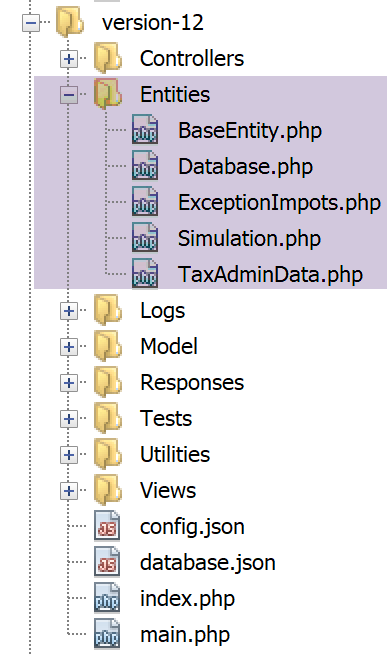
Die Entitäten [BaseEntity, Database, ExceptionImpots, TaxAdminData] wurden bereits ab Version 08 des Webdienstes verwendet (siehe Abschnitt „Link“).
Die Klasse [Simulation] dient dazu, die Elemente einer Steuerberechnungssimulation zu kapseln:
<?php
namespace Application;
class Simulation extends BaseEntity {
// Attribute einer Steuerberechnungssimulation
protected $marié;
protected $enfants;
protected $salaire;
protected $impôt;
protected $surcôte;
protected $décôte;
protected $réduction;
protected $taux;
// Getter
public function getMarié() {
return $this->marié;
}
public function getEnfants() {
return $this->enfants;
}
public function getSalaire() {
return $this->salaire;
}
public function getImpôt() {
return $this->impôt;
}
public function getSurcôte() {
return $this->surcôte;
}
public function getDécôte() {
return $this->décôte;
}
public function getRéduction() {
return $this->réduction;
}
public function getTaux() {
return $this->taux;
}
}
Anmerkungen
- Zeile 5: Die Klasse [Simulation] erweitert die Klasse [BaseEntity] und erbt somit die folgenden Methoden:
- [setFromArrayOfAttributes($arrayOfAttributes)]: Damit lassen sich Attribute der Klasse initialisieren;
- [__toString]: gibt die Zeichenkette jSON des Objekts zurück;
- Zeilen 7–14: die Attribute der Simulation;
- Zeilen 16–47: die Getter der Klasse;
23.7. Die Hilfsfunktionen der Anwendung
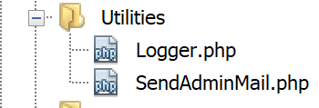
Die Klasse [Logger] ermöglicht das Protokollieren von Ereignissen in einer Textdatei. Diese Klasse wurde im Abschnitt „Link“ beschrieben.
Die Klasse [SendAdminMail] ermöglicht es, eine E-Mail an den Administrator der Anwendung zu senden. Diese Klasse wurde im Abschnitt „Link“ beschrieben.
23.8. Die Schichten [métier] und [dao]


Die Klassen und Schnittstellen der Schichten [métier] und [dao] sind im Ordner [Model] zusammengefasst. Sie wurden alle bereits in früheren Versionen definiert und verwendet:
ExceptionImpots | Die Klasse der von der Schicht [dao] ausgelösten Ausnahmen. Definiert im Abschnitt „Link“. |
InterfaceServerDao | Schnittstelle, die von der Server-Schicht [dao] implementiert wird. Definiert im Abschnitt „Link“. |
ServerDao | Implementierung der Schnittstelle [InterfaceServerDao]. Implementiert die Schicht [dao] des Servers. Definiert im Abschnitt „Link“. |
ServerDaoWithSession | Implementierung der Schnittstelle [InterfaceServerDao]. Implementiert die Serverschicht [dao]. Definiert im Abschnitt „Link“. |
InterfaceServerMetier | Schnittstelle, die von der Server-Schicht [métier] implementiert wird. Definiert im Abschnitt „Link“. |
ServerMetier | Implementierung der Schnittstelle [InterfaceMetier]. Implementiert die Server-Schicht [metier]. Definiert im Abschnitt „Link“. |
Die derzeit in Entwicklung befindliche Anwendung nutzt viele bereits vorgestellte und verwendete Elemente:
- die Schichten [métier] und [dao];
- die Hilfsprogramme [Logger] und [SendAdminMail];
- die Entitäten [ExceptionImpots, TaxAdminData, Database];
Wir konzentrieren uns auf die Ebene [web] der Anwendung:

23.9. Der Hauptcontroller [main.php]
23.9.1. Einführung

- [1-2]: Der Hauptcontroller [main.php] [1] wird über die Datei [config.json] [2] konfiguriert;
Zur Erinnerung: Die Position des Hauptcontrollers in unserer Architektur MVC:

In [1] ist der Hauptcontroller [main.php] das erste Element der Architektur MVC, das die Anfrage des Clients bearbeitet. Er hat mehrere Aufgaben:
- Zunächst führt er grundlegende Überprüfungen durch:
- Ob seine Konfigurationsdatei vorhanden und gültig ist;
- Laden aller Projektabhängigkeiten. Dies entspricht dem Laden aller Elemente der Architektur MVC;
- Wurde die angeforderte Aktion angegeben? Wenn ja, ist sie gültig?
- Wenn die angeforderte Aktion gültig ist, wählt er den sekundären Controller [2a] aus, der sie bearbeiten wird, und übergibt ihm die benötigten Informationen: die Anfrage HTTP, die Sitzung und die Anwendungskonfiguration;
- die Antwort des sekundären Controllers [2c] abrufen. Je nach Typ (jSON, XML, HTML) der vom Client angeforderten Anwendung die Antwort (JsonResponse, XmlResponse, HtmlResponse) aus, die für das Senden der Antwort an den Kunden zuständig ist, und übergibt ihr alle erforderlichen Informationen (die Anfrage HTTP, die Sitzung, die Anwendungskonfiguration, die Antwort des sekundären Controllers);
- Sobald diese Antwort ([3c]) gesendet wurde, sind die Ressourcen freizugeben, die möglicherweise für die Bearbeitung der Anfrage mobilisiert wurden;
23.9.2. [main.php] - 1
Der Code des Hauptcontrollers [main.php] lautet wie folgt:
<?php
// Strikte Einhaltung der deklarierten Typen der Funktionsparameter
declare (strict_types=1);
// Namensraum
namespace Application;
// Symfony-Abhängigkeiten
use Symfony\Component\HttpFoundation\Request;
use Symfony\Component\HttpFoundation\Response;
use Symfony\Component\HttpFoundation\Session\Session;
// Fehlerbehandlung durch PHP
//ini_set("display_errors", "0");
error_reporting(E_ALL && !E_WARNING && !E_NOTICE);
// Die Konfiguration wird abgerufen
$configFilename = "config.json";
$fileContents = \file_get_contents($configFilename);
$erreur = FALSE;
// Fehler?
if (!$fileContents) {
// Der Fehler wird notiert
$état = 131;
$erreur = TRUE;
$message = "Le fichier de configuration [$configFilename] n'existe pas";
}
if (!$erreur) {
// Der Code JSON wird aus der Konfigurationsdatei in ein assoziatives Array geladen
$config = \json_decode($fileContents, true);
// Fehler?
if (!$config) {
// Der Fehler wird vermerkt
$erreur = TRUE;
$état = 132;
$message = "Le fichier de configuration [$configFilename] n'a pu être exploité correctement";
}
}
// Fehler?
if ($erreur) {
// Vorbereitung der Antwort JSON vom Server
// Die Konfigurationsdatei kann nicht herangezogen werden
// Symfony-Abhängigkeiten
require_once "C:/myprograms/laragon-lite/www/vendor/autoload.php";
// Vorbereitung der Antwort
$response = new Response();
$response->headers->set("content-type", "application/json");
$response->setCharset("utf-8");
// Statuscode
$response->setStatusCode(Response::HTTP_INTERNAL_SERVER_ERROR);
// Inhalt
$response->setContent(json_encode(["action" => "", "état" => $état, "réponse" => $message], JSON_UNESCAPED_UNICODE));
// Versand
$response->send();
// Ende
exit;
}
…
Anmerkungen
- Zeilen 10–12: Der Hauptcontroller verwendet die folgenden Symfony-Objekte:
- [Request]: die gerade verarbeitete Anfrage HTTP;
- [Session]: die Sitzung der Webanwendung;
- [Response]: die Antwort HTTP an den Client;
- Zeile 15: Während der gesamten Entwicklung bleibt diese Zeile auskommentiert: Die Fehler PHP werden dann in den an den Client gesendeten Textstrom integriert. Handelt es sich bei diesem Client um einen Browser, können so die vom Server aufgetretenen Fehler angezeigt werden. Dies dient als Hilfe bei der Fehlersuche;
- Zeile 16: Alle Fehler werden gemeldet (E_ALL), mit Ausnahme von Warnungen (! E_WARNING) und nicht schwerwiegenden Informationen (! E_NOTICE). Wenn beispielsweise eine Datei nicht geöffnet werden kann, gibt PHP einen Fehler vom Typ [E_NOTICE] aus. Wenn in Zeile 15 die Anzeige von Fehlern aktiviert ist, wird der Fehler beim Öffnen der Datei im Client-Browser angezeigt. Das ist gut, wenn Sie vergessen haben, das Ergebnis des Öffnens der Datei zu testen, weniger gut, wenn Sie den Test vorgesehen haben: Eine Zeile mit [notice] verunstaltet dann die Antwort des Servers an den Client. In der Entwicklungsphase sollte auch Zeile 16 auskommentiert werden: Sie wollen keinen Fehler verpassen;
- Zeile 19: Die Konfigurationsdatei wird gelesen;
- Zeilen 22–27: Wenn das Einlesen fehlgeschlagen ist, wird der Fehler protokolliert (Zeile 25), die Anwendung wird in den Status [131] versetzt und eine Fehlermeldung vorbereitet;
- Zeile 30: Die Zeichenkette jSON aus der Konfigurationsdatei wird dekodiert;
- Zeilen 32–37: Wenn die Dekodierung fehlschlägt, wird der Fehler protokolliert (Zeile 34), die Anwendung in den Status [132] versetzt und eine Fehlermeldung vorbereitet;
- Zeilen 40–57: Bei einem Fehler beim Einlesen der Konfigurationsdatei kann der Vorgang nicht fortgesetzt werden. Daher wird eine Antwort jSON an den Client vorbereitet:
- Zeile 44: Da die Konfigurationsdatei nicht gelesen wurde, muss die für [Symfony] erforderliche Datei [autoload] manuell importiert werden;
- Zeilen 46–47: Es wird eine Antwort mit dem Code jSON vorbereitet;
- Zeile 50: Der Code HTTP der Antwort lautet 500 INTERNAL_SERVER_ERROR;
- Zeile 52: Der Inhalt der Antwort wird festgelegt: jSON. Alle Antworten der untersuchten Webanwendung enthalten drei Schlüssel:
- [action]: die vom Client angeforderte Aktion;
- [état]: der Zustand der Anwendung nach Ausführung dieser Aktion;
- [réponse]: die Antwort des Webservers;
- Zeile 54: Die Antwort jSON wird an den Client gesendet;
23.9.3. Tests [Postman] – 1
Wir werden das Verhalten des Servers überprüfen, wenn die Konfigurationsdatei fehlt oder fehlerhaft ist:

Wir werden die verschiedenen Anfragen, die unser Kunde [Postman] an den Steuer-Server senden wird, in Sammlungen zusammenfassen.
- Erstellen Sie unter [1] eine neue Sammlung;
- Geben Sie ihr in [2] einen Namen;
- In [3] ist die Beschreibung optional;

- In den Sammlungen [4] erscheint nun eine Sammlung mit dem Namen [impots-server-tests-version12] [5];
- In [6] kann der Sammlung eine neue Abfrage hinzugefügt werden;
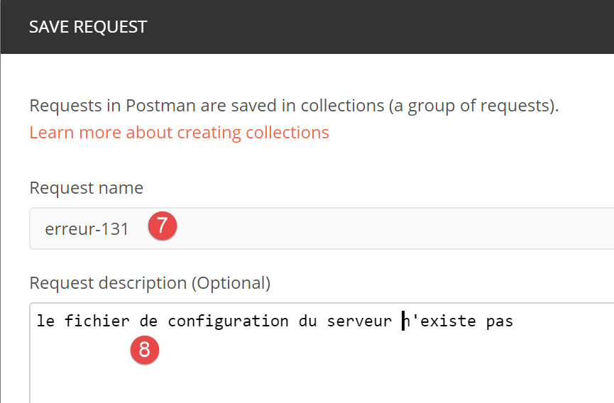
- In [7] wird der Abfrage ein Name gegeben;
- In [8] ist die Beschreibung optional;

- in [9-11] wird die Abfrage zur Sammlung hinzugefügt;
- in [12], Auswahl des Abfragetyps, hier eine Abfrage vom Typ [GET]. In [19], die verschiedenen verfügbaren Abfragetypen;
- in [13] gibt man hier die URL des Servers ein;
- in [14] werden hier die Parameter eingegeben, die dem URL hinzugefügt wurden und somit Parameter des GET sind. Der Vorteil, sie hier statt direkt in URL einzutragen, besteht darin, dass sie von [Postman] URL-kodiert werden. Wenn Sie sie selbst in URL eintragen, müssen Sie sie selbst URL-kodieren;
- In [15] dient [Authorization] dazu, den Benutzer zu definieren, der sich anmelden wird. Wir werden diese Möglichkeit nicht nutzen müssen;
- in [16] die Header HTTP, die der Anfrage beigefügt werden. Eine Reihe von Headern wird automatisch in die Anfrage aufgenommen. Hier können Sie neue hinzufügen;
- In [17] bezeichnet [Body] die Parameter einer Operation [POST]. Diese Option werden wir nutzen müssen;
Wir führen folgenden Test durch:
- In [main.php] geben wir an, dass die Konfigurationsdatei [config2.json] lautet, die jedoch nicht existiert:

- Zeile 16 des Codes muss auskommentiert werden;
- Zeile 18: Der Fehler betrifft den Namen der Konfigurationsdatei;
Öffnen wir [Postman], [13, 20] und URL vom Webserver für die Steuerberechnung und führen wir [21] aus:

Die vom Server zurückgegebene Antwort (Laragon muss natürlich aktiv sein) lautet wie folgt:

- In [22] hat der Server den Code HTTP [500 Internal Server Error] zurückgegeben;
- bei [23] bezeichnet [Body] den Hauptteil der Antwort, d. h. das vom Server gesendete Dokument hinter den Headern HTTP und [28];
- In [26] ist zu sehen, dass [Postman] eine Antwort jSON erhalten hat;
- in [27] die formatierte Antwort jSON;
- in [28] die unbearbeitete Antwort jSON ohne Formatierung;
- Bei [29] wird der Modus [Preview] verwendet, wenn die Antwort HTML lautet. Der Modus [Preview] zeigt dann die empfangene Seite an;
- bei [30] die Antwort jSON des Servers. Das ist genau die Antwort, die wir erwartet haben;
Im Modus [25] lauten die in der Serverantwort gesendeten Header HTTP wie folgt:

- In [32] ist der Typ der Antwort jSON;
Dieser erste Test hat gezeigt, dass:
- jede Art von Anfrage an den getesteten Server gesendet werden kann;
- die Parameter von GET oder POST festlegen kann;
- die vollständige Antwort erhalten: die Header HTTP und das Dokument, das auf diese Header folgt ([Body]);
Führen wir nun einen zweiten Test durch:

- in [1-3]; die Datei [config3.json] ist eine syntaktisch fehlerhafte jSON-Datei;
- in [4] ist [main.php] so konfiguriert, dass es [config3.json] verwendet;
Wir fügen eine neue Abfrage in [Postman] hinzu:

- In [1-3] klicken wir mit der rechten Maustaste auf [2] und wählen die Option [duplicate], um die Abfrage [2] zu duplizieren;
- Bei [4] hat die neue Abfrage einen vordefinierten Namen, den man in [5] ändert;

- in [6], die umbenannte Abfrage;
- in [9-10], es wird dieselbe Abfrage wie zuvor gesendet: GET;

- in [11], die Antwort jSON vom Server;
Wir haben hier gezeigt, wie die verschiedenen Aktionen des Webdienstes zur Steuerberechnung getestet werden.
23.9.4. [main.php] – 2
Wir setzen die Untersuchung des Codes des Hauptcontrollers [main.php] fort:
<?php
// Strikte Einhaltung der deklarierten Typen der Funktionsparameter
declare (strict_types=1);
// Namensraum
namespace Application;
// Symfony-Abhängigkeiten
use Symfony\Component\HttpFoundation\Request;
use Symfony\Component\HttpFoundation\Response;
use Symfony\Component\HttpFoundation\Session\Session;
// Fehlerbehandlung durch PHP
//ini_set("display_errors", "0");
error_reporting(E_ALL && !E_WARNING && !E_NOTICE);
// Die Konfiguration wird abgerufen
$configFilename = "config.json";
…
// die für das Skript erforderlichen Abhängigkeiten werden eingebunden
$rootDirectory = $config["rootDirectory"];
foreach ($config["relativeDependencies"] as $dependency) {
require_once "$rootDirectory$dependency";
}
// Absolute Abhängigkeiten (Bibliotheken von Drittanbietern)
foreach ($config["absoluteDependencies"] as $dependency) {
require_once "$dependency";
}
// Erstellung der Protokolldatei
try {
$logger = new Logger($config['logsFilename']);
} catch (ExceptionImpots $ex) {
// Die Logdatei konnte nicht erstellt werden – interner Serverfehler
$état = 133;
(new JsonResponse())->send(
NULL, NULL, $config,
Response::HTTP_INTERNAL_SERVER_ERROR,
["action" => "non déterminée", "état" => $état, "réponse" => "Le fichier de logs [{$config['logsFilename']}] n'a pu être créé"],
[]);
// abgeschlossen
exit;
}
Kommentare
- Zeile 18: Es liegt nun eine Konfigurationsdatei [config.json] vor, die syntaktisch korrekt ist. Außerdem müsste geprüft werden, ob die in dieser Datei erwarteten Schlüssel tatsächlich vorhanden sind. Wir gehen davon aus, dass dies Teil der normalen Debugging-Arbeit des Entwicklers ist. Die gleiche Argumentation hätten wir auch für die beiden vorherigen Fehler anstellen können;
- Zeilen 20–28: Hier werden alle für das Webprojekt erforderlichen Abhängigkeiten eingebunden. Wir sind diesem Code bereits mehrfach begegnet;
- Zeilen 31–43: Wir versuchen, das Objekt „[Logger]“ zu erstellen, mit dem wir Ereignisse in der Datei [$config['logsFilename']] protokollieren können. Diese Erstellung kann fehlschlagen;
- Zeilen 33–43: Behandlung des Fehlers beim Anlegen des Objekts [Logger];
- Zeile 35: Festlegen einer Statusnummer;
- Zeilen 36–40: Es wird eine Antwort jSON gesendet;
- Zeile 42: Das Skript wird beendet;
Alle an den Client gesendeten Antworten implementieren die folgende Schnittstelle [InterfaceResponse]:
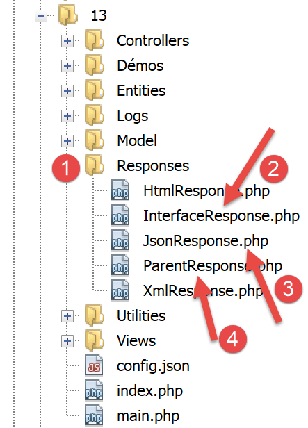
Der Code der Schnittstelle [InterfaceResponse] lautet wie folgt:
<?php
namespace Application;
// Symfony-Abhängigkeiten
use Symfony\Component\HttpFoundation\Request;
use Symfony\Component\HttpFoundation\Session\Session;
interface InterfaceResponse {
// Anfrage $request: Anfrage wird gerade verarbeitet
// Sitzung $session: Die Sitzung der Webanwendung
// Array $config: die Konfiguration der Anwendung
// int statusCode: der Antwortstatuscode HTTP
// array $content: die Antwort des Servers
// array $headers: die an die Antwort anzuhängenden Header HTTP
// Logger $logger: der Logger zum Schreiben von Logs
public function send(
Request $request = NULL,
Session $session = NULL,
array $config,
int $statusCode,
array $content,
array $headers,
Logger $logger = NULL): void;
}
- Zeilen 19–27: Die Schnittstelle [InterfaceResponse] verfügt über eine einzige Methode [send], um die Antwort an den Client zu senden;
- Zeilen 11–17: Die Bedeutung der verschiedenen Parameter der Methode [send];
- Zeilen 23–25: Die Parameter [$statusCode, $content, $headers] sind im Standardergebnis der sekundären Controller der Anwendung enthalten. Die Antwort benötigt jedoch möglicherweise weitere Informationen. Daher werden ihr die ersten drei Parameter (Zeilen 20–22) übergeben, die ihr Zugriff auf alle Informationen bezüglich der Anfrage, der Sitzung und der Konfiguration gewähren;
- Zeile 26: Die Antwort benötigt den Parameter [Logger], da sie die an den Kunden gesendete Antwort protokolliert;
Die Klasse [JsonResponse] implementiert die Schnittstelle [InterfaceResponse] wie folgt:
<?php
namespace Application;
// Symfony-Abhängigkeiten
use Symfony\Component\Serializer\Encoder\JsonEncode;
use Symfony\Component\Serializer\Encoder\JsonEncoder;
use Symfony\Component\Serializer\Normalizer\ObjectNormalizer;
use Symfony\Component\Serializer\Serializer;
use \Symfony\Component\HttpFoundation\Request;
use \Symfony\Component\HttpFoundation\Session\Session;
class JsonResponse extends ParentResponse implements InterfaceResponse {
// Anfrage $request: Anfrage wird gerade bearbeitet
// Sitzung $session: die Sitzung der Webanwendung
// Array $config: die Konfiguration der Anwendung
// int statusCode: der Antwortstatuscode HTTP
// array $content: die Antwort des Servers
// array $headers: die an die Antwort anzuhängenden Header HTTP
// Logger $logger: der Logger zum Schreiben von Logs
public function send(
Request $request = NULL,
Session $session = NULL,
array $config,
int $statusCode,
array $content,
array $headers,
Logger $logger = NULL): void {
// Vorbereitung des Symfony-Serialisierers
$serializer = new Serializer(
[
// erforderlich für die Serialisierung von Objekten
new ObjectNormalizer()],
// Encoder jSON
// Für die Optionen: Fügen Sie zwischen den einzelnen Optionen „OU“ ein
[new JsonEncoder(new JsonEncode([JsonEncode::OPTIONS => JSON_UNESCAPED_UNICODE]))]
);
// Serialisierung jSON
$json = $serializer->serialize($content, 'json');
// Header
$headers = array_merge($headers, ["content-type" => "application/json"]);
// Antwort senden
parent::sendResponse($statusCode, $json, $headers);
// Protokoll
if ($logger !== NULL) {
$logger->write("réponse=$json\n");
}
}
}
Kommentare
- Zeile 13: Die Klasse implementiert die Schnittstelle [InterfaceResponse];
- Zeile 13: Die Klasse erbt von der Klasse [ParentResponse]. Alle Typen von [Response] erben von dieser Klasse. Es ist diese übergeordnete Klasse, die die Antwort an den Client sendet (Zeile 46). Da dieser Code allen Typen von [Response] gemeinsam war, wurde er in eine übergeordnete Klasse ausgelagert;
- Zeilen 33–40: Instanziierung des Serializers [Symfony], der die Antwort des Servers [$content] in eine Zeichenkette jSON umwandelt (Zeile 42);
- Zeilen 34–36: Der erste Parameter des Konstruktors von [Serializer] ist ein Array. Darin wird eine Instanz der Klasse [ObjectNormalizer] abgelegt, die für die Serialisierung von Objekten erforderlich ist. Dieser Fall tritt in dieser Anwendung bei einer Liste von Simulationen auf, wobei jede Simulation eine Instanz der Klasse [Simulation] ist;
- Zeile 39: Der zweite Parameter des Konstruktors von [Serializer] ist ebenfalls ein Array: darin werden alle bei einer Serialisierung verwendeten Encoder abgelegt (XML, jSON, CSV…);
- Zeile 39: Hier wird es nur einen Encoder geben, vom Typ [JsonEncoder]. Der Konstruktor ohne Parameter hätte ausreichen können. Hier haben wir dem Konstruktor einen Parameter [JsonEncode] übergeben, ausschließlich um die Kodierungsoptionen jSON zu übergeben;
- Zeile 39: Der Konstruktorparameter [JsonEncode] ist ein Array von Optionen. Hier wird die Option [JSON_UNESCAPED_UNICODE] verwendet, um festzulegen, dass die Zeichen UTF-8 der Zeichenkette jSON nativ dargestellt und nicht „escapet“ werden sollen;
- Zeile 42: Der Hauptteil der Antwort HTTP wird mithilfe des vorherigen Serializers in jSON serialisiert;
- Zeile 44: Es wird der Header HTTP hinzugefügt, der dem Client mitteilt, dass ihm jSON gesendet wird;
- Zeile 46: Die übergeordnete Klasse wird aufgefordert, die Antwort an den Client zu senden;
- Zeilen 48–50: Die Antwort jSON wird protokolliert;
Der Code der übergeordneten Klasse [ParentResponse] lautet wie folgt:
<?php
namespace Application;
// Symfony-Abhängigkeiten
use Symfony\Component\HttpFoundation\Response;
class ParentResponse {
// int $statusCode: Der Statuscode der Antwort HTTP
// Zeichenkette $content: der zu sendende Antworttext
// je nach Fall handelt es sich um eine Zeichenkette jSON, XML oder HTML
// Array $headers: die an die Antwort anzuhängenden Header HTTP
public function sendResponse(
int $statusCode,
string $content,
array $headers): void {
// Vorbereitung der Textantwort des Servers
$response = new Response();
$response->setCharset("utf-8");
// Statuscode
$response->setStatusCode($statusCode);
// Header
foreach ($headers as $text => $value) {
$response->headers->set($text, $value);
}
// Die Antwort wird gesendet
$response->setContent($content);
$response->send();
}
}
Kommentare
- Zeilen 10–13: Die Bedeutung der drei Parameter der Methode [send];
- Zeile 17: Es ist zu beachten, dass der Antworttext vom Typ [string] ist und somit versandbereit ist (Zeile 30);
- Zeile 22: Die Antwort enthält Zeichen vom Typ UTF-8;
- Zeile 24: Statuscode HTTP der Antwort;
- Zeilen 26–28: Hinzufügen der vom aufrufenden Code angegebenen Header HTTP;
- Zeilen 30–31: Senden der Antwort an den Kunden;
Wir haben den gesamten Ablauf einer Antwort jSON detailliert beschrieben. Wir werden im weiteren Verlauf nicht mehr darauf zurückkommen. Man muss sich lediglich die Signatur der Schnittstelle [InterfaceResponse] merken:
interface InterfaceResponse {
// Anfrage $request: Anfrage wird gerade bearbeitet
// Sitzung $session: Die Sitzung der Webanwendung
// Array $config: Die Konfiguration der Anwendung
// int statusCode: der Antwortstatuscode HTTP
// array $content: Die Antwort des Servers
// array $headers: die Header HTTP, die der Antwort hinzugefügt werden sollen
// Logger $logger: der Logger zum Schreiben von Protokollen
public function send(
Request $request = NULL,
Session $session = NULL,
array $config,
int $statusCode,
array $content,
array $headers,
Logger $logger = NULL): void;
}
Der Hauptcontroller [main.php] muss diese Signatur jedes Mal einhalten, wenn er den Versand der Antwort an den Kunden anfordert.
23.9.5. Tests [Postman] – 2
Wir ändern die Datei [config.json] wie folgt:

- In [1] geben wir an, dass die Protokolldatei [Logs] ist, bei der es sich um einen Ordner [2] handelt. Die Erstellung der Datei [Logs] sollte daher fehlschlagen;
Wir erstellen eine neue Anfrage [Postman] [3], die [erreur-133] heißt:

- [2-4]: Wir definieren dieselbe Abfrage wie in den beiden vorherigen Tests;
- [5-7]: Wir erhalten tatsächlich die erwartete Antwort jSON;
23.9.6. [main.php] – 3
Setzen wir die Untersuchung des Hauptcontrollers [main.php] fort:
<?php
// Strikte Einhaltung der deklarierten Typen der Funktionsparameter
declare (strict_types=1);
// Namensraum
namespace Application;
// Symfony-Abhängigkeiten
use Symfony\Component\HttpFoundation\Request;
use Symfony\Component\HttpFoundation\Response;
use Symfony\Component\HttpFoundation\Session\Session;
// Fehlerbehandlung durch PHP
…
// Erstellung der Protokolldatei
…
// Erstes Protokoll
$logger->write("\n---nouvelle requête\n");
// Aktuelle Anfrage
$request = Request::createFromGlobals();
// Sitzung
$session = new Session();
$session->start();
// Fehlerliste
$erreurs = [];
$erreur = FALSE;
// Die angeforderte Aktion wird bearbeitet
if (!$request->query->has("action")) {
$erreurs[] = "paramètre [action] manquant";
$erreur = TRUE;
$état = 101;
$action = "";
} else {
// Die Aktion wird gespeichert
$action = strtolower($request->query->get("action"));
}
// Die Aktion wird protokolliert
$logger->write("action [$action] demandée\n");
// Existiert die Aktion?
if (!$erreur && !array_key_exists($action, $config["actions"])) {
$erreurs[] = "action [$action] invalide";
$erreur = TRUE;
$état = 102;
}
// Der Sitzungstyp muss bekannt sein, bevor bestimmte Aktionen ausgeführt werden können
if (!$erreur && !$session->has("type") && $action !== "init-session") {
$erreurs[] = "pas de session en cours. Commencer par action [init-session]";
$erreur = TRUE;
$état = 103;
}
// Für bestimmte Aktionen muss man authentifiziert sein
if (!$erreur && !$session->has("user") && $action !== "authentifier-utilisateur" && $action !== "init-session") {
$erreurs[] = "action demandée par utilisateur non authentifié";
$erreur = TRUE;
$état = 104;
}
// Fehler?
if ($erreurs) {
// Die Antwort wird vorbereitet, ohne sie zu senden
$statusCode = Response::HTTP_BAD_REQUEST;
$content = ["réponse" => $erreurs];
$headers = [];
} else {
// ---------------------------
// Die Aktion wird mithilfe ihres Controllers ausgeführt
$controller = __NAMESPACE__ . $config["actions"][$action];
$logger->write("contrôleur : $controller\n");
list($statusCode, $état, $content, $headers) = (new $controller())->execute($config, $request, $session);
}
// --------------------- Die Antwort wird gesendet
// im Falle eines schwerwiegenden Fehlers HTTP_INTERNAL_SERVER_ERROR
// Es wird eine E-Mail an den Administrator gesendet, sofern dies möglich ist
if ($statusCode === Response::HTTP_INTERNAL_SERVER_ERROR && $config['adminMail'] != NULL) {
$infosMail = $config['adminMail'];
$infosMail['message'] = json_encode($content, JSON_UNESCAPED_UNICODE);
$sendAdminMail = new SendAdminMail($infosMail, $logger);
$sendAdminMail->send();
}
// Die Antwort hängt vom Sitzungstyp ab
if ($session->has("type")) {
// Der Sitzungstyp ist in der Sitzung enthalten
$type = $session->get("type");
} else {
// Wenn kein Typ in der Sitzung vorhanden ist, erfolgt standardmäßig eine Antwort im Format jSON
$type = "json";
}
// Die Schlüssel [action, état] werden der Antwort des Controllers hinzugefügt
$content = ["action" => $action, "état" => $état] + $content;
// Das Objekt [Response] wird instanziiert, das für das Senden der Antwort an den Client zuständig ist
$response = __NAMESPACE__ . $config["types"][$type]["response"];
(new $response())->send($request, $session, $config, $statusCode, $content, $headers, $logger);
// Die Antwort wurde gesendet – die Ressourcen werden freigegeben
$logger->close();
exit;
Anmerkungen
- Sobald die ersten Überprüfungen durchgeführt wurden und der Hauptcontroller weiß, dass er arbeiten kann, befasst er sich mit der ihm übermittelten Aktion: Diese muss bestimmte Bedingungen erfüllen;
- Zeile 21: Es wird protokolliert, dass eine neue Anfrage vorliegt. Zuvor war dies nicht möglich, da nicht sicher war, ob eine gültige Protokolldatei vorhanden war;
- Zeile 23: Alle Informationen der Client-Anfrage werden in das Symfony-Objekt [Request] gekapselt;
- Zeile 26: Wir starten eine neue Sitzung oder greifen auf die bestehende Sitzung zurück, falls vorhanden;
- Zeile 27: Die Sitzung wird aktiviert;
- Zeile 29: ein Array mit Fehlermeldungen;
- Zeile 30: Ein boolescher Wert, der im Verlauf der Tests angibt, ob ein Fehler aufgetreten ist oder nicht;
- Zeile 32: Der Parameter [action] muss Teil von URL in der Form [main.php?action=uneAction] sein. Der Parameter [action] ist somit Teil der Parameter [$request→query];
- Zeilen 33–36: Fall, in dem der Parameter [action] in URL fehlt. Der Fehler wird vermerkt und ihm wird der Status [101] zugewiesen;
- Zeile 39: Wenn der Parameter [action] in URL vorhanden ist, wird er gespeichert;
- Zeile 42: Der Aktionstyp wird protokolliert;
- Zeilen 45–49: Ist der Parameter [action] vorhanden, muss er gültig sein. Alle zulässigen Aktionen sind in der assoziativen Tabelle [$config["actions"]] definiert;
- Zeilen 46–48: Ist die Aktion ungültig, wird der Fehler vermerkt und ihr der Status [102] zugewiesen;
- Zeilen 52–56: Es liegt eine gültige Aktion vor. Sie muss noch weitere Bedingungen erfüllen. Die Webanwendung liefert drei Antworttypen (jSON, XML, HTML). Dieser Typ wird durch die Aktion [init-session] festgelegt. Diese Aktion speichert den Sitzungstyp im Schlüssel [type];
- Zeile 52: Außerhalb der Aktion [init-session] muss jede andere Aktion mit einem Schlüssel [type] in der Sitzung ablaufen;
- Zeilen 53–55: Ist dies nicht der Fall, wird der Fehler protokolliert und der Status [103] zugewiesen;
- Zeilen 58–63: Mit Ausnahme der Aktionen [init-session] und [authentifier-utilisateur] müssen alle anderen Aktionen nach der Authentifizierung erfolgen. Diese erfolgt mithilfe der Aktion [authentifier-utilisateur], die bei erfolgreicher Authentifizierung einen Schlüssel [user] in die Sitzung einfügt;
- Zeile 59: Wenn es sich bei der Aktion weder um [init-session] noch um [authentifier-utilisateur] handelt und der Schlüssel [user] nicht in der Sitzung vorhanden ist, liegt ein Fehler vor;
- Zeilen 60–62: Der Fehler wird vermerkt und ihm der Status [104] zugewiesen;
- Zeilen 66–71: Es wird geprüft, ob das Array [$erreurs] nicht leer ist. Ist dies der Fall, sind entweder die angeforderte Aktion oder deren Ausführungskontext fehlerhaft;
- Zeilen 68–70: Die an den Client zu sendende Antwort wird vorbereitet, aber noch nicht gesendet;
- Zeile 68: Statuscode HTTP;
- Zeile 69: Hauptteil der Antwort;
- Zeile 70: an die Antwort anzuhängende Header, hier keine;
- Zeile 73: Es liegt eine gültige Aktion vor. Der zugehörige (sekundäre) Controller wird beauftragt, diese zu verarbeiten;
- Zeile 74: Wir bilden den Namen der auszuführenden Controller-Klasse. [__NAMESPACE__] ist der Namensraum, in dem wir uns befinden, hier [Application] (Zeile 7);
- Die Namen der sekundären Controller-Klassen befinden sich in der Datei [config.json]:
"actions":
{
"init-session": "\\InitSessionController",
"authentifier-utilisateur": "\\AuthentifierUtilisateurController",
"calculer-impot": "\\CalculerImpotController",
"lister-simulations": "\\ListerSimulationsController",
"supprimer-simulation": "\\SupprimerSimulationController",
"fin-session": "\\FinSessionController",
"afficher-calcul-impot": "\\AfficherCalculImpotController"
},
Jeder Aktion entspricht ein sekundärer Controller. Wenn die Aktion [authentifier-utilisateur] lautet, hat die Variable [$controller] in Zeile 74 somit den Wert [Application/AuthentifierUtilisateurController];
- Zeile 75: Der Name des sekundären Controllers wird protokolliert, um ihn während der Entwicklung zu überprüfen;
- Zeile 76: Der sekundäre Controller wird ausgeführt. Wir werden etwas später noch einmal auf die sekundären Controller zurückkommen;
- Zeile 76: Alle sekundären Controller liefern denselben Ergebnistyp, nämlich ein Array:
- Das erste Element des Arrays [$statusCode] ist der Statuscode HTTP der zu sendenden Antwort;
- das zweite Element [$état] ist der Zustand der Anwendung nach Ausführung des Controllers;
- das dritte Element [$content] ist ein assoziatives Array mit dem einzigen Schlüssel [réponse], der den Hauptteil der an den Client zu sendenden Antwort darstellt;
- das vierte Element [$headers] ist ein Array von Headern HTTP, die der an den Client gesendeten Antwort hinzugefügt werden sollen;
- Zeile 79: Hier gelangt man entweder:
- entweder, weil ein Fehler aufgetreten ist (Zeilen 68–70);
- entweder nach der Ausführung eines Controllers (Zeilen 72–76);
- in beiden Fällen sind die Elemente [$statusCode, $état, $content, $headers] bekannt, die für die Erstellung der Antwort an den Kunden erforderlich sind;
- Zeilen 82–87: behandeln den Sonderfall des Statuscodes [500 Internal Server Error]. Wenn ein Controller diesen Statuscode gesetzt hat, bedeutet dies, dass die Anwendung nicht funktionieren kann. Dies ist beispielsweise bei der Steuerberechnung der Fall, wenn der verwendete SGBD nicht gestartet wurde oder nicht mehr reagiert. In diesem Fall wird eine E-Mail an den Administrator der Anwendung gesendet, um ihn zu benachrichtigen. Wir werden diesen Code nicht gesondert erläutern. Die Verwendung der Klasse [SendAdminMail] wurde bereits vorgestellt (Absatz „Link“);
- Zeilen 89–95: Der Typ [jSON, XML, HTML] der Webanwendung wird ermittelt. Wenn die Aktion [init-session] erfolgreich ausgeführt wurde, ist dieser Typ in der Sitzung dem Schlüssel [type] (Zeile 91). Ist dies nicht der Fall, wird willkürlich ein Typ für die Antwort festgelegt, nämlich der Typ jSON (Zeile 94);
- Zeile 97: [$content] ist ein Array mit einem einzigen Schlüssel [réponse] und einem einzigen Wert, dem Hauptteil der an den Client zu sendenden Antwort. Dem Array werden die Schlüssel [action] und [état] hinzugefügt. Der Schlüssel [action] ermöglicht eine bessere Nachverfolgung der Protokolle der Datei [logs.txt]. Der Schlüssel [état] hat zwei Funktionen:
- Er ermöglicht es den Clients jSON und XML, den Status zu ermitteln, in den die ausgeführte Aktion die Webanwendung versetzt hat;
- im Falle einer Antwort „HTML“ ermöglicht er die Auswahl der Ansicht „HTML“, die an den Client-Browser gesendet werden soll;
- Zeile 99: Hier wird die auszuführende Klasse [Response] ausgewählt, um die Antwort an den Client zu senden;
Die Klasse [JsonResponse] haben wir bereits im Abschnitt „Link“ vorgestellt. Sie implementiert die Schnittstelle [InterfaceResponse] und erweitert die Klasse [ParentResponse]. Dies gilt auch für die beiden anderen Klassen [XmlResponse] und [HtmlResponse].
Die Antworten sind im Ordner [Responses] zusammengefasst:

Alle diese Klassen implementieren die Schnittstelle [InterfaceResponse], die ebenfalls im Abschnitt „Link“ vorgestellt wird:
<?php
namespace Application;
// Symfony-Abhängigkeiten
use Symfony\Component\HttpFoundation\Request;
use Symfony\Component\HttpFoundation\Session\Session;
interface InterfaceResponse {
// Anfrage $request: Anfrage wird gerade bearbeitet
// Sitzung $session: Die Sitzung der Webanwendung
// Array $config: die Konfiguration der Anwendung
// int statusCode: der Antwortstatuscode HTTP
// array $content: die Antwort des Servers
// array $headers: die an die Antwort anzuhängenden Header HTTP
// Logger $logger: der Logger zum Schreiben von Protokollen
public function send(
Request $request = NULL,
Session $session = NULL,
array $config,
int $statusCode,
array $content,
array $headers,
Logger $logger = NULL): void;
}
Diese Schnittstelle verfügt über eine einzige Methode, [send], die dafür zuständig ist, die Antwort an den Client zu senden. Diese Methode hat die 7 Parameter, die in den Zeilen 11–17 beschrieben sind. Alle Klassen und Schnittstellen im Ordner „[Responses]“ befinden sich im Namensraum „[Application]“ (Zeile 3).
Kehren wir zum Code von [main.php] zurück:
…
// Die Schlüssel [action, état] werden der Antwort des Controllers hinzugefügt
$content = ["action" => $action, "état" => $état] + $content;
// Das Objekt [Response] wird instanziiert, um die Antwort an den Client zu senden
$response = __NAMESPACE__ . $config["types"][$type];
(new $response())->send($request, $session, $config, $statusCode, $content, $headers, $logger);
// Die Antwort wurde gesendet – die Ressourcen werden freigegeben
$logger->close();
exit;
- Zeile 5: Die für den Anwendungstyp geeignete Klasse [Response] wird instanziiert. Diese Klassen sind in der Datei [config.json] wie folgt definiert:
"types": {
"json": "\\JsonResponse",
"html": "\\HtmlResponse",
"xml": "\\XmlResponse"
},
- Zeile 5: Dem Klassennamen wird sein Namensraum vorangestellt;
- Zeile 6: Die Klasse [Response] wird instanziiert und ihre Methode [send] mit den 7 erwarteten Parametern aufgerufen. Diese Parameter entsprechen denen der Schnittstelle [InterfaceResponse], die alle Antwortklassen implementieren. Dadurch wird die Antwort an den Client gesendet;
- Zeile 9: Die Protokolldatei wird geschlossen;
- Zeile 10: Der Hauptcontroller hat seine Arbeit beendet;
23.9.7. Tests [Postman] – 3
Wir werden verschiedene Fehlerfälle des Parameters [action] von URL testen.

- in [1]:
- [erreur-101]: Fall, bei dem der Parameter [action] im URL fehlt;
- [erreur-102]: Fall, in dem der Parameter [action] in der Datei URL vorhanden ist, aber nicht erkannt wird;
- [erreur-103]: Der Parameter [action] ist in URL vorhanden und wird erkannt, jedoch wurde der erwartete Antworttyp [json, xml, html] nicht definiert;
Jede Abfrage wird ausgeführt. Wir stellen die erzielten Ergebnisse direkt dar:
Oben:
- in [2-4] eine Abfrage ohne den Parameter [action] in URL [4];
- in [5-7] das Ergebnis jSON;

Oben:
- in [5-9] eine Anfrage mit einem ungültigen Parameter [action];
- in [10-13] die Antwort jSON;

Oben:
- in [14-19], eine erkannte Aktion, deren Typ (json, xml, html) jedoch noch nicht angegeben wurde;
- in [20-23] die Antwort jSON vom Server;
23.10. Die sekundären Controller
Jede Aktion wird von einem der Controller im Ordner [Controllers] ausgeführt:


In der allgemeinen Architektur der oben genannten Anwendung sind die sekundären Controller vom Typ [2a].
Jeder Controller implementiert die folgende Schnittstelle [InterfaceController]:
<?php
namespace Application;
// Symfony-Abhängigkeiten
use Symfony\Component\HttpFoundation\Request;
use Symfony\Component\HttpFoundation\Session\Session;
interface InterfaceController {
// $config ist die Konfiguration der Anwendung
// Verarbeitung einer Anfrage (Request)
// nutzt die Session und kann diese ändern
// $infos sind zusätzliche Informationen, die für jeden Controller spezifisch sind
// gibt ein Array zurück: [$statusCode, $état, $content, $headers]
public function execute(
array $config,
Request $request,
Session $session,
array $infos=NULL): array;
}
Anmerkungen
- Alle sekundären Controller werden über die Methode [execute] in Zeile 17 ausgeführt. An diese Methode werden die bekannten Informationen des Hauptcontrollers übergeben:
- Zeile 18: [array $config], das die Konfiguration der Anwendung kapselt;
- Zeile 19: [Request $request], bei dem es sich um die gerade bearbeitete Anfrage HTTP handelt;
- Zeile 20: [Session $session], die die aktuelle Sitzung der Webanwendung darstellt;
- Zeile 21: [array $infos=NULL], ein zusätzliches Array mit Informationen für den Controller für den Fall, dass die ersten drei Parameter der Methode nicht ausreichen sollten. In dieser Anwendung wurde dieser Parameter noch nie verwendet. Er dient lediglich der Vorsicht;
- Zeile 21: Die Methode [execute] gibt das Array [$statusCode, $état, $content, $headers] zurück
- [int $statusCode]: den Statuscode der Antwort auf HTTP;
- [int $état]: der Zustand, in dem sich die Anwendung am Ende der Ausführung befindet;
- [array $content]: ein assoziatives Array [réponse=>résultat], wobei [résultat] einen beliebigen Typ hat: Dies ist das vom Controller erzeugte Ergebnis, das an den Client gesendet wird, sobald es in Form einer Zeichenkette serialisiert wurde;
- [array $headers]: die Liste der Header HTTP, die in die Antwort HTTP des Servers eingebunden werden sollen;
Jeder sekundäre Controller wird durch den folgenden Code des Hauptcontrollers aufgerufen:
// wird die Aktion mithilfe ihres Controllers ausgeführt
$controller = __NAMESPACE__ . $config["actions"][$action];
list($statusCode, $état, $content, $headers) = (new $controller())->execute($config, $request, $session);
In Zeile 3 ist zu sehen, dass der vierte Parameter [array $infos=NULL] der Methode [execute] nicht verwendet wird.
23.11. Die Aktionen
Wir gehen nun die verschiedenen möglichen Aktionen des Webdienstes durch:
Aktion | Rolle | Ausführungskontext |
init-session | Dient zur Festlegung des Typs (json, xml, html) der gewünschten Antworten | Anfrage GET main.php?action=init-session&type=x kann jederzeit gesendet werden |
authentifier-utilisateur | Erlaubt einem Benutzer die Anmeldung oder verweigert sie | Anfrage POST main.php?action=authentifier-utilisateur Die Anfrage muss zwei über POST übermittelte Parameter enthalten: [user, password] Kann nur gesendet werden, wenn der Sitzungstyp (json, xml, html) bekannt ist |
Steuerberechnung | Führt eine Simulation der Steuerberechnung durch | Anfrage POST main.php?action=calculer-impot Die Anfrage muss drei POST-Parameter enthalten: [marié, enfants, salaire] Kann nur gesendet werden, wenn der Sitzungstyp (json, xml, html) bekannt ist und der Benutzer authentifiziert ist |
lister-simulations | Fordert die Liste der seit Beginn der Sitzung durchgeführten Simulationen an | Anfrage GET main.php?action=lister-simulations Die Anfrage akzeptiert keine weiteren Parameter Kann nur gesendet werden, wenn der Sitzungstyp (json, xml, html) bekannt ist und der Benutzer authentifiziert ist |
simulation-löschen | Löscht eine Simulation aus der Liste der Simulationen | Anfrage GET main.php?action=lister-simulations&nummer=x Die Anfrage akzeptiert keine weiteren Parameter Kann nur gesendet werden, wenn der Sitzungstyp (json, xml, html) bekannt ist und der Benutzer authentifiziert ist |
fin-session | Beendet die Simulationssitzung. | Technisch gesehen wird die alte Websitzung gelöscht und eine neue Sitzung erstellt Kann nur gesendet werden, wenn der Sitzungstyp (json, xml, html) bekannt ist und der Benutzer authentifiziert ist |
Alle sekundären Controller verfahren auf die gleiche Weise:
- Sie überprüfen ihre Parameter. Diese befinden sich im Objekt [Request→query] für die im URL enthaltenen Parameter und im Objekt [Request→request] für die übermittelten Parameter (Anfrage POST);
- Ein Controller ähnelt einer Funktion oder Methode, die die Gültigkeit ihrer Parameter überprüft. Beim Controller ist es jedoch etwas komplizierter:
- Die erwarteten Parameter können fehlen;
- die erwarteten Parameter sind allesamt Zeichenfolgen, während eine Funktion den Typ ihrer Parameter festlegen kann. Ist der erwartete Parameter eine Zahl, muss überprüft werden, ob die Zeichenfolge des Parameters tatsächlich die einer Zahl ist;
- Sobald überprüft wurde, dass die erwarteten Parameter vorhanden und syntaktisch korrekt sind, muss geprüft werden, ob sie im aktuellen Ausführungskontext gültig sind. Dieser Kontext ist in der Sitzung vorhanden. Das Beispiel der Authentifizierung ist ein Beispiel für einen Ausführungskontext. Bestimmte Aktionen dürfen erst verarbeitet werden, wenn der Client authentifiziert ist. In der Regel gibt ein Schlüssel in der Sitzung an, ob diese Authentifizierung stattgefunden hat oder nicht;
- sobald die vorangegangenen Überprüfungen abgeschlossen sind, kann der sekundäre Controller seine Arbeit aufnehmen. Diese Überprüfung der Parameter ist sehr wichtig. Es ist nicht akzeptabel, dass ein Client uns zu einem beliebigen Zeitpunkt während der Laufzeit der Anwendung beliebige Daten sendet. Wir müssen die gesamte Laufzeit der Anwendung vollständig kontrollieren;
- Sobald seine Arbeit erledigt ist, gibt der sekundäre Controller das Array [$statusCode, $état, $content, $headers] zurück, das vom primären Controller erwartet wird, der ihn aufgerufen hat;
Wir werden nun die verschiedenen Controller – oder, was auf dasselbe hinausläuft, die verschiedenen Aktionen, die den Ablauf der Webanwendung bestimmen – im Einzelnen betrachten.
23.11.1. Die Aktion [init-session]
Die Aktion [init-session] wird vom folgenden Controller [InitSessionController] verarbeitet:
<?php
namespace Application;
// Symfony-Abhängigkeiten
use Symfony\Component\HttpFoundation\Request;
use Symfony\Component\HttpFoundation\Response;
use Symfony\Component\HttpFoundation\Session\Session;
class InitSessionController implements InterfaceController {
// $config ist die Konfiguration der Anwendung
// Verarbeitung einer Anfrage (Request)
// nutzt die Session und kann diese ändern
// $infos sind zusätzliche Informationen, die für jeden Controller spezifisch sind
// gibt ein Array zurück: [$statusCode, $état, $content, $headers]
public function execute(
array $config,
Request $request,
Session $session,
array $infos = NULL): array {
// muss ein GET und ein einziger Parameter vorhanden sein, der nicht [action] ist
$method = strtolower($request->getMethod());
$erreur = $method !== "get" || $request->query->count() != 2;
if ($erreur) {
$état = 701;
$message = "méthode GET exigée avec paramètres [action, type] dans l'URL";
return [Response::HTTP_BAD_REQUEST, $état, ["réponse" => $message], []];
}
// man ruft die Parameter von GET ab
$erreur = FALSE;
// Typ
if (!$request->query->has("type")) {
$erreur = TRUE;
$état = 702;
$message = "paramètre [type] manquant";
} else {
$type = strtolower($request->query->get("type"));
}
// Typüberprüfung
if (!$erreur && !array_key_exists($type, $config["types"])) {
$erreur = TRUE;
$état = 703;
$message = "paramètre type [$type] invalide";
}
// Fehler?
if ($erreur) {
return [Response::HTTP_BAD_REQUEST, $état, ["réponse" => $message], []];
}
// Der Sitzungstyp wird in die Sitzung geschrieben
$session->set("type", $type);
// Erfolgsmeldung
$message = "session démarrée avec type [$type]";
$état = 700;
return [Response::HTTP_OK, $état, ["réponse" => $message], []];
}
}
Anmerkungen
- Es wird eine Anfrage vom Typ [GET main.php?action=init-session&type=xxx] erwartet
- Zeilen 25–26: Es wird überprüft, ob es sich bei der Anfrage um eine Anfrage vom Typ GET mit zwei Parametern im URL handelt;
- Zeilen 27–31: Ist dies nicht der Fall, wird der Fehler protokolliert und ein Ergebnis [$statusCode, $état, $content, $headers] an den Hauptcontroller gesendet;
- Zeilen 35–39: Es wird überprüft, ob der Parameter [type] tatsächlich in URL vorhanden ist. Ist dies nicht der Fall, wird der Fehler vermerkt;
- Zeile 40: Der Typ der Sitzung wird notiert;
- Zeilen 43–47: Es wird überprüft, ob der Sitzungstyp einer der folgenden Werte ist (json, xml, html). Ist dies nicht der Fall, wird der Fehler protokolliert;
- Zeilen 49–51: Wenn ein Fehler aufgetreten ist, wird ein Ergebnis [$statusCode, $état, $content, $headers] an den Hauptcontroller gesendet;
- Zeile 53: Der Sitzungstyp wird in die Sitzung der Webanwendung geschrieben;
- Zeilen 55–57: Der Controller hat seine Arbeit beendet. Ein erfolgreiches Ergebnis [$statusCode, $état, $content, $headers] wird an den Hauptcontroller gesendet;
Zur Erinnerung: Was macht der Haupt-Controller mit den Antworten der sekundären Controller?
// Fehler?
if ($erreurs) {
// Die Antwort wird vorbereitet, ohne sie zu senden
$statusCode = Response::HTTP_BAD_REQUEST;
$content = ["réponse" => $erreurs];
$headers = [];
} else {
// ---------------------------
// Die Aktion wird mithilfe ihres Controllers ausgeführt
$controller = __NAMESPACE__ . $config["actions"][$action];
$logger->write("contrôleur : $controller\n");
list($statusCode, $état, $content, $headers) = (new $controller())->execute($config, $request, $session);
}
// --------------------- Die Antwort wird gesendet
// im Falle eines schwerwiegenden Fehlers HTTP_INTERNAL_SERVER_ERROR
// Es wird eine E-Mail an den Administrator gesendet, sofern dies möglich ist
if ($statusCode === Response::HTTP_INTERNAL_SERVER_ERROR && $config['adminMail'] != NULL) {
$infosMail = $config['adminMail'];
$infosMail['message'] = json_encode($content, JSON_UNESCAPED_UNICODE);
$sendAdminMail = new SendAdminMail($infosMail, $logger);
$sendAdminMail->send();
}
// Die Antwort hängt vom Sitzungstyp ab
if ($session->has("type")) {
// Der Sitzungstyp ist in der Sitzung enthalten
$type = $session->get("type");
} else {
// Wenn in der Sitzung kein Typ vorhanden ist, erfolgt standardmäßig eine Antwort im Format jSON
$type = "json";
}
// Die Schlüssel [action, état] werden der Antwort des Controllers hinzugefügt
$content = ["action" => $action, "état" => $état] + $content;
// Das Objekt [Response] wird instanziiert, das für das Senden der Antwort an den Client zuständig ist
$response = __NAMESPACE__ . $config["types"][$type]["response"];
(new $response())->send($request, $session, $config, $statusCode, $content, $headers, $logger);
// Die Antwort wurde gesendet – die Ressourcen werden freigegeben
$logger->close();
exit;
- Zeile 12: Der Haupt-Controller ruft das Ergebnis des sekundären Controllers ab;
- Zeilen 35–36: Nach einigen Überprüfungen sendet er die Antwort, indem er je nach Typ (JSON, XML, HTML) der laufenden Sitzung eine der Klassen [JsonResponse, XmlResponse, HtmlResponse] instanziiert;
Im weiteren Verlauf werden wir [Postman]-Tests im Rahmen einer Simulationssitzung mit dem Typ [json] durchführen. Die Funktionsweise der Klasse [JsonResponse] wurde im Abschnitt „Link“ vorgestellt.
23.11.2. Tests mit [Postman]
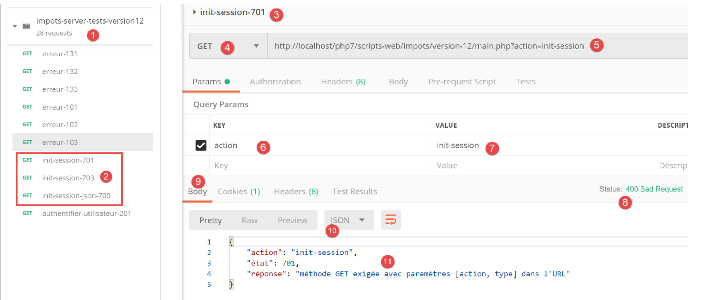
Oben:
- in [2] drei neue Tests;
- in [3-7] die Aktion [init-session], bei der der Parameter [type] fehlt;
- in [8-11] die Antwort jSON des Servers;
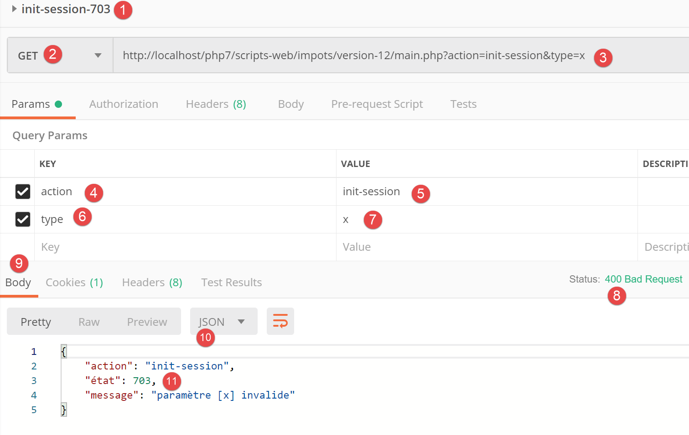
Oben:
- in [1-7] die Aktion [init-session] mit einem falschen Parameter [type];
- in [8-11] die Antwort jSON vom Server;

Oben:
- in [1-8] die Aktion [init-session] mit dem Typ jSON;
- in [9-12] die Antwort jSON des Servers;
23.11.3. Die Aktion [authentifier-utilisateur]
Die Aktion [authentifier-utilisateur] wird vom folgenden Controller [AuthentifierUtilisateurController] ausgeführt:
<?php
namespace Application;
// Symfony-Abhängigkeiten
use \Symfony\Component\HttpFoundation\Response;
use \Symfony\Component\HttpFoundation\Request;
use \Symfony\Component\HttpFoundation\Session\Session;
class AuthentifierUtilisateurController implements InterfaceController {
// $config ist die Konfiguration der Anwendung
// Bearbeitung einer Anfrage Request
// nutzt die Sitzung „Session“ und kann diese ändern
// $infos sind zusätzliche Informationen, die für jeden Controller spezifisch sind
// gibt ein Array zurück: [$statusCode, $état, $content, $headers]
public function execute(
array $config,
Request $request,
Session $session,
array $infos = NULL): array {
// muss ein POST und ein einziger Parameter GET vorhanden sein
$method = strtolower($request->getMethod());
$erreur = $method !== "post" || $request->query->count() != 1;
if ($erreur) {
$état = 201;
$message = "méthode POST requise, paramètre [action] dans l'URL, paramètres postés [user,password]";
// Das Ergebnis wird an den Hauptcontroller zurückgegeben
return [Response::HTTP_BAD_REQUEST, $état, ["réponse" => $message], []];
}
// Die Parameter von POST werden abgerufen
$erreurs = [];
// Benutzer
$état = 210;
if (!$request->request->has("user")) {
$état += 2;
$erreurs[] = "paramètre [user] manquant";
} else {
$user = $request->request->get("user");
}
// Passwort
if (!$request->request->has("password")) {
$état += 4;
$erreurs[] = "paramètre [password] manquant";
} else {
$password = trim($request->request->get("password"));
}
// Fehler?
if ($erreurs) {
// Das Ergebnis wird an den Hauptcontroller zurückgegeben
return [Response::HTTP_BAD_REQUEST, $état, ["réponse" => $erreurs], []];
}
// Überprüfung der Benutzerdaten
// Existiert der Benutzer?
$users = $config["users"];
$i = 0;
$trouvé = FALSE;
while (!$trouvé && $i < count($users)) {
$trouvé = ($user === $users[$i]["login"] && $users[$i]["passwd"] === $password);
$i++;
}
// Gefunden?
if (!$trouvé) {
// Fehlermeldung
$message = "Echec de l'authentification [$user, $password]";
$état = 221;
// Das Ergebnis wird an den Hauptcontroller zurückgegeben
return [Response::HTTP_UNAUTHORIZED, $état, ["réponse" => $message], []];
} else {
// In der Sitzung wird vermerkt, dass der Benutzer authentifiziert wurde
$session->set("user", TRUE);
// Erfolgsmeldung
$message = "Authentification réussie [$user, $password]";
$état = 200;
// Das Ergebnis wird an den Haupt-Controller zurückgegeben
return [Response::HTTP_OK, $état, ["réponse" => $message], []];
}
}
}
Anmerkungen
- Es wird eine Anfrage [POST main.php?action=authentifier-utilisateur] mit zwei über POST übermittelten Parametern [user, password] erwartet;
- Zeilen 24–25: Es wird überprüft, ob eine Anfrage POST mit einem einzigen Parameter in URL vorliegt;
- Zeilen 26–31: Falls ein Fehler vorliegt, wird dieser vermerkt und ein Ergebnis [$statusCode, $état, $content, $headers] an den Hauptcontroller zurückgegeben;
- Zeilen 36–39: Es wird überprüft, ob der Parameter [user] in den übermittelten Werten vorhanden ist. Ist dies nicht der Fall, wird der Fehler vermerkt;
- Zeilen 43–45: Es wird überprüft, ob der Parameter [password] in den übermittelten Werten vorhanden ist. Ist dies nicht der Fall, wird der Fehler vermerkt;
- Zeilen 50–53: Fehlt einer der übermittelten Werte, wird ein Ergebnis [$statusCode, $état, $content, $headers] an den Hauptcontroller zurückgegeben;
- Zeilen 56–62: Es wird überprüft, ob das abgerufene Paar [$user,$password] in der Tabelle [$config[‘users’]] der Konfigurationsdatei vorhanden ist;
- Zeilen 64–69: Ist dies nicht der Fall, wird der Fehler protokolliert. Der Statuscode HTTP wird auf [Response::HTTP_UNAUTHORIZED] gesetzt und das Ergebnis [$statusCode, $état, $content, $headers] an den Hauptcontroller zurückgegeben;
- Zeile 72: Die Authentifizierung war erfolgreich. Dies wird in der Sitzung vermerkt, indem der Schlüssel [user] in die Sitzung geschrieben wird. Das Vorhandensein dieses Schlüssels zeigt eine erfolgreiche Authentifizierung an;
- Zeilen 73–77: Ein Erfolgsergebnis [$statusCode, $état, $content, $headers] wird an den Hauptcontroller zurückgegeben;
23.11.4. Tests [Postman]
Wir führen die Tests [Postman] des Controllers [AuthentifierUtilisateurController] im Modus jSON durch;
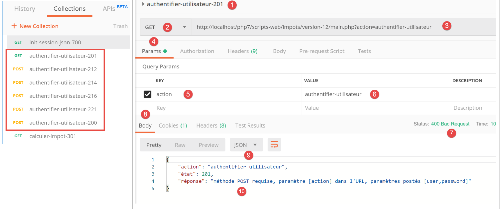
Oben:
- in [1-6] die Aktion [authentifier-utilisateur] mit einem GET [2], obwohl ein POST erforderlich ist;
- in [7-10] die Antwort jSON des Servers;
Ersetzen wir das GET durch ein POST [2], ohne Parameter in den Hauptteil der Antwort [7] einzufügen:

Oben:
- in [1-7], das POST ohne übermittelte Parameter in [7];
- in [8-11] die Antwort jSON vom Server;
Fügen wir nun einen Parameter [password] in den Hauptteil (Body) [4] der Anfrage ein:

Oben:
- in [1-6], eine Anfrage POST [2] mit einem Parameter [password], der an [4-6] gesendet wurde. Die übermittelten Parameter müssen in den Hauptteil (Body) der Anfrage [4] eingefügt werden. Es gibt mehrere Möglichkeiten, Werte an den Server zu übermitteln. Wir wählen die Methode [x-www-form-urlencoded] [5];
- in [8-10] die Antwort jSON vom Server;
Nun definieren wir den Parameter [user] ohne den Parameter [password]:

Oben:
- in [1-7], eine Anfrage POST ohne den Parameter [password] [4-7];
- in [8-11] die Antwort jSON vom Server;
Definieren wir nun die beiden gesendeten Parameter [user, password], jedoch mit Werten, die dazu führen, dass die Authentifizierung fehlschlägt:
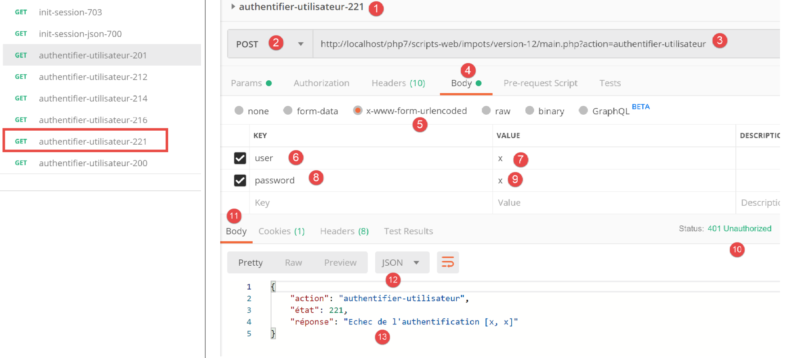
Oben:
- in [1-9] eine Anfrage POST mit falschen übermittelten Parametern [user, password];
- in [10-13] die Antwort jSON vom Server. Man beachte den Statuscode [401 Unauthorized] [10] der Antwort;
Nun eine Anfrage POST mit gültigen Anmeldedaten:
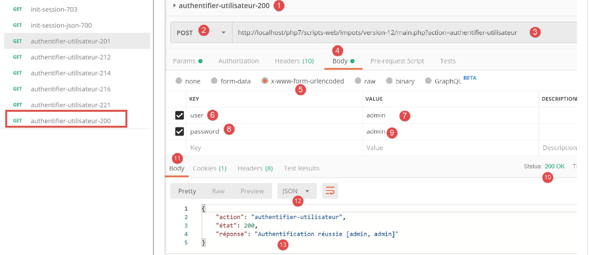
Oben:
- in [1-9] die Anfrage POST [2] mit gültigen Anmeldedaten [6-9];
- in [10-13] die Antwort jSON vom Server. Zu beachten ist der Statuscode HTTP [200 OK] in [10];
23.11.5. Die Aktion [calculer-impot]
Die Aktion [calculer-impot] wird vom folgenden Controller [CalculerImpotController] verarbeitet:
<?php
namespace Application;
// Symfony-Abhängigkeiten
use \Symfony\Component\HttpFoundation\Response;
use \Symfony\Component\HttpFoundation\Request;
use \Symfony\Component\HttpFoundation\Session\Session;
// Alias der Schicht [dao]
use \Application\ServerDaoWithSession as ServerDaoWithRedis;
class CalculerImpotController implements InterfaceController {
// $config ist die Anwendungskonfiguration
// Verarbeitung einer Anfrage (Request)
// nutzt die Sitzung „Session“ und kann diese ändern
// $infos sind zusätzliche Informationen, die für jeden Controller spezifisch sind
// gibt ein Array zurück: [$statusCode, $état, $content, $headers]
public function execute(
array $config,
Request $request,
Session $session,
array $infos = NULL): array {
// muss einen Parameter GET und drei Parameter POST enthalten
$method = strtolower($request->getMethod());
$erreur = $method !== "post" || $request->query->count() != 1;
if ($erreur) {
// der Fehler wird vermerkt
$message = "il faut utiliser la méthode [post] avec [action] dans l'URL et les paramètres postés [marié, enfants, salaire]";
$état = 301;
// Das Ergebnis wird an den Hauptcontroller zurückgesendet
return [Response::HTTP_BAD_REQUEST, $état, ["réponse" => $message], []];
}
// Die Parameter von POST werden abgerufen
$erreurs = [];
$état = 310;
// Familienstand
if (!$request->request->has("marié")) {
$état += 2;
$erreurs[] = "paramètre [marié] manquant";
} else {
$marié = trim(strtolower($request->request->get("marié")));
$erreur = $marié !== "oui" && $marié !== "non";
if ($erreur) {
$état += 4;
$erreurs[] = "valeur [$marié] invalide pour le paramètre [marié]";
}
}
// Anzahl der Kinder abrufen
if (!$request->request->has("enfants")) {
$état += 8;
$erreurs[] = "paramètre [enfants] manquant";
} else {
$enfants = trim($request->request->get("enfants"));
$erreur = !preg_match("/^\d+$/", $enfants);
if ($erreur) {
$état += 9;
$erreurs[] = "valeur [$enfants] invalide pour le paramètre [enfants]";
}
}
// Abruf des Jahresgehalts
if (!$request->request->has("salaire")) {
$erreurs[] = "paramètre [salaire] manquant";
$état += 16;
} else {
$salaire = trim($request->request->get("salaire"));
$erreur = !preg_match("/^\d+$/", $salaire);
if ($erreur) {
$état += 17;
$erreurs[] = "valeur [$salaire] invalide pour le paramètre [salaire]";
}
}
// Fehler?
if ($erreurs) {
// Ergebnis an den Hauptcontroller zurückgeben
return [Response::HTTP_BAD_REQUEST, $état, ["réponse" => $erreurs], []];
}
// Wir haben alles, was wir für die Arbeit brauchen
// Redis
\Predis\Autoloader::register();
try {
// Client [predis]
$redis = new \Predis\Client();
// Wir stellen eine Verbindung zum Server her, um zu prüfen, ob er erreichbar ist
$redis->connect();
} catch (\Predis\Connection\ConnectionException $ex) {
// Es ist schiefgelaufen
// Das Ergebnis wird mit einem Fehler an den Hauptcontroller zurückgemeldet
$état = 350;
return [Response::HTTP_INTERNAL_SERVER_ERROR, $état,
["réponse" => "[redis], " . utf8_encode($ex->getMessage())], []];
}
// Es liegen gültige Parameter vor
// Erstellung der Ebene [dao]
if (!$redis->get("taxAdminData")) {
try {
// Die Steuerdaten werden aus der Datenbank abgerufen
$dao = new ServerDaoWithRedis($config["databaseFilename"], NULL);
// Die abgerufenen Daten werden in Redis gespeichert
$redis->set("taxAdminData", $dao->getTaxAdminData());
} catch (\RuntimeException $ex) {
// Es ist ein Fehler aufgetreten
// Das Ergebnis wird mit einem Fehler an den Hauptcontroller zurückgemeldet
$état = 340;
return [Response::HTTP_INTERNAL_SERVER_ERROR, $état,
["réponse" => utf8_encode($ex->getMessage())], []];
}
} else {
// Die Steuerdaten werden aus dem Bereichsspeicher [application] abgerufen
$arrayOfAttributes = \json_decode($redis->get("taxAdminData"), true);
$taxAdminData = (new TaxAdminData())->setFromArrayOfAttributes($arrayOfAttributes);
// Instanziierung der Schicht [dao]
$dao = new ServerDaoWithRedis(NULL, $taxAdminData);
}
// Erstellung der Schicht [métier]
$métier = new ServerMetier($dao);
// Wir haben alles, was wir zum Arbeiten brauchen – Berechnung der Steuer
$résultat = $métier->calculerImpot($marié, (int) $enfants, (int) $salaire);
// Die soeben durchgeführte Simulation wird der Sitzung hinzugefügt
$simulation = new Simulation();
$résultat = ["marié" => $marié, "enfants" => $enfants, "salaire" => $salaire] + $résultat;
$simulation->setFromArrayOfAttributes($résultat);
// Gibt es eine Liste der Simulationen in der Sitzung?
if (!$session->has("simulations")) {
$simulations = [];
} else {
$simulations = $session->get("simulations");
}
// Hinzufügen der Simulation zur Simulationsliste
$simulations[] = $simulation;
// Die Simulationen werden wieder in die Sitzung aufgenommen
$session->set("simulations", $simulations);
// Rückgabe des Ergebnisses an den Hauptcontroller
$état = 300;
return [Response::HTTP_OK, $état, ["réponse" => $résultat], []];
}
}
Anmerkungen
- Die erwartete Anfrage lautet [POST main.php?action=calculer-impot] mit drei übermittelten Parametern [marié, enfants, salaire]:
- [marié] muss seinen Wert in [oui, non] haben;
- [enfants, salaire] muss eine positive ganze Zahl oder Null sein;
- Zeilen 26–27: Es wird überprüft, ob tatsächlich ein POST mit einem einzigen Parameter in URL vorhanden ist;
- Zeilen 28–34: Ist dies nicht der Fall, wird ein Fehlerergebnis an die Hauptsteuerung gesendet;
- Zeile 36: Die Fehlermeldungen werden im Array „[$erreurs]“ gesammelt;
- Zeilen 39–41: Es wird geprüft, ob der Parameter [marié] vorhanden ist. Ist dies nicht der Fall, wird der Fehler vermerkt;
- Zeilen 43–49: Es wird überprüft, ob der Wert von [marié] in [oui, non] enthalten ist. Ist dies nicht der Fall, wird der Fehler protokolliert;
- Zeilen 51–54: Es wird überprüft, ob der Parameter [enfants] vorhanden ist. Ist dies nicht der Fall, wird der Fehler vermerkt;
- Zeilen 55–61: Es wird überprüft, ob der Wert des Parameters [enfants] eine positive Zahl oder Null ist. Ist dies nicht der Fall, wird der Fehler protokolliert;
- Zeilen 63–66: Es wird geprüft, ob der Parameter [salaire] vorhanden ist. Ist dies nicht der Fall, wird der Fehler vermerkt;
- Zeilen 67–72: Es wird überprüft, ob der Wert des Parameters [salaire] eine positive Zahl oder Null ist. Ist dies nicht der Fall, wird der Fehler vermerkt;
- Zeilen 75–78: Ist das Array [$erreurs] nicht leer, sind Fehler aufgetreten. Das Fehler-Array wird in die Antwort aufgenommen und das Ergebnis an den Hauptcontroller zurückgegeben;
- Zeile 80: Es liegen gültige Parameter vor. Die Steuer kann berechnet werden. Dazu müssen die Ebenen [dao] und [métier] erstellt werden, die diese Berechnung durchführen können;
- Zeilen 82–94: Wir legen einen Client [Redis] an;
- Zeilen 88–94: Wenn keine Verbindung zum Server [Redis] hergestellt werden konnte, wird ein Code [500 Internal Server Error] an den Client gesendet;
- Zeile 98: Es wird geprüft, ob der Server [Redis] über den Schlüssel [taxAdminData] verfügt. Dieser Schlüssel steht für die Daten der Steuerbehörde. Ist der Schlüssel nicht vorhanden, müssen die Steuerdaten aus der Datenbank abgerufen werden;
- Zeile 101: Erstellung der Ebene [dao], wenn die Steuerdaten aus der Datenbank abgerufen werden müssen. Die Klasse [ServerDaoWithRedis] wurde im Abschnitt „Verknüpfung“ beschrieben;
- Zeile 103: Die aus der Datenbank abgerufenen Daten werden unter dem Schlüssel [taxAdminData] im Speicher [Redis] abgelegt;
- Zeilen 104–110: Wenn die Suche in der Datenbank fehlgeschlagen ist, wird der von der Schicht [dao] zurückgegebene Fehler vermerkt und in das an den Hauptcontroller zurückgesendete Ergebnis integriert;
- Zeile 109: Die von der Schicht [PDO] zurückgegebene Fehlermeldung ist in [iso-8859-1] kodiert. Sie wird in [utf-8] kodiert;
- Zeilen 111–117: Wenn der Schlüssel [taxAdminData] im Speicher [Redis] vorhanden ist, werden die Steuerdaten direkt an den Konstruktor der Schicht [dao] übergeben;
- Zeile 119: Die Schicht [métier] wird angelegt. Die Klasse [ServerMetier] wurde im Abschnitt „Verknüpfung“ beschrieben;
- Zeilen 124–126: Mit dem berechneten Steuerbetrag wird ein Objekt [Simulation] angelegt. Die Klasse [Simulation] kapselt die Daten einer Simulation und wurde im Abschnitt „Link“ beschrieben;
- Zeilen 128–132: Die soeben erstellte Simulation muss zur Liste der bereits berechneten Simulationen hinzugefügt werden. Diese Liste befindet sich in der Sitzung, es sei denn, es wurde noch keine Simulation durchgeführt;
- Zeilen 133–136: Die Simulation wird der Liste der Simulationen hinzugefügt und diese wird wieder in die Sitzung übernommen;
- Zeilen 137–139: Das Ergebnis wird an die Hauptsteuerung zurückgegeben;
23.11.6. Tests [Postman]
Wir führen die Tests [Postman] des Controllers [CalculerImpotController] im Modus jSON durch;
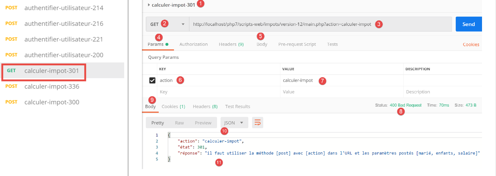
Oben:
- In [1-7] wird eine Anfrage [GET] anstelle von [POST] gestellt;
- bei [8-11] lautet die Antwort des Servers jSON;
Verwenden wir nun eine Methode [POST], mit oder ohne übermittelte Parameter sowie mit ungültigen übermittelten Parametern:

Oben:
- Es wird eine Anfrage [POST] [2] mit ungültigen POST-Parametern [6-11] [marié, enfants, salaire] gesendet. Man kann einen dieser Parameter weglassen, indem man das entsprechende Kontrollkästchen in [16] deaktiviert. So können Sie verschiedene Szenarien testen. Auf dem obigen Screenshot sind alle drei Parameter vorhanden und alle ungültig;
- in [12-15] die Antwort jSON des Servers;
Deaktivieren wir nun zwei der drei gesendeten Parameter:

Oben,
- in [5-8] wird nur der Parameter [salaire] gesendet, und dieser ist zudem ungültig;
- bei [9-11] das Ergebnis jSON vom Server;
Führen wir nun eine Steuerberechnung mit gültigen Parametern durch:

Oben:
- in [1118] eine Anfrage mit gültigen Parametern [6-8];
- in [12-14] die Antwort jSON vom Server;
23.11.7. Die Aktion [lister-simulations]
Die Aktion [lister-simulations] wird vom folgenden sekundären Controller [ListerSimulationsController] verarbeitet:
<?php
namespace Application;
// Symfony-Abhängigkeiten
use \Symfony\Component\HttpFoundation\Response;
use \Symfony\Component\HttpFoundation\Request;
use \Symfony\Component\HttpFoundation\Session\Session;
class ListerSimulationsController {
// $config ist die Konfiguration der Anwendung
// Verarbeitung einer Anfrage (Request)
// nutzt die Session und kann diese ändern
// $infos sind zusätzliche Informationen, die für jeden Controller spezifisch sind
// gibt ein Array zurück: [$statusCode, $état, $content, $headers]
public function execute(
array $config,
Request $request,
Session $session,
array $infos = NULL): array {
// muss einen eindeutigen Parameter enthalten: GET
$method = strtolower($request->getMethod());
$erreur = $method !== "get" || $request->query->count() != 1;
if ($erreur) {
$état = 501;
$message = "GET requis, avec l'unique paramètre [action] dans l'URL";
// Es wird ein Ergebnis mit einem Fehler an den Hauptcontroller zurückgegeben
return [Response::HTTP_BAD_REQUEST, $état, ["réponse" => $message], []];
}
// Die Liste der Simulationen in der Sitzung wird abgerufen
if (!$session->has("simulations")) {
$simulations = [];
} else {
$simulations = $session->get("simulations");
}
// Es wird ein erfolgreiches Ergebnis an den Hauptcontroller zurückgegeben
$état = 500;
return [Response::HTTP_OK, $état, ["réponse" => $simulations], []];
}
}
Kommentare
- Anfrage [GET main.php?action=lister-simulations];
- Zeilen 24–25: Es wird überprüft, ob eine Anfrage GET mit einem einzigen Parameter vorliegt;
- Zeilen 26–31: Ist dies nicht der Fall, wird ein Fehlerergebnis an den Hauptcontroller zurückgegeben;
- Zeilen 33–37: Die Liste der Simulationen wird aus der Sitzung abgerufen, sofern sie dort vorhanden ist (Zeile 36), andernfalls ist diese Liste leer (Zeile 34);
- Zeilen 39–40: Die Liste der Simulationen wird an den Hauptcontroller zurückgegeben;
23.11.8. Tests [Postman]
Wir werden zwei Tests erstellen, einen für den Fehlerfall und einen für den erfolgreichen Fall.

Oben:
- In [1-8] wird eine Anfrage an [GET] gestellt, wobei ein überflüssiger Parameter [param1] in URL [3, 7-8] enthalten ist;
- bei [9-12] die Antwort jSON vom Server;
Nun führen wir eine gültige Anfrage durch:

Oben:
- in [1-5], eine gültige Anfrage;
Das Ergebnis der Anfrage lautet wie folgt:

- in [3-6] die Antwort jSON des Servers. Vor diesem Test war der Test [Postman] [calculer-impot-300] mehrmals ausgeführt worden, um Simulationen in der Websitzung des Servers zu erstellen;
23.11.9. Die Aktion [supprimer-simulation]
Die Aktion [supprimer-simulation] wird vom folgenden sekundären Controller [SupprimerSessionController] verarbeitet:
<?php
namespace Application;
// Symfony-Abhängigkeiten
use \Symfony\Component\HttpFoundation\Response;
use \Symfony\Component\HttpFoundation\Request;
use \Symfony\Component\HttpFoundation\Session\Session;
class SupprimerSimulationController {
/// $config ist die Konfiguration der Anwendung
// Verarbeitung einer Anfrage (Request)
// nutzt die Session und kann diese ändern
// $infos sind zusätzliche Informationen, die für jeden Controller spezifisch sind
// gibt ein Array zurück: [$statusCode, $état, $content, $headers]
public function execute(
array $config,
Request $request,
Session $session,
array $infos = NULL): array {
// Es müssen zwei Parameter vorhanden sein: GET
$method = strtolower($request->getMethod());
$erreur = $method !== "get" || $request->query->count() != 2;
$état = 600;
if ($erreur) {
$état += 2;
$message = "GET requis, avec les paramètres [action, numéro]";
}
// Der Parameter [numéro] muss vorhanden sein
if (!$erreur) {
$état += 4;
$erreur = !$request->query->has("numéro");
if ($erreur) {
$message = "paramètre [numéro] manquant";
}
}
// Der Parameter [numéro] muss gültig sein
if (!$erreur) {
$état += 8;
$numéro = $request->query->get("numéro");
$erreur = !preg_match("/^\d+$/", $numéro);
if ($erreur) {
$message = "paramètre [$numéro] invalide";
}
}
// Der Parameter [numéro] muss im Intervall [0,n-1] liegen
// wenn n die Anzahl der Simulationen ist
if (!$erreur) {
$numéro = (int) $numéro;
$erreur = !$session->has("simulations");
if (!$erreur) {
$simulations = $session->get("simulations");
$erreur = $numéro < 0 || $numéro >= count($simulations);
}
if ($erreur) {
$état += 16;
$message = "la simulation n° [$numéro] n'existe pas";
}
}
// Fehler?
if ($erreur) {
// Das Ergebnis wird an den Hauptcontroller zurückgegeben
return [Response::HTTP_BAD_REQUEST, $état, ["réponse" => $message], []];
}
// Die Simulation wird gelöscht $numéro
unset($simulations[$numéro]);
$simulations = array_values($simulations);
// Die Simulationen werden wieder in die Sitzung aufgenommen
$session->set("simulations", $simulations);
// Die Liste der Simulationen wird an den Client zurückgegeben
$état = 600;
return [Response::HTTP_OK, $état, ["réponse" => $simulations], []];
}
}
Kommentare
- Abfrage [GET main.php?action=supprimer-simulation&numéro=x];
- Zeilen 24–30: Es wird überprüft, ob eine Abfrage mit dem Namen „GET“ und zwei Parametern vorliegt;
- Zeilen 32–38: Es wird überprüft, ob der Parameter [numéro] in den Parametern von URL vorhanden ist;
- Zeilen 40–47: Es wird überprüft, ob der Wert des Parameters [numéro] syntaktisch korrekt ist;
- Zeilen 50–61: Es wird überprüft, ob die Simulation Nr. [numéro] tatsächlich vorhanden ist. Es gibt zwei Fehlerfälle:
- Die Simulationsliste kann in der Sitzung nicht gefunden werden (Zeile 52);
- die Nummer [numéro] der zu löschenden Simulation ist in der Simulationsliste nicht vorhanden;
- Zeilen 63–66: Im Fehlerfall wird ein Fehlerergebnis an den Hauptcontroller zurückgegeben;
- Zeile 68: Die Simulation mit der Nummer [numéro] wird gelöscht;
- Zeile 69: Der Vorgang [unset] ändert die Indizes [0, n-1] in der Liste nicht. Um diese zu aktualisieren, werden die Werte des Arrays [$simulations] abgefragt, um die fehlende Simulation zu entfernen;
- Zeile 71: Das neue Simulationsarray wird wieder in die Sitzung übernommen;
- Zeilen 73–74: Die neue Liste der Simulationen wird an den Hauptcontroller zurückgegeben;
23.11.10. Tests [Postman]
Wir führen Fehler- und Erfolgstests durch:

Oben:
- in [1-6] eine Anfrage GET ohne den Parameter [numéro];
- in [7-10] die Antwort jSON vom Server;
Nun eine Anfrage mit einer syntaktisch falschen Nummer:
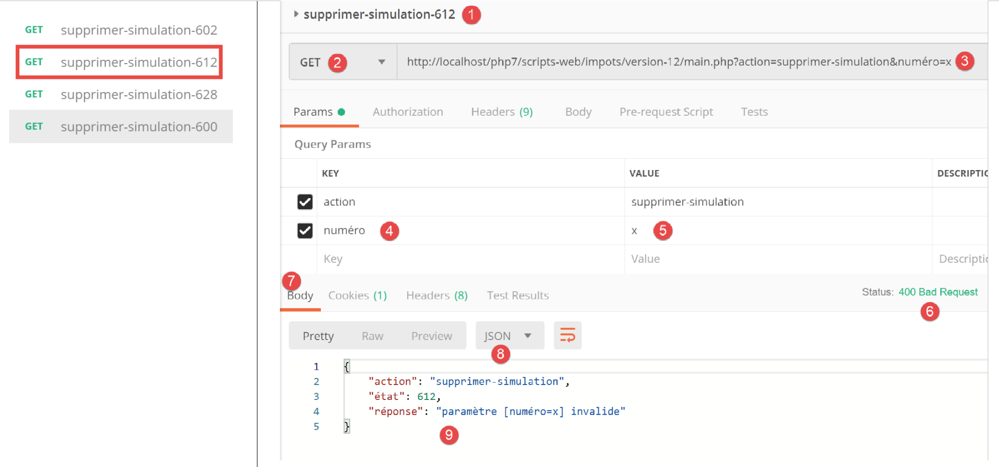
Oben:
- in [1-5], eine Anfrage GET mit einem ungültigen Parameter [numéro] [3, 5];
- in [6-9] die Antwort jSON vom Server;
Nun eine Anfrage mit einer nicht existierenden Simulationsnummer:

Oben:
- in [1-5], eine Anfrage mit der Simulationsnummer 100, die in der Simulationsliste nicht vorhanden ist;
- in [6-9] die Antwort jSON vom Server;
Nun werden wir die Simulation Nr. 0 aus der Liste löschen, also die erste Simulation. Zunächst fordern wir diese Liste erneut mit der Anfrage [lister-simulations-500] an:

- In [1] sind derzeit 2 Simulationen enthalten;
Wir löschen die erste Simulation (Nummer 0):

Oben:
- In [1-5] wird die Simulation Nr. 0 ([5]) gelöscht;
- in [6-9] die Antwort jSON vom Server. Man sieht, dass die Simulation Nr. 0 gelöscht wurde;
Wiederholen wir diesen Vorgang:
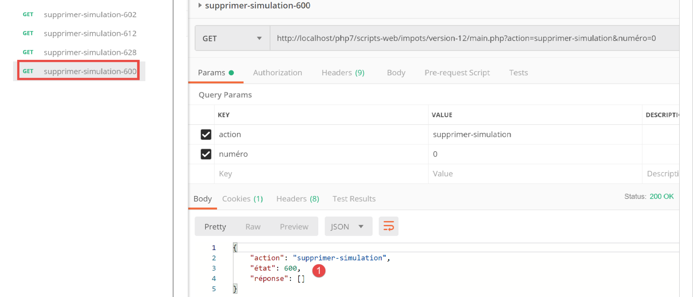
Oben:
- in [1] sind keine Simulationen mehr in der Web-Sitzung des Servers vorhanden;
23.11.11. Die Aktion [fin-session]
Die Aktion [fin-session] wird vom folgenden sekundären Controller [FinSessionController] verarbeitet:
<?php
namespace Application;
// Symfony-Abhängigkeiten
use \Symfony\Component\HttpFoundation\Response;
use \Symfony\Component\HttpFoundation\Request;
use \Symfony\Component\HttpFoundation\Session\Session;
class FinSessionController implements InterfaceController {
// $config ist die Konfiguration der Anwendung
// Verarbeitung einer Anfrage (Request)
// nutzt die Session und kann diese ändern
// $infos sind zusätzliche Informationen, die für jeden Controller spezifisch sind
// gibt ein Array zurück: [$statusCode, $état, $content, $headers]
public function execute(
array $config,
Request $request,
Session $session,
array $infos = NULL): array {
// Es muss ein einziger Parameter vorhanden sein: GET
$method = strtolower($request->getMethod());
$erreur = $method !== "get" || $request->query->count() != 1;
// Fehler?
if ($erreur) {
$état = 401;
// Ergebnis an den Hauptcontroller
$message = "GET requis avec le seul paramètre [action] dans l'URL";
return [Response::HTTP_BAD_REQUEST, $état, ["réponse" => $message], []];
}
// Der Sitzungstyp wird gespeichert
$type = $session->get("type");
// Die aktuelle Sitzung wird ungültig gemacht
$session->invalidate();
// Der Typ wird in die neue Sitzung übernommen
$session->set("type", $type);
// Antwort wird gesendet
$état = 400;
// Ergebnis an den Hauptcontroller
$content = ["réponse" => "session supprimée"];
return [Response::HTTP_OK, $état, $content, []];
}
}
Kommentare
- Abfrage [GET main.php?action=fin-session];
- Zeilen 25–33: Es wird überprüft, ob es sich bei der Aktion um eine GET mit dem einzigen Parameter [fin-action] handelt;
- Zeile 38: Die aktuelle Sitzung wird ungültig gemacht. Dadurch werden die darin gespeicherten Daten gelöscht und eine neue Sitzung gestartet;
- Zeile 36: Vor dem Ende der Sitzung wird deren Typ [json, xml, html] gespeichert;
- Zeile 40: Der Typ der vorherigen Sitzung wird in die neue Sitzung übernommen. Schließlich wird mit einer neuen Sitzung fortgefahren, die den eindeutigen Schlüssel [type] hat;
- Zeilen 44–45: Das Ergebnis wird an den Hauptcontroller zurückgegeben;
23.11.12. Tests [Postman]
Wir führen einen Fehlertest und einen Erfolgstest durch:

Oben:
- In [1-5] wird das Beenden der Sitzung [5] mit einem POST [2] anstelle des erwarteten GET angefordert;
- in [6-9] die Antwort jSON vom Server;
Nun ein Beispiel für einen erfolgreichen Versuch. Betrachten wir zunächst das Sitzungs-Cookie, das beim letzten durchgeführten Test zwischen dem Client [Postman] und dem Server ausgetauscht wurde:

Oben:
- in [3] das vom Client [Postman] an den Server gesendete Sitzungs-Cookie;
Sehen wir uns nun die vom Server in seiner Antwort gesendeten Header HTTP an:

Oben:
- In [3-4] ist das Sitzungs-Cookie nicht in der Antwort des Servers enthalten. Das ist normal. Der Server sendet es nur einmal: zu Beginn einer neuen Websitzung;
Führen wir nun eine gültige Aktion [fin-session] aus:
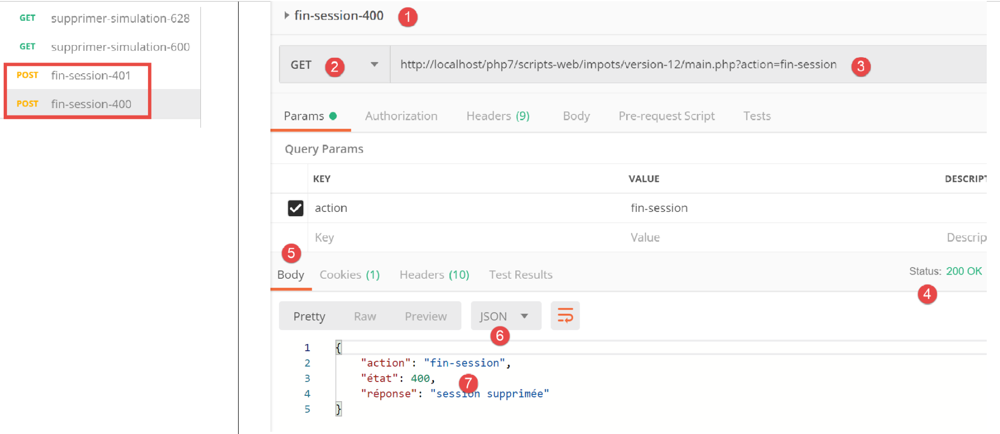
Oben:
- in [1-3] eine gültige Aktion [fin-session];
- in [4-7] die Antwort jSON des Servers;
Sehen wir uns die in der Antwort des Servers gesendeten Header HTTP an:

- In [3] sendet der Server den Header [Set-Cookie] und zeigt damit an, dass eine neue Websitzung beginnt;
23.12. Die Antworttypen des Servers
23.12.1. Einleitung
Werfen wir noch einmal einen Blick auf die allgemeine Architektur der Anwendung:

Wir stellen nun die möglichen Antworttypen [3a] vor. Diese sind im Ordner [Responses] des Projekts zusammengefasst:

Die Klasse [JsonResponse] haben wir bereits im Abschnitt „Link“ vorgestellt. Sie implementiert die Schnittstelle [InterfaceResponse] und erweitert die Klasse [ParentResponse]. Dies gilt auch für die beiden anderen Klassen [XmlResponse] und [HtmlResponse].
Zur Erinnerung: Die Definition der Schnittstelle [InterfaceResponse] lautet:
<?php
namespace Application;
// Symfony-Abhängigkeiten
use Symfony\Component\HttpFoundation\Request;
use Symfony\Component\HttpFoundation\Session\Session;
interface InterfaceResponse {
// Anfrage $request: Anfrage wird gerade bearbeitet
// Sitzung $session: Die Sitzung der Webanwendung
// Array $config: die Konfiguration der Anwendung
// int statusCode: der Antwortstatuscode HTTP
// array $content: die Antwort des Servers
// array $headers: die an die Antwort anzuhängenden Header HTTP
// Logger $logger: der Logger zum Schreiben von Logs
public function send(
Request $request = NULL,
Session $session = NULL,
array $config,
int $statusCode,
array $content,
array $headers,
Logger $logger = NULL): void;
}
- Zeilen 19–27: Die Schnittstelle [InterfaceResponse] verfügt über eine einzige Methode, [send], um die Antwort an den Client zu senden;
- Zeilen 11–17: Die Bedeutung der verschiedenen Parameter der Methode [send];
- Zeilen 23–25: Die Parameter [$statusCode, $content, $headers] stellen die Standardantwort der sekundären Controller der Anwendung dar. Die Antwort benötigt jedoch möglicherweise weitere Informationen. Daher werden ihr die ersten drei Parameter (Zeilen 20–22) übergeben, die ihr Zugriff auf alle Informationen bezüglich der Anfrage, der Sitzung und der Konfiguration gewähren;
- Zeile 26: Die Antwort benötigt den Parameter [Logger], da sie die an den Kunden gesendete Antwort protokolliert;
Sehen wir uns nun den Code der Klasse [ParentResponse] an, der übergeordneten Klasse der drei Antworttypen, die deren gemeinsame Merkmale zusammenfasst: das tatsächliche Senden einer Textantwort an den Kunden:
<?php
namespace Application;
// Symfony-Abhängigkeiten
use Symfony\Component\HttpFoundation\Response;
class ParentResponse {
// int $statusCode: der HTTP-Statuscode der Antwort
// Zeichenkette $content: der zu sendende Antworttext
// je nach Fall handelt es sich um eine Zeichenkette jSON, XML oder HTML
// Array $headers: die an die Antwort anzuhängenden Header HTTP
public function sendResponse(
int $statusCode,
string $content,
array $headers): void {
// Vorbereitung der Textantwort des Servers
$response = new Response();
$response->setCharset("utf-8");
// Statuscode
$response->setStatusCode($statusCode);
// Header
foreach ($headers as $text => $value) {
$response->headers->set($text, $value);
}
// Die Antwort wird gesendet
$response->setContent($content);
$response->send();
}
}
Kommentare
- Zeilen 10–13: Die Bedeutung der drei Parameter der Methode [send];
- Zeile 17: Es ist zu beachten, dass der Antworttext vom Typ [string] ist und somit versandbereit ist (Zeile 30);
- Zeile 22: Die Antwort enthält Zeichen vom Typ UTF-8;
- Zeile 24: Statuscode HTTP der Antwort;
- Zeilen 26–28: Hinzufügen der vom aufrufenden Code angegebenen Header HTTP;
- Zeilen 30–31: Senden der Antwort an den Client;
Schließlich sei noch der Code des Hauptcontrollers erwähnt, der das Senden der Antwort an den Kunden anfordert:
// Die Schlüssel [action, état] werden der Antwort des Controllers hinzugefügt
$content = ["action" => $action, "état" => $état] + $content;
// Das Objekt [Response] wird instanziiert, das für das Senden der Antwort an den Client zuständig ist
$response = __NAMESPACE__ . $config["types"][$type]["response"];
(new $response())->send($request, $session, $config, $statusCode, $content, $headers, $logger);
// Die Antwort wurde gesendet – die Ressourcen werden freigegeben
$logger->close();
exit;
- Zeile 4: Der Name der zu instanziierenden Klasse „[Response]“ wird festgelegt;
- Zeile 5: Die Klasse wird instanziiert und die Antwort wird mithilfe der Methode [send($request, $session, $config, $statusCode, $content, $headers, $logger)] an den Client gesendet. Da sie dieselbe Schnittstelle [InterfaceResponse] implementieren, haben die Methoden [send] der verschiedenen Antworttypen alle dieselbe Signatur;
23.12.2. Die Klasse [JsonResponse]
Sie wurde bereits im Abschnitt „Link“ vorgestellt. Wir geben ihren Code jedoch noch einmal wieder, um die Homogenität der drei Antwortklassen besser hervorzuheben:
Die Klasse [JsonResponse] implementiert die Schnittstelle [InterfaceResponse] wie folgt:
<?php
namespace Application;
// Symfony-Abhängigkeiten
use Symfony\Component\Serializer\Encoder\JsonEncode;
use Symfony\Component\Serializer\Encoder\JsonEncoder;
use Symfony\Component\Serializer\Normalizer\ObjectNormalizer;
use Symfony\Component\Serializer\Serializer;
use \Symfony\Component\HttpFoundation\Request;
use \Symfony\Component\HttpFoundation\Session\Session;
class JsonResponse extends ParentResponse implements InterfaceResponse {
// Anfrage $request: Anfrage wird gerade bearbeitet
// Sitzung $session: Die Sitzung der Webanwendung
// Array $config: die Konfiguration der Anwendung
// int statusCode: der Antwortstatuscode HTTP
// array $content: die Antwort des Servers
// array $headers: die an die Antwort anzuhängenden Header HTTP
// Logger $logger: der Logger zum Schreiben von Logs
public function send(
Request $request = NULL,
Session $session = NULL,
array $config,
int $statusCode,
array $content,
array $headers,
Logger $logger = NULL): void {
// Vorbereitung des Symfony-Serialisierers
$serializer = new Serializer(
[
// erforderlich für die Serialisierung von Objekten
new ObjectNormalizer()],
// Encoder jSON
// Für die Optionen: Fügen Sie zwischen den verschiedenen Optionen „OU“ ein
[new JsonEncoder(new JsonEncode([JsonEncode::OPTIONS => JSON_UNESCAPED_UNICODE]))]
);
// Serialisierung jSON
$json = $serializer->serialize($content, 'json');
// Header
$headers = array_merge($headers, ["content-type" => "application/json"]);
// Antwort senden
parent::sendResponse($statusCode, $json, $headers);
// Protokoll
if ($logger !== NULL) {
$logger->write("réponse=$json\n");
}
}
}
Kommentare
- Zeile 13: Die Klasse implementiert die Schnittstelle [InterfaceResponse];
- Zeile 13: Die Klasse erbt von der Klasse [ParentResponse]. Alle Typen von [Response] erben von dieser Klasse. Es ist diese übergeordnete Klasse, die die Antwort an den Client sendet (Zeile 46). Da dieser Code allen Typen von [Response] gemeinsam war, wurde er in eine übergeordnete Klasse ausgelagert;
- Zeilen 33–40: Instanziierung des Serializers [Symfony], der die Antwort des Servers [$content] in eine Zeichenkette jSON umwandelt (Zeile 42);
- Zeilen 34–36: Der erste Parameter des Konstruktors von [Serializer] ist ein Array. Darin wird eine Instanz der Klasse [ObjectNormalizer] abgelegt, die für die Serialisierung von Objekten erforderlich ist. Dieser Fall tritt in dieser Anwendung bei einer Liste von Simulationen auf, wobei jede Simulation eine Instanz der Klasse [Simulation] ist;
- Zeile 39: Der zweite Parameter des Konstruktors von [Serializer] ist ebenfalls ein Array: darin werden alle bei einer Serialisierung verwendeten Encoder abgelegt (XML, jSON, CSV…);
- Zeile 39: Hier wird es nur einen Encoder geben, vom Typ [JsonEncoder]. Der Konstruktor ohne Parameter hätte ausreichen können. Hier haben wir dem Konstruktor einen Parameter [JsonEncode] übergeben, ausschließlich um die Kodierungsoptionen von jSON zu übergeben;
- Zeile 39: Der Konstruktorparameter [JsonEncode] ist ein Array von Optionen. Hier wird die Option [JSON_UNESCAPED_UNICODE] verwendet, um festzulegen, dass die Zeichen UTF-8 der Zeichenkette jSON nativ dargestellt und nicht „escapet“ werden sollen;
- Zeile 42: Der Hauptteil der Antwort HHTP wird mithilfe des vorherigen Serializers in jSON serialisiert;
- Zeile 44: Es wird der Header HTTP hinzugefügt, der dem Client mitteilt, dass ihm jSON gesendet wird;
- Zeile 46: Die übergeordnete Klasse wird aufgefordert, die Antwort an den Client zu senden;
- Zeilen 48–50: Die Antwort jSON wird protokolliert;
23.12.3. Die Klasse [XmlResponse]
Die Klasse [XmlResponse] implementiert die Schnittstelle [InterfaceResponse] wie folgt:
<?php
namespace Application;
// Symfony-Abhängigkeiten
use Symfony\Component\HttpFoundation\Request;
use Symfony\Component\HttpFoundation\Session\Session;
use Symfony\Component\Serializer\Encoder\JsonEncode;
use Symfony\Component\Serializer\Encoder\JsonEncoder;
use Symfony\Component\Serializer\Encoder\XmlEncoder;
use Symfony\Component\Serializer\Normalizer\ObjectNormalizer;
use Symfony\Component\Serializer\Serializer;
class XmlResponse extends ParentResponse implements InterfaceResponse {
// Anfrage $request: Anfrage wird gerade bearbeitet
// Sitzung $session: Die Sitzung der Webanwendung
// Array $config: die Konfiguration der Anwendung
// int statusCode: der Antwortstatuscode HTTP
// array $content: die Antwort des Servers
// array $headers: die an die Antwort anzuhängenden Header HTTP
// Logger $logger: der Logger zum Schreiben von Logs
public function send(
Request $request = NULL,
Session $session = NULL,
array $config,
int $statusCode,
array $content,
array $headers,
Logger $logger = NULL): void {
// Vorbereitung des Symfony-Serialisierers
$serializer = new Serializer(
// erforderlich für die Serialisierung von Objekten
[new ObjectNormalizer()],
[
// Serialisierung XML
new XmlEncoder(
[
XmlEncoder::ROOT_NODE_NAME => 'root',
XmlEncoder::ENCODING => 'utf-8'
]
),
// Serialisierung jSON
new JsonEncoder(new JsonEncode([JsonEncode::OPTIONS => JSON_UNESCAPED_UNICODE]))
]
);
// Serialisierung XML
$xml = $serializer->serialize($content, 'xml');
// Header
$headers = array_merge($headers, ["content-type" => "application/xml"]);
// Antwort senden
parent::sendResponse($statusCode, $xml, $headers);
// Protokoll
if ($logger !== NULL) {
// Protokoll in jSON
$log = $serializer->serialize($content, 'json');
$logger->write("réponse=$log\n");
}
}
}
Kommentare
- Zeilen 34–48: Instanziierung eines Symfony-Serialisierers. Der Konstruktor akzeptiert zwei Parameter vom Typ Array;
- Zeile 36: Das erste Array enthält eine Instanz vom Typ [ObjectNormalizer], die bei der Serialisierung von Objekten zum Einsatz kommt;
- Zeilen 37–47: Das zweite Array enthält die für die Serialisierung verwendeten Encoder. Mit demselben Serializer lassen sich verschiedene Arten der Serialisierung vorsehen;
- Zeilen 38–44: der Encoder XML;
- Zeile 41: Hier wird die Wurzel des generierten Codes XML festgelegt. Dieser hat die Form <root>[autres balises XML]</root>;
- Zeile 42: Die Kodierung verwendet die Zeichen UTF-8;
- Zeile 46: Der Encoder jSON. Dieser wird für die Protokollierung der Antwort in der Datei [logs.txt] verwendet, die in jSON erstellt wird;
- Zeile 50: Der an den Client gesendete Antworttext wird in XML serialisiert;
- Zeile 52: Zu den als Parameter empfangenen Headern (Zeile 30) wird der Header HTTP hinzugefügt, der dem Kunden mitteilt, dass ihm ein Dokument XML gesendet wird;
- Zeile 54: Tatsächliches Senden der Antwort an den Kunden durch die übergeordnete Klasse;
- Zeilen 56–60: Protokollierung der Antwort in jSON;
23.12.4. Tests [Postman]
Wir haben bereits alle möglichen Fehlertests in jSON durchgeführt. In XML gibt es nichts weiter zu tun. Wir zeigen zwei Beispiele für Antworten in XML:

Oben:
- in [1-3] die Anfrage zum Start der Sitzung XML;
- in [4-7] die Antwort XML des Servers;
Von nun an erfolgen alle Antworten des Servers in XML. Alle bereits in [Postman] verwendeten Anfragen können unverändert übernommen werden, und für jede davon erhält man eine Antwort in XML. Nehmen wir zum Beispiel eine erfolgreiche Authentifizierung:
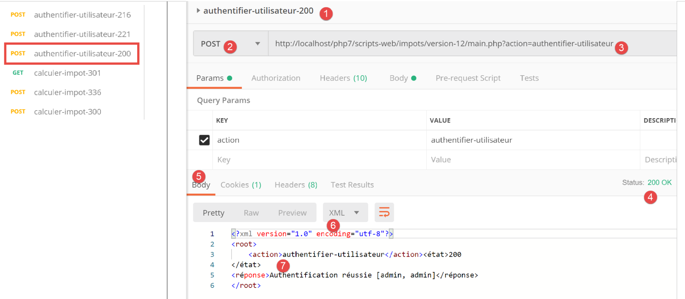
Oben:
- in [1-3] eine gültige Authentifizierungsanfrage;
- in [4-7] die Antwort XML vom Server;
23.12.5. Die Antwort [HtmlResponse]
Wenn der Sitzungstyp [html] ist, wird ein Objekt vom Typ [HtmlResponse] instanziiert, um die Antwort an den Client zu senden. Dieses sendet dem Client einen Datenstrom vom Typ HTML, der vom Statuscode abhängt, den der sekundäre Controller, der die Aktion verarbeitet hat, zurückgegeben hat. Diese Zuordnung [état=>vue] ist in der Konfigurationsdatei [config.json] wie folgt eingetragen:
"vues": {
"vue-authentification.php": [700, 221, 400],
"vue-calcul-impot.php": [200, 300, 341, 350, 800],
"vue-liste-simulations.php": [500, 600]
},
"vue-erreurs": "vue-erreurs.php"
Diese Konfiguration lässt sich wie folgt interpretieren: [‘nom de la vue’ => ‘états associés à cette vue’]
- Zeile 2: Wenn der sekundäre Controller einen Status aus der Tabelle [700, 221, 400] zurückgegeben hat, muss die Ansicht [vue-authentification.php] angezeigt werden;
- Zeile 3: Wenn der sekundäre Controller einen Status aus der Tabelle [200, 300, 341, 350, 800] zurückgegeben hat, muss die Ansicht [vue-calcul-impot.php] angezeigt werden;
- Zeile 4: Wenn der sekundäre Controller einen Status aus der Tabelle [500, 600] zurückgegeben hat, muss die Ansicht [vue-liste-simulations.php] angezeigt werden;
- Zeile 6: Wenn der sekundäre Controller einen Status zurückgegeben hat, der in keiner der vorherigen Tabellen enthalten ist, muss die Ansicht [vue-erreurs.php] angezeigt werden;
Die Sichten sind im Ordner „[Views]“ des Projekts zusammengefasst:

Der Code der Klasse [HtmlResponse] lautet wie folgt:
<?php
namespace Application;
// Symfony-Abhängigkeiten
use Symfony\Component\HttpFoundation\Request;
use Symfony\Component\HttpFoundation\Session\Session;
use Symfony\Component\Serializer\Encoder\JsonEncode;
use Symfony\Component\Serializer\Encoder\JsonEncoder;
use Symfony\Component\Serializer\Normalizer\ObjectNormalizer;
use Symfony\Component\Serializer\Serializer;
class HtmlResponse extends ParentResponse implements InterfaceResponse {
// Anfrage $request: Anfrage wird gerade bearbeitet
// Sitzung $session: Die Sitzung der Webanwendung
// Array $config: die Konfiguration der Anwendung
// int statusCode: Der Statuscode der Antwort lautet HTTP
// array $content: die Antwort des Servers
// array $headers: die an die Antwort anzuhängenden Header HTTP
// Logger $logger: der Logger zum Schreiben von Logs
public function send(
Request $request = NULL,
Session $session = NULL,
array $config,
int $statusCode,
array $content,
array $headers,
Logger $logger = NULL): void {
// Vorbereitung des Symfony-Serialisierers
$serializer = new Serializer(
[
// für die Serialisierung von Objekten
new ObjectNormalizer()],
[
// für die Serialisierung jSON des Antwortprotokolls
new JsonEncoder(new JsonEncode([JsonEncode::OPTIONS => JSON_UNESCAPED_UNICODE]))
]
);
// Die Antwort HTML hängt vom Statuscode ab, den der Controller zurückgibt
$état = $content["état"];
// Einem Status entspricht eine Ansicht – diese wird in der Anwendungskonfiguration gesucht
// die Liste der Ansichten
$vues = array_keys($config["vues"]);
$trouvé = false;
$i = 0;
// Die Liste der Ansichten wird durchlaufen
while (!$trouvé && $i < count($vues)) {
// Berichte, die der Ansicht Nr. i zugeordnet sind
$états = $config["vues"][$vues[$i]];
// Befindet sich der gesuchte Bericht unter den mit der Ansicht Nr. i verknüpften Berichten?
if (in_array($état, $états)) {
// Die angezeigte Ansicht ist Ansicht Nr. i
$vueRéponse = $vues[$i];
$trouvé = true;
}
// Nächste Ansicht
$i++;
}
// Gefunden?
if (!$trouvé) {
// Wenn für den aktuellen Zustand der Anwendung keine Ansicht existiert
// wird die Fehleransicht angezeigt
$vueRéponse = $config["vue-erreurs"];
}
// Die anzuzeigende Ansicht HTML wird in eine Zeichenkette umgewandelt
ob_start();
require __DIR__ . "/../Views/$vueRéponse";
$html = ob_get_clean();
// In den Kopfzeilen wird angegeben, dass HTML gesendet wird
$headers = array_merge($headers, ["content-type" => "text/html"]);
// Die übergeordnete Klasse übernimmt den eigentlichen Versand der Antwort
parent::sendResponse($statusCode, $html, $headers);
// Protokollierung der Antwort im Format jSON ohne den HTML
if ($logger !== NULL) {
// Protokollierung der Antwort des sekundären Controllers, der die Aktion bearbeitet hat, im Format jSON
$log = $serializer->serialize($content, 'json');
$logger->write("réponse=$log\n");
}
}
}
Kommentare
- Zeilen 32–41: Es wird ein Symfony-Serializer instanziiert. Dieser wird für das Log jSON der Antwort des Controllers benötigt, der die Aktion verarbeitet hat (Zeilen 72–82);
- Zeilen 42–57: In der Anwendungskonfiguration wird nach der Ansicht gesucht, die angezeigt werden soll. Diese hängt vom Statuscode ab, der vom Controller zurückgegeben wurde, der die Aktion verarbeitet hat. Dieser Code befindet sich in [$content[‘état’]] (Zeile 43);
- Zeilen 42–61: Es wird nach der Ansicht gesucht, die diesem Status entspricht;
- Zeilen 62–67: Wenn keine Ansicht gefunden wurde, liegt ein abnormaler Statuscode für die Anwendung HTML vor. Dieser Begriff der abnormalen Zustände wird weiter unten näher erläutert. In diesem Fall wird eine Fehleransicht angezeigt;
- Zeilen 68–70: Der Code PHP der ausgewählten Ansicht wird ausgewertet und das Ergebnis in die Variable [$html] (Zeile 71) gespeichert;
- Dieser Code bedarf einiger Erläuterungen. Nehmen wir an, die ausgewählte Ansicht sei [vue-authentification.php], die ein Web-Authentifizierungsformular darstellt:
- Zeile 69: Die Funktion [ob_start] startet das, was in der Dokumentation als Ausgabeverzögerung bezeichnet wird. Alles, was durch print-, require-Operationen geschrieben wird und normalerweise sofort an den Client gesendet wird, gelangt in einen Ausgabepuffer (ob = output buffer), ohne an den Client gesendet zu werden;
- Zeile 70: Die Ansicht [vue-authentification.php] wird geladen, bei der es sich um eine dynamische Ansicht HTML handelt, die Code PHP enthält. Dabei geschehen zwei Dinge:
- Der Code PHP aus der Ansicht [vue-authentification.php] wird geladen und interpretiert. Das Ergebnis ist eine Ansicht, die wir [vue-authentification.html] nennen werden und die nur noch den Code HTML oder sogar CSS sowie JavaScript enthält, aber keinen Code PHP mehr;
- Dieser Code HTML wird normalerweise an den Client gesendet. Dies gilt tatsächlich für jeden Text, auf den der Interpreter PHP stößt und der kein Code PHP ist. Aufgrund der Ausgabeverzögerung wird dieser Code HTML in den Ausgabepuffer geschrieben, ohne an den Kunden gesendet zu werden;
- Zeile 71: Die Funktion [ob_get_clean] führt zwei Schritte aus:
- Sie speichert den Inhalt des Ausgabepuffers, also die Seite [vue-authentification.html], die dort abgelegt wurde, in der Variablen [$html];
- sie leert den Ausgabepuffer. Für diesen verläuft alles so, als wäre nichts geschehen. Der Client hat zudem immer noch nichts erhalten;
- Zeile 70: Hier wird gerade die Klasse [HtmlResponse] ausgeführt, die sich im Ordner [Responses] befindet. Um die Ansicht zu finden, muss man also eine Ebene nach oben gehen zu [..] und dann in den Ordner [Views] wechseln. [__DIR__] ist der absolute Name des Ordners, in dem sich das aktuell ausgeführte Skript befindet, in unserem Beispiel der Ordner [C:/myprograms/laragon-lite/www/php7/scripts-web/impots/13/Responses];
- Zeile 73: Zu den als Parameter empfangenen Headern HTTP (Zeile 29) wird der Header hinzugefügt, der dem Client mitteilt, dass ihm HTML gesendet wird;
- Zeile 75: Die übergeordnete Klasse wird aufgefordert, die Antwort tatsächlich an den Client zu senden;
- Zeilen 77–81: Die Antwort [$content], die vom sekundären Controller bereitgestellt wurde, der die aktuelle Aktion verarbeitet hat, wird in jSON protokolliert;
23.12.6. Tests [Postman]
Um den Modus HTML der Sitzung wirklich zu testen, müssten wir alle Ansichten durchgehen. Das werden wir zu einem späteren Zeitpunkt tun. Wir führen nun den folgenden Test durch:
Sehen wir uns die Liste der Ansichten in der Konfigurationsdatei an:
"vues": {
"vue-authentification.php": [700, 221, 400],
"vue-calcul-impot.php": [200, 300, 341, 350, 800],
"vue-liste-simulations.php": [500, 600]
},
"vue-erreurs": "vue-erreurs.php"
Den Kontext, der einige der oben genannten Statuscodes erzeugt, können wir anhand der durchgeführten Tests [Postman] ermitteln:

Wir sehen, dass der Statuscode [700] zu einer erfolgreichen Aktion [init-session] ([2]) gehört. Oben haben wir eine Antwort jSON, diese kann jedoch auch vom Typ XML oder HTML sein. Der letztgenannte Fall wird nun getestet. Laut der Konfigurationsdatei bildet die Ansicht [vue-authentification.php] die Antwort HTML. Überprüfen wir das.
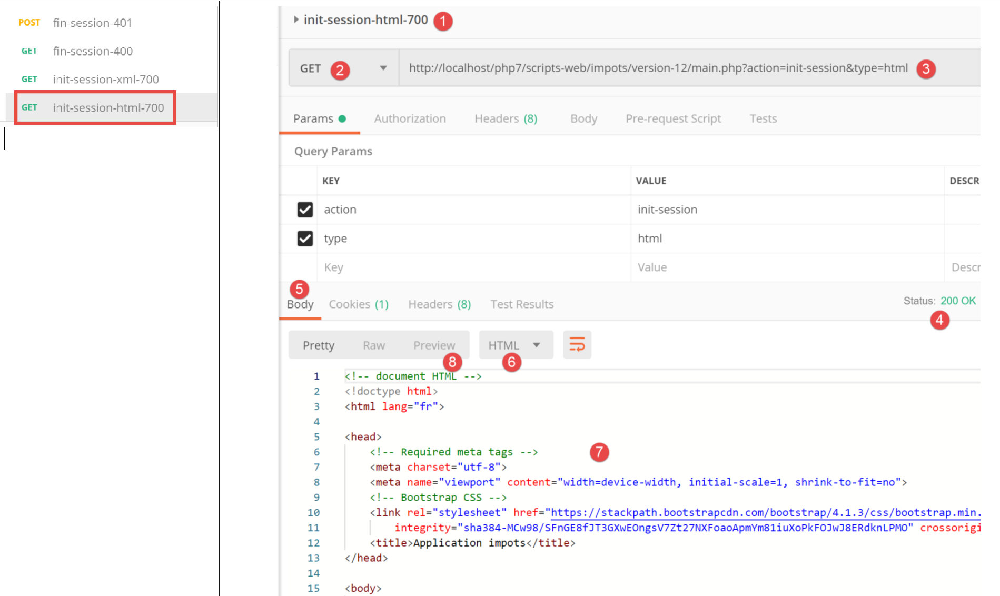
Oben:
- In [1-3] wird eine Sitzung HTML initialisiert. Wir erwarten also eine Antwort HTML;
- in [4-8] die Antwort HTML vom Server;
- Über die Registerkarte [8] kann eine Vorschau des empfangenen Codes HTML angezeigt werden;

- in [8-9] eine Vorschau der Ansicht HTML;
23.13. Die Webanwendung HTML
23.13.1. Übersicht über die Ansichten
Die Webanwendung HTML verwendet vier Ansichten:
Die Authentifizierungsansicht:

Die Ansicht zur Steuerberechnung:

Die Ansicht der Simulationsliste:

Ansicht der unerwarteten Fehler:

Wir werden diese Ansichten nacheinander beschreiben.
23.13.2. Die Authentifizierungsansicht
23.13.2.1. Vorstellung der Ansicht
Die Authentifizierungsansicht sieht wie folgt aus:

Die Ansicht besteht aus zwei Elementen, die wir als Fragmente bezeichnen:
- Das Fragment [1] wird durch ein Skript [v-bandeau.php] generiert;
- das Fragment [2] wird durch ein Skript [v-authentification.php] generiert;
Die Authentifizierungsansicht wird von der folgenden Seite [vue-authentification.php] generiert:
<?php
// Testdaten der Seite
// Die Daten der Seite werden in $page gekapselt
…
?>
<!doctype html>
<html lang="fr">
<head>
<!-- Erforderliche Meta-Tags -->
<meta charset="utf-8">
<meta name="viewport" content="width=device-width, initial-scale=1, shrink-to-fit=no">
<!-- Bootstrap CSS -->
<link rel="stylesheet" href="https://stackpath.bootstrapcdn.com/bootstrap/4.1.3/css/bootstrap.min.css" integrity="sha384-MCw98/SFnGE8fJT3GXwEOngsV7Zt27NXFoaoApmYm81iuXoPkFOJwJ8ERdknLPMO" crossorigin="anonymous">
<title>Application impots</title>
</head>
<body>
<div class="container">
<!-- Kopfzeile mit 1 Zeile und 12 Spalten -->
<?php require "v-bandeau.php"; ?>
<!-- Anmeldeformular mit 9 Spalten -->
<div class="row">
<div class="col-md-9">
<?php require "v-authentification.php" ?>
</div>
</div>
<?php
// Bei einem Fehler wird eine Fehlermeldung angezeigt
if ($modèle->error) {
print <<<EOT
<div class="row">
<div class="col-md-9">
<div class="alert alert-danger" role="alert">
Les erreurs suivantes se sont produites :
<ul>$modèle->erreurs</ul>
</div>
</div>
</div>
EOT;
}
?>
</div>
</body>
</html>
Anmerkungen
- Zeile 7: Ein Dokument HTML beginnt mit dieser Zeile;
- Zeilen 8–44: Die Seite HTML ist in den Tags <html> </html> eingeschlossen;
- Zeilen 9–16: Kopfbereich (head) des Dokuments HTML;
- Zeile 11: Das Tag <meta charset> gibt an, dass das Dokument in UTF-8 kodiert ist;
- Zeile 12: Das Tag <meta name=’viewport’> legt die anfängliche Darstellung der Ansicht fest: über die gesamte Breite des anzeigenden Bildschirms (width) in ihrer ursprünglichen Größe (initial-scale), ohne Skalierung zur Anpassung an eine kleinere Bildschirmgröße (shrink-to-fit);
- Zeile 14: Das Tag <link rel=’stylesheet’> verweist auf die Datei CSS, die das Erscheinungsbild der Ansicht steuert. Wir verwenden hier das Framework CSS Bootstrap 4.1.3 [https://getbootstrap.com/docs/4.0/getting-started/introduction/] ;
- Zeile 15: Der Tag <title> legt den Titel der Seite fest:
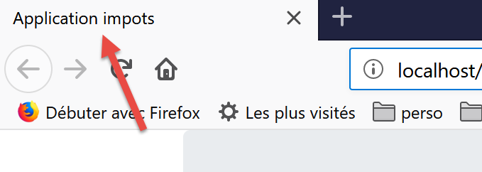
- Zeilen 17–43: Der Hauptteil der Webseite ist in die Tags <body></body> eingeschlossen;
- Zeilen 18–42: Das Tag <div> begrenzt einen Abschnitt der angezeigten Seite. Die in der Ansicht verwendeten Attribute [class] beziehen sich alle auf das Bootstrap-Framework CSS. Das Tag <div class=’container’> begrenzt einen Bootstrap-Container;
- Zeile 20: Das Skript [v-bandeau.php] wird eingebunden. Dieses Skript generiert das Banner [1] der Seite. Wir werden es in Kürze beschreiben;
- Zeilen 22–26: Das Tag <div class=’row’> begrenzt eine Bootstrap-Zeile. Diese Zeilen bestehen aus 12 Spalten;
- Zeile 23: Das Tag <div class=’col-md-9’> begrenzt einen Abschnitt mit 9 Spalten;
- Zeile 24: Hier wird das Skript [v-authentification.php] eingebunden, das das Anmeldeformular [2] auf der Seite anzeigt. Wir werden es in Kürze beschreiben;
- Zeile 27: Das Tag <?php fügt den Code PHP in die Seite HTML ein. Dieser Code wird vor der Anzeige der Seite HTML ausgeführt und kann diese verändern;
- Zeile 29: Alle dynamischen Daten der angezeigten Ansicht werden in ein Objekt vom Typ [stdClass] mit der Bezeichnung [$modèle] gekapselt. Dies ist eine willkürliche Entscheidung. Man hätte stattdessen auch ein assoziatives Array wählen können, um das gleiche Ergebnis zu erzielen;
- Zeile 29: Die Authentifizierung schlägt fehl, wenn der Benutzer falsche Anmeldedaten eingibt. In diesem Fall wird die Authentifizierungsansicht mit einer Fehlermeldung erneut angezeigt. Das Attribut [$modèle→error] gibt an, ob diese Fehlermeldung angezeigt werden soll;
- Zeilen 30–39: Diese Syntax schreibt den gesamten Text aus, der zwischen den Symbolen PHP <<<EOT (Zeile 30 – anstelle von EOT=End Of Text kann beliebiger Text eingegeben werden) und dem Symbol EOT in Zeile 39 (muss mit dem in Zeile 30 verwendeten Symbol identisch sein) steht, ausgegeben. Das Symbol muss in die erste Spalte von Zeile 39 geschrieben werden. Die Variablen PHP, die sich im Text zwischen den beiden Symbolen EOT befinden, werden interpretiert;
- Zeilen 33–36: grenzen einen Bereich mit rosa Hintergrund ab (class="alert alert-danger") (Zeile 33);

- Zeile 34: ein Text;
- Zeile 35: Das Tag HTML <ul> (ungeordnete Liste) zeigt eine Liste mit Aufzählungszeichen an. Jedes Element der Liste muss die Syntax <li>Element</li> haben;
Beachten Sie in diesem Code die folgenden dynamischen Elemente, die definiert werden müssen:
- [$modèle→error]: zur Anzeige einer Fehlermeldung;
- [$modèle→erreurs]: eine Liste (im Sinne von HTML) von Fehlermeldungen;
23.13.2.2. Das Fragment [v-bandeau.php]
Das Fragment [v-bandeau.php] zeigt die obere Leiste aller Ansichten der Webanwendung an:

Der Code des Fragments [v-bandeau.php] lautet wie folgt:
<!-- Bootstrap-Jumbotron -->
<div class="jumbotron">
<div class="row">
<div class="col-md-4">
<img src="<?= $logo ?>" alt="Cerisier en fleurs" />
</div>
<div class="col-md-8">
<h1>
Calculez votre impôt
</h1>
</div>
</div>
</div>
Anmerkungen
- Zeilen 2–13: Das Banner ist in einem Bootstrap-Abschnitt vom Typ „Jumbotron“ ([<div class="jumbotron">]) eingeschlossen. Diese Bootstrap-Klasse gestaltet den angezeigten Inhalt auf besondere Weise, um ihn hervorzuheben;
- Zeilen 3–12: eine Bootstrap-Zeile;
- Zeilen 4–6: Ein Bild [img] wird in den ersten vier Spalten der Zeile platziert;
- Zeile 5: Die Syntax [<?= $logo ?>] entspricht der Syntax [<?php print $logo ?>]. Anders ausgedrückt: Der Wert des Attributs [src] entspricht dem Wert der Variablen PHP [$logo];
- Zeilen 7–11: Die übrigen 8 Spalten der Zeile (insgesamt gibt es 12) dienen dazu, einen Text (Zeile 9) in großer Schrift (<h1>, Zeilen 8–10) einzufügen;
Dynamische Elemente:
- [$logo]: URL des im Banner angezeigten Bildes;
23.13.2.3. Das Fragment [v-authentification.php]
Das Fragment [v-authentification .php] zeigt das Anmeldeformular der Webanwendung an:

Der Code des Fragments [v-authentification.php] lautet wie folgt:
<!-- Formular HTML – die Werte werden mit der Aktion [authentifier-utilisateur] übermittelt -->
<form method="post" action="main.php?action=authentifier-utilisateur">
<!-- Titel -->
<div class="alert alert-primary" role="alert">
<h4>Veuillez vous authentifier</h4>
</div>
<!-- Bootstrap-Formular -->
<fieldset class="form-group">
<!-- 1. Zeile -->
<div class="form-group row">
<!-- Bezeichnung -->
<label for="user" class="col-md-3 col-form-label">Nom d'utilisateur</label>
<div class="col-md-4">
<!-- Texteingabefeld -->
<input type="text" class="form-control" id="user" name="user"
placeholder="Nom d'utilisateur" value="<?= $modèle->login ?>">
</div>
</div>
<!-- 2. Zeile -->
<div class="form-group row">
<!-- Bezeichnung -->
<label for="password" class="col-md-3 col-form-label">Mot de passe</label>
<!-- Texteingabefeld -->
<div class="col-md-4">
<input type="password" class="form-control" id="password" name="password"
placeholder="Mot de passe">
</div>
</div>
<!-- Schaltfläche vom Typ [submit] in einer dritten Zeile-->
<div class="form-group row">
<div class="col-md-2">
<button type="submit" class="btn btn-primary">Valider</button>
</div>
</div>
</fieldset>
</form>
Anmerkungen
- Zeilen 2–39: Das Tag <form> begrenzt ein Formular HTML. Dieses weist in der Regel folgende Merkmale auf:
- Es definiert Eingabefelder (Tags <input> in den Zeilen 17 und 27);
- es verfügt über eine Schaltfläche vom Typ [submit] (Zeile 34), die die eingegebenen Werte an das im Attribut [action] des Tags [form] angegebene URL sendet (Zeile 2) angegeben ist. Die Methode HTTP, die zum Aufrufen dieses URL verwendet wird, ist im Attribut [method] des Tags [form] (Zeile 2) angegeben;
- Wenn der Benutzer hier auf die Schaltfläche [Valider] (Zeile 34) klickt, sendet der Browser (Zeile 2) die im Formular eingegebenen Werte an das URL [main.php?action=authentifier-utilisateur] (Zeile 2);
- Die gebuchten Werte sind die vom Benutzer in die Eingabefelder der Zeilen 17 und 27 eingegebenen Werte. Sie werden in der Form [user=xx&password=yy] gebucht. Die Namen der Parameter [user, password] entsprechen den Attributen [name] der Eingabefelder in den Zeilen 17 und 27;
- Zeile 5–7: Ein Bootstrap-Abschnitt zur Anzeige eines Titels auf blauem Hintergrund:

- Zeilen 10–37: ein Bootstrap-Formular. Alle Elemente des Formulars werden dann auf eine bestimmte Weise gestaltet;
- Zeilen 12–20: Definieren die erste Zeile des Formulars:

- Zeile 14 definiert die Beschriftung [1] über drei Spalten. Das Attribut [for] des Tags [label] verknüpft die Beschriftung mit dem Attribut [id] des Eingabefelds in Zeile 17;
- Zeilen 15–19: ordnet das Eingabefeld in eine Gruppe von vier Spalten ein;
- Zeile 17: Das Tag HTML [input] beschreibt ein Eingabefeld. Es hat mehrere Parameter:
- [type=’text’]: Dies ist ein Texteingabefeld. Hier kann beliebiger Text eingegeben werden;
- [class=’form-control’]: Bootstrap-Stil für das Eingabefeld;
- [id=’user’]: ID des Eingabefelds. Diese ID wird in der Regel von CSS und dem JavaScript-Code verwendet;
- [name=’user’]: Name des Eingabefelds. Unter diesem Namen wird der vom Benutzer eingegebene Wert vom Browser gesendet ([user=xx]);
- [placeholder=’invite’]: Der Text, der im Eingabefeld angezeigt wird, wenn der Benutzer noch nichts eingegeben hat;

- [value=’valeur’]: Der Text „Wert“ wird im Eingabefeld angezeigt, sobald dieses angezeigt wird, also noch bevor der Benutzer etwas eingibt. Dieser Mechanismus wird im Fehlerfall verwendet, um die Eingabe anzuzeigen, die den Fehler verursacht hat. Hier entspricht dieser Wert dem Wert der Variablen PHP [$modèle→login];
- Zeilen 21–30: ein ähnlicher Code für die Passworteingabe;
- Zeile 27: [type=’password’] sorgt dafür, dass ein Texteingabefeld angezeigt wird (man kann beliebige Zeichen eingeben), die eingegebenen Zeichen jedoch ausgeblendet werden:

- Zeilen 32–36: eine dritte Zeile für die Schaltfläche [Valider];
- Zeile 34: Da diese Schaltfläche das Attribut [type=submit] besitzt, löst ein Klick darauf aus, dass der Browser die eingegebenen Werte an den Server sendet, wie zuvor erläutert. Das Attribut CSS [class="btn btn-primary"] zeigt eine blaue Schaltfläche an:

Es bleibt noch eine letzte Sache zu erklären. In Zeile 2 definiert das Attribut [action="main.php?action=authentifier-utilisateur"] ein unvollständiges URL (es beginnt nicht mit http://machine:port/chemin). In unserem Beispiel haben alle URL der Anwendung die Form [http://localhost/php7/scripts-web/impots/version-12/main.php?action=xx]. Die Ansicht der Authentifizierung wird mit verschiedenen URL angezeigt:
- [http://localhost/php7/scripts-web/impots/version-12/main.php?action=init-session&type=html];
- [http://localhost/php7/scripts-web/impots/version-12/main.php?action=authentifier-utilisateur]
Diese URL verweisen auf ein Dokument [main.php] im Pfad [http://localhost/php7/scripts-web/impots/version-12]. Dies gilt für alle URL dieser Anwendung. Dem Parameter [action="main.php?action=authentifier-utilisateur"] wird beim Senden der eingegebenen Werte dieser Pfad vorangestellt. Diese werden somit an die URL und [http://localhost/php7/scripts-web/impots/version-12/main.php?action=authentifier-utilisateur] gesendet.
23.13.2.4. Visuelle Tests
Die Ansichten können bereits lange vor ihrer Integration in die Anwendung getestet werden. Dabei geht es darum, ihr Erscheinungsbild zu prüfen. Wir werden alle Testansichten im Ordner [Tests] des Projekts zusammenfassen:

Um die Ansicht [vue-authentification.php] zu testen, müssen wir das Datenmodell erstellen, das sie anzeigen soll:
<?php
// Testdaten der Seite
//
// Das View-Modell wird berechnet
$modèle = getModelForThisView();
function getModelForThisView(): object {
// Die Seitendaten werden in $modèle gekapselt
$modèle = new \stdClass();
// Benutzer-ID
$modèle->login = "albert";
// Fehlerliste
$modèle->error = TRUE;
$erreurs = ["erreur1", "erreur2"];
// Es wird eine Fehlerliste HTML erstellt
$content = "";
foreach ($erreurs as $erreur) {
$content .= "<li>$erreur</li>";
}
$modèle->erreurs = $content;
// Bild des Banners
$modèle->logo = "http://localhost/php7/scripts-web/impots/version-12/Tests/logo.jpg";
// Die Vorlage wird gerendert
return $modèle;
}
?>
<!-- Dokument HTML -->
<!doctype html>
<html lang="fr">
<head>
<!-- Erforderliche Meta-Tags -->
…
</head>
<body>
….
</body>
</html>
Anmerkungen
- Zeilen 1–5: Die Authentifizierungsansicht enthält dynamische Teile, die vom Objekt [$modèle] gesteuert werden. Dieses Objekt wird als Modell der Ansicht bezeichnet. Gemäß einer der beiden Definitionen für das Kürzel MVC handelt es sich hierbei um das M von MVC;
- Zeile 5: Die Ansichtvorlage wird von der Funktion [getModelForThisView] berechnet;
- Zeile 9: Das Ansichtsmodell wird in einen Typ [stdClass] gekapselt;
- Zeilen 10–22: Hier werden Testwerte für die dynamischen Elemente der Authentifizierungsansicht definiert;
Die visuelle Überprüfung kann über NetBeans erfolgen:

Diese visuellen Tests werden so lange fortgesetzt, bis man mit dem Ergebnis zufrieden ist.
23.13.2.5. Berechnung des Ansichtsmodells
Sobald das Erscheinungsbild der Ansicht festgelegt ist, kann das Modell der Ansicht unter realen Bedingungen berechnet werden. Erinnern wir uns an die Statuscodes, die zu dieser Ansicht führen. Diese finden sich in der Konfigurationsdatei:
"vues": {
"vue-authentification.php": [700, 221, 400],
"vue-calcul-impot.php": [200, 300, 341, 350, 800],
"vue-liste-simulations.php": [500, 600]
},
"vue-erreurs": "vue-erreurs.php"
Es sind also die Statuscodes [700, 221, 400], die die Authentifizierungsansicht anzeigen lassen. Um die Bedeutung dieser Codes zu ermitteln, kann man sich auf die Tests [Postman] stützen, die an der Anwendung jSON durchgeführt wurden:
- [init-session-json-700]: 700 ist der Statuscode nach einer erfolgreichen Aktion [init-session]: Es wird dann das leere Authentifizierungsformular angezeigt;
- [authentifier-utilisateur-221]: 221 ist der Statuscode nach einer fehlgeschlagenen Aktion [authentifier-utilisateur] (Anmeldedaten nicht erkannt): Es wird dann das Anmeldeformular angezeigt, damit die Angaben korrigiert werden können;
- [fin-session-400]: 400 ist der Statuscode nach einer erfolgreichen Aktion [fin-session]: In diesem Fall wird das leere Anmeldeformular angezeigt;
Da wir nun wissen, wann das Anmeldeformular angezeigt werden muss, können wir dessen Vorlage in [vue-authentification.php] berechnen:

Der Code zur Berechnung der Vorlage der Ansicht [vue-authentification.php] lautet wie folgt:
<?php
// Die folgenden Variablen werden übernommen
// Anfrage $request: die aktuelle Anfrage
// Sitzung $session: die Anwendungssitzung
// Array $config: die Konfiguration der Anwendung
// Array $content: die Antwort des Controllers
//
// Symfony-Abhängigkeiten
use Symfony\Component\HttpFoundation\Request;
use Symfony\Component\HttpFoundation\Session\Session;
// Das View-Modell wird berechnet
$modèle = getModelForThisView($request, $session, $config, $content);
function getModelForThisView(Request $request, Session $session, array $config, array $content): object {
// Die Daten der Seite werden in $modèle gekapselt
$modèle = new stdClass();
// Anwendungsstatus
$état = $content["état"];
// Das Modell hängt vom Status ab
switch ($état) {
case 700:
case 400:
// Fall der Anzeige des leeren Formulars
$modèle->login = "";
// Es sind keine Fehler anzuzeigen
$modèle->error = FALSE;
break;
case 221:
// Fehlerhafte Authentifizierung
// Der ursprünglich eingegebene Benutzer wird erneut angezeigt
$modèle->login = $request->request->get("user");
// Es ist ein Fehler anzuzeigen
$modèle->error = TRUE;
// Liste der Fehlermeldungen HTML – hier nur eine
$modèle->erreurs = "<li>Echec de l'authentification</li>";
}
// Ergebnis
return $modèle;
}
?>
<!-- Dokument HTML -->
<!doctype html>
<html lang="fr">
<head>
…
</head>
<body>
…
</body>
</html>
Kommentare
- Zeilen 3–6: Hier werden die von der Klasse [HtmlResponse] geerbten Variablen aufgerufen, die über ein [require] die Ansicht [vue-authentification.php] anzeigen lassen;
- Zeilen 9–10: Die im Code der Ansicht verwendeten Symfony-Klassen;
- Zeilen 15–40: Die Funktion [getModelForThisView] ist für die Berechnung des View-Modells zuständig;
- Zeile 19: Der vom Controller, der die aktuelle Aktion verarbeitet hat, zurückgegebene Statuscode wird abgerufen;
- Zeilen 21–37: Das Modell hängt von diesem Statuscode ab;
- Zeilen 22–28: Fall, in dem ein leeres Anmeldeformular angezeigt werden muss;
- Zeilen 29–37: Fall einer fehlgeschlagenen Authentifizierung: Die vom Benutzer eingegebene Kennung wird angezeigt und eine Fehlermeldung ausgegeben. Der Benutzer kann dann über die Tastatur einen erneuten Authentifizierungsversuch starten;
Für das Banner [v-bandeau.php] wurde ein spezielles Template erstellt:
<?php
// Logo
$scheme = $request->server->get('REQUEST_SCHEME'); // http
$host = $request->server->get('SERVER_NAME'); // localhost
$port = $request->server->get('SERVER_PORT'); // 80
$uri = $request->server->get('REQUEST_URI'); // /php7/scripts-web/impots/version-12/main.php?action=xxx
$champs = [];
preg_match("/(.+)\/.+?$/", $uri, $champs);
$root = $champs[1]; // /php7/scripts-web/impots/version-12
$modèle->logo = "$scheme://$host:$port$root/Views/logo.jpg"; // http://localhost:80/php7/scripts-web/impots/version-12/Views/logo.jpg
?>
<!-- Bootstrap Jumbotron -->
<div class="jumbotron">
<div class="row">
<div class="col-md-4">
<img src="<?= $modèle->logo ?>" alt="Cerisier en fleurs" />
</div>
<div class="col-md-8">
<h1>
Calculez votre impôt
</h1>
</div>
</div>
</div>
Anmerkungen
- In Zeile 16 wird die Variable [$modèle→logo] verwendet, die dem URL des Banner-Logos entspricht. Anstatt diese Variable viermal für die vier Ansichten der Anwendung zu berechnen, wird diese Berechnung in das Fragment [v-bandeau.php] ausgelagert;
- Die Zeilen 1–11 zeigen, wie die Variablen URL und [http://localhost:80/php7/scripts-web/impots/version-12/Views/logo.jpg] anhand der in der Serverumgebung gefundenen Informationen aus [$request→server] erstellt werden;
23.13.2.6. Tests [Postman]
Wir haben bereits Anfragen erstellt, die die Codes [700, 221, 400] erzeugen, welche die Authentifizierungsansicht anzeigen. Hier noch einmal zur Erinnerung:
- [init-session-html-700]: 700 ist der Statuscode nach einer erfolgreichen Aktion [init-session]: Es wird dann das leere Authentifizierungsformular angezeigt;
- [authentifier-utilisateur-221]: 221 ist der Statuscode nach einer fehlgeschlagenen Aktion [authentifier-utilisateur] (Anmeldedaten nicht erkannt): In diesem Fall wird das Anmeldeformular zur Korrektur angezeigt;
- [fin-session-400]: 400 ist der Statuscode nach einer erfolgreichen Aktion [fin-session]: Es wird dann das leere Anmeldeformular angezeigt;
Man muss sie lediglich erneut verwenden und prüfen, ob sie die Anmeldeseite korrekt anzeigen. Hier werden nur zwei Tests gezeigt:
- [init-session-html-700]: Beginn einer Sitzung HTML;

- [authentifier-utilisateur-221]: Authentifizierung des Benutzers [x, x];

Oben:
- Die Anfrage hatte die Zeichenfolge [user=x&password=x] gesendet;
- bei [4] wird eine Fehlermeldung angezeigt;
- in [3] wurde der falsche Benutzer erneut angezeigt;
23.13.2.7. Conclusion
Wir konnten die Ansicht [vue-authentification.php] testen, ohne die anderen Ansichten geschrieben zu haben. Dies war möglich, weil:
- alle Controller geschrieben sind;
- [Postman] ermöglicht es uns, Anfragen an den Server zu senden, ohne dass die Ansichten benötigt werden. Beim Schreiben der Controller muss man sich bewusst sein, dass dies jeder tun kann. Man muss daher darauf vorbereitet sein, Anfragen zu bearbeiten, die keine Ansicht zulassen würde. Diese werden in [Postman] manuell erstellt. Man darf niemals von vornherein davon ausgehen, dass „diese Anfrage unmöglich ist“. Man muss dies überprüfen;
23.13.3. Die Ansicht zur Steuerberechnung
23.13.3.1. Vorstellung der Ansicht
Die Ansicht zur Steuerberechnung sieht wie folgt aus:

Die Ansicht besteht aus drei Teilen:
- 1: Die obere Leiste wird durch das bereits vorgestellte Fragment [v-bandeau.php] generiert;
- 2: Das Formular zur Steuerberechnung, das durch das Fragment [v-calcul-impot.php] generiert wird;
- 3: Ein Menü mit zwei Links, das durch das Fragment [v-menu.php] generiert wird;
Die Ansicht zur Steuerberechnung wird durch das folgende Skript [vue-calcul-impot.php] generiert:

<?php
// Die folgenden Variablen werden vererbt
// Anfrage $request: die aktuelle Anfrage
// Sitzung $session: die Anwendungssitzung
// array $config: Die Konfiguration der Anwendung
// array $content: Die Antwort des Controllers, der die Aktion verarbeitet hat
//
// Symfony-Abhängigkeiten
use Symfony\Component\HttpFoundation\Request;
use Symfony\Component\HttpFoundation\Session\Session;
// Das View-Modell wird berechnet
$modèle = getModelForThisView($request, $session, $config, $content);
function getModelForThisView(Request $request, Session $session, array $config, array $content): object {
// Die Daten der Seite werden in $modèle gekapselt
$modèle = new \stdClass();
…
// das Modell wird zurückgegeben
return $modèle;
}
?>
<!-- Dokument HTML -->
<!doctype html>
<html lang="fr">
<head>
<!-- Erforderliche Meta-Tags -->
<meta charset="utf-8">
<meta name="viewport" content="width=device-width, initial-scale=1, shrink-to-fit=no">
<!-- Bootstrap CSS -->
<link rel="stylesheet" href="https://stackpath.bootstrapcdn.com/bootstrap/4.1.3/css/bootstrap.min.css" integrity="sha384-MCw98/SFnGE8fJT3GXwEOngsV7Zt27NXFoaoApmYm81iuXoPkFOJwJ8ERdknLPMO" crossorigin="anonymous">
<title>Application impots</title>
</head>
<body>
<div class="container">
<!-- Kopfzeile -->
<?php require "v-bandeau.php"; ?>
<!-- Zweispaltiges Layout -->
<div class="row">
<!-- das Menü -->
<div class="col-md-3">
<?php require "v-menu.php" ?>
</div>
<!-- das Berechnungsformular -->
<div class="col-md-9">
<?php require "v-calcul-impot.php" ?>
</div>
</div>
<!-- Erfolgsfall -->
<?php
if ($modèle->success) {
// Es wird eine Erfolgsmeldung angezeigt
print <<<EOT1
<div class="row">
<div class="col-md-3">
</div>
<div class="col-md-9">
<div class="alert alert-success" role="alert">
$modèle->impôt</br>
$modèle->décôte</br>\n
$modèle->réduction</br>\n
$modèle->surcôte</br>\n
$modèle->taux</br>\n
</div>
</div>
</div>
EOT1;
}
?>
<?php
if ($modèle->error) {
// 9-spaltige Fehlerliste
print <<<EOT2
<div class="row">
<div class="col-md-3">
</div>
<div class="col-md-9">
<div class="alert alert-danger" role="alert">
L'erreur suivante s'est produite :
<ul>$modèle->erreurs</ul>
</div>
</div>
</div>
EOT2;
}
?>
</div>
</body>
</html>
Anmerkungen
- Wir kommentieren nur Neuerungen, auf die wir bisher noch nicht gestoßen sind;
- Zeile 37: Einbindung der oberen Kopfzeile der Ansicht in die erste Bootstrap-Zeile der Ansicht;
- Zeilen 41–43: Einbindung des Menüs, das drei Spalten der zweiten Bootstrap-Zeile der Ansicht einnehmen wird;
- Zeilen 45–47: Einbindung des Formulars zur Steuerberechnung, das neun Spalten der zweiten Bootstrap-Zeile der Ansicht einnehmen wird;
- Zeilen 51–69: Wenn die Steuerberechnung erfolgreich ist ([$modèle→success=TRUE]), wird das Ergebnis der Steuerberechnung in einem grünen Rahmen angezeigt (Zeilen 59–65). Dieser Rahmen befindet sich in der dritten Bootstrap-Zeile der Ansicht (Zeile 54) und nimmt neun Spalten (Zeile 58) rechts neben drei leeren Spalten (Zeilen 55–57) ein. Dieser Rahmen befindet sich somit unmittelbar unterhalb des Formulars zur Steuerberechnung;
- Zeilen 71–87: Wenn die Steuerberechnung mit dem Code [$modèle→error=TRUE] fehlschlägt, wird eine Fehlermeldung in einem rosa Rahmen angezeigt (Zeilen 80–83). Dieser Rahmen befindet sich in der dritten Bootstrap-Zeile der Ansicht (Zeile 75) und nimmt neun Spalten (Zeile 79) rechts neben drei leeren Spalten (Zeilen 76–78) ein. Dieser Rahmen befindet sich somit unmittelbar unterhalb des Formulars zur Steuerberechnung;
23.13.3.2. Das Fragment [v-calcul-impot.php]
Das Fragment [v-calcul-impot.php] zeigt das Anmeldeformular der Webanwendung an:

Der Code des Fragments [v-calcul-impot.php] lautet wie folgt:
<!-- Formular HTML gesendet -->
<form method="post" action="main.php?action=calculer-impot">
<!-- Meldung in 12 Spalten auf blauem Hintergrund -->
<div class="col-md-12">
<div class="alert alert-primary" role="alert">
<h4>Remplissez le formulaire ci-dessous puis validez-le</h4>
</div>
</div>
<!-- Formularelemente -->
<fieldset class="form-group">
<!-- erste Zeile mit 9 Spalten -->
<div class="row">
<!-- Beschriftung über 4 Spalten -->
<legend class="col-form-label col-md-4 pt-0">Etes-vous marié(e) ou pacsé(e)?</legend>
<!-- Optionsfelder in 5 Spalten-->
<div class="col-md-5">
<div class="form-check">
<input class="form-check-input" type="radio" name="marié" id="gridRadios1" value="oui" <?= $modèle->checkedOui ?>>
<label class="form-check-label" for="gridRadios1">
Oui
</label>
</div>
<div class="form-check">
<input class="form-check-input" type="radio" name="marié" id="gridRadios2" value="non" <?= $modèle->checkedNon ?>>
<label class="form-check-label" for="gridRadios2">
Non
</label>
</div>
</div>
</div>
<!-- zweite Zeile über 9 Spalten -->
<div class="form-group row">
<!-- Beschriftung über 4 Spalten -->
<label for="enfants" class="col-md-4 col-form-label">Nombre d'enfants à charge</label>
<!-- Eingabefeld für die Anzahl der Kinder über 5 Spalten -->
<div class="col-md-5">
<input type="number" min="0" step="1" class="form-control" id="enfants" name="enfants" placeholder="Nombre d'enfants à charge" value="<?= $modèle->enfants ?>">
</div>
</div>
<!-- dritte Zeile mit 9 Spalten -->
<div class="form-group row">
<!-- Beschriftung über 4 Spalten -->
<label for="salaire" class="col-md-4 col-form-label">Salaire annuel</label>
<!-- Eingabefeld für den Lohn über 5 Spalten -->
<div class="col-md-5">
<input type="number" min="0" step="1" class="form-control" id="salaire" name="salaire" placeholder="Salaire annuel" aria-describedby="salaireHelp" value="<?= $modèle->salaire ?>">
<small id="salaireHelp" class="form-text text-muted">Arrondissez à l'euro inférieur</small>
</div>
</div>
<!-- vierte Zeile, Schaltfläche [submit] über 5 Spalten -->
<div class="form-group row">
<div class="col-md-5">
<button type="submit" class="btn btn-primary">Valider</button>
</div>
</div>
</fieldset>
</form>
Anmerkungen
- Zeile 2: Das Formular HTML wird (Attribut [method]) an URL [main.php?action=calculer-impot] (Attribut [action]). Die übermittelten Werte entsprechen den Werten der Eingabefelder:
- der Wert des markierten Optionsfelds in der Form:
- [marié=oui], wenn das Optionsfeld [Oui] markiert ist (Zeilen 16–22). [marié] ist der Wert des Attributs [name] in Zeile 18, [oui] der Wert des Attributs [value] in Zeile 18;
- [marié=non], wenn das Optionsfeld [Non] aktiviert ist (Zeilen 23–28). [marié] ist der Wert des Attributs [name] in Zeile 24, [non] der Wert des Attributs [value] in Zeile 24;
- der Wert des numerischen Eingabefelds in Zeile 37 in der Form [enfants=xx], wobei [enfants] der Wert des Attributs [name] in Zeile 37 ist, und [xx] der vom Benutzer über die Tastatur eingegebene Wert;
- der Wert des numerischen Eingabefelds in Zeile 46 in der Form [salaire=xx], wobei [salaire] der Wert des Attributs [name] in Zeile 46 ist, und [xx] der vom Benutzer über die Tastatur eingegebene Wert;
- der Wert des markierten Optionsfelds in der Form:
Schließlich hat der übermittelte Wert die Form [marié=xx&enfants=yy&salaire=zz].
- Die eingegebenen Werte werden übermittelt, wenn der Benutzer auf die Schaltfläche vom Typ [submit] in Zeile 53 klickt;
- Zeilen 16–30: Die beiden Optionsfelder:
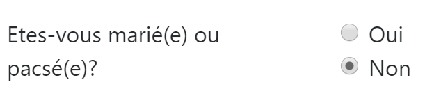
Die beiden Optionsfelder gehören zur selben Gruppe von Optionsfeldern, da sie dasselbe Attribut [name] haben (Zeilen 18, 24). Der Browser stellt sicher, dass innerhalb einer Gruppe von Optionsfeldern zu einem bestimmten Zeitpunkt nur eines ausgewählt ist. Ein Klick auf eines deaktiviert also das zuvor ausgewählte;
- es handelt sich aufgrund des Attributs [type="radio"] (Zeilen 18, 24) um Optionsfelder;
- Bei der Anzeige des Formulars (vor der Eingabe) muss eines der Optionsfelder markiert sein: Dazu reicht es aus, das Attribut [checked=’checked’] zum entsprechenden <input type="radio">-Tag hinzuzufügen. Dies wird mit dynamischen Variablen erreicht:
- [<?= $modèle->checkedOui ?>] in Zeile 18;
- [<?= $modèle->checkedNon ?>] in Zeile 24;
Diese Variablen werden Teil der View-Vorlage sein.
- Zeile 37: ein numerisches Eingabefeld [type="number"] mit einem Mindestwert von 0 [min="0"]. In aktuellen Browsern bedeutet dies, dass der Benutzer nur eine Zahl >= 0 eingeben kann. In denselben aktuellen Browsern kann die Eingabe über einen Schieberegler erfolgen, der nach oben oder unten geklickt werden kann. Das Attribut [step="1"] in Zeile 37 gibt an, dass der Schieberegler in Schritten von 1 Einheit arbeitet. Dies hat zur Folge, dass der Schieberegler nur ganzzahlige Werte von 0 bis n mit einer Schrittweite von 1 annimmt. Für die manuelle Eingabe bedeutet dies, dass Zahlen mit Dezimalstellen nicht akzeptiert werden;

- Zeile 37: Bei bestimmten Anzeigen soll das Eingabefeld für Kinder mit der zuletzt in diesem Feld vorgenommenen Eingabe vorausgefüllt werden. Dazu wird das Attribut [value] verwendet, das den im Eingabefeld anzuzeigenden Wert festlegt. Dieser Wert ist dynamisch und wird durch die Variable [$modèle→enfants] generiert;
- Zeile 46: Für die Eingabe des Gehalts gelten dieselben Erläuterungen wie für die Eingabe der Kinder;
- Zeile 53: Die Schaltfläche vom Typ [submit] löst die Übertragung der eingegebenen Werte an die Felder URL und [main.php?action=calculer-impot] aus;

23.13.3.3. Das Fragment [v-menu.php]
Dieses Fragment zeigt links neben dem Formular zur Steuerberechnung ein Menü an:

Der Code dieses Fragments lautet wie folgt:
<!-- Bootstrap-Menü -->
<nav class="nav flex-column">
<?php
// Anzeige einer Liste von Links HTML
foreach($modèle->optionsMenu as $texte=>$url){
print <<<EOT3
<a class="nav-link" href="$url">$texte</a>
EOT3;
}
?>
</nav>
Anmerkungen
- Zeilen 2–11: Das Tag HTML [nav] umschließt einen Dokumentabschnitt HTML, der Navigationslinks zu anderen Dokumenten enthält;
- Zeile 7: Das Tag HTML [a] leitet einen Navigationslink ein:
- [$url]: ist die URL, zu der man gelangt, wenn man auf den Link [$texte] klickt. Der Browser führt dann eine Operation [GET $url] aus. Ist [$url] ein relativer URL, so wird ihm die Wurzel des URL vorangestellt, der derzeit in der Browser-Adresse angezeigt wird. Um also den Link [1] zu erhalten, während der aktuelle URL des Browsers vom Typ [http://chemin/main.php?paramètres] ist, wird folgender Link erstellt:
- Zeile 5: Die Vorlage [$modèle→optionsMenu] des Fragments wird ein Array der folgenden Form sein:
[‘ Liste des simulations’=>’main.php?action=liste-simulations’,
‘ Fin de session’=>’main.php?action=fin-session’]
- Zeilen 2, 7: Die Klassen CSS und [nav, flex-column, nav-link] sind Bootstrap-Klassen, die das Erscheinungsbild des Menüs bestimmen;
23.13.3.4. Visuelle Überprüfung
Wir fassen diese verschiedenen Elemente im Ordner [Tests] zusammen und erstellen eine Testvorlage für die Ansicht [vue-calcul-impot.php]:
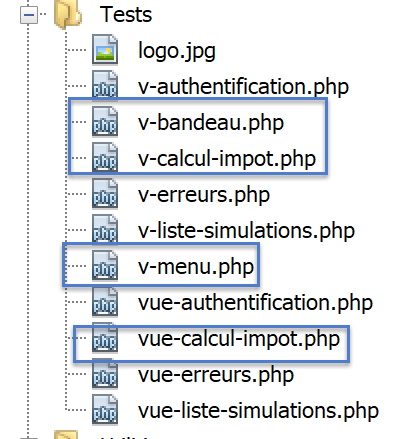
Das Datenmodell der Ansicht [vue-calcul-impot] sieht wie folgt aus:
<?php
// Testdaten der Seite
//
// Berechnung der Ansichtvorlage
$modèle = getModelForThisView();
function getModelForThisView(): object {
// Die Seitendaten werden in $modèle gekapselt
$modèle = new \stdClass();
// Formular
$modèle->checkedOui = "";
$modèle->checkedNon = 'checked="checked"';
$modèle->enfants = 2;
$modèle->salaire = 300000;
// Erfolgsmeldung
$modèle->success = TRUE;
$modèle->impôt = "Montant de l'impôt : 1000 euros";
$modèle->décôte = "Décôte : 15 euros";
$modèle->réduction = "Réduction : 20 euros";
$modèle->surcôte = "Surcôte : 0 euros";
$modèle->taux = "Taux d'imposition : 14 %";
// Fehlermeldung
$modèle->error = TRUE;
$erreurs = ["erreur1", "erreur2"];
// Es wird eine Liste HTML der Fehler erstellt
$content = "";
foreach ($erreurs as $erreur) {
$content .= "<li>$erreur</li>";
}
$modèle->erreurs = $content;
// Menü
$modèle->optionsMenu = [
'Liste der Simulationen' => 'main.php?action=liste-simulationen',
'„Sitzung beenden“ => 'main.php?action=sitzung-beenden'];
// Bannerbild
$modèle->logo = "http://localhost/php7/scripts-web/impots/version-12/Tests/logo.jpg";
// Vorlage anzeigen
return $modèle;
}
?>
<!-- Dokument HTML -->
<!doctype html>
<html lang="fr">
<head>
…
</head>
<body>
…
</body>
</html>
Kommentare
- Zeilen 7–39: Wir initialisieren alle dynamischen Teile der Ansicht [vue-calcul-impot.php] sowie der Fragmente [v-calcul-impot.php] und [v-menu.php];
Die Ansicht [vue-calcul-impot.php] wird getestet:
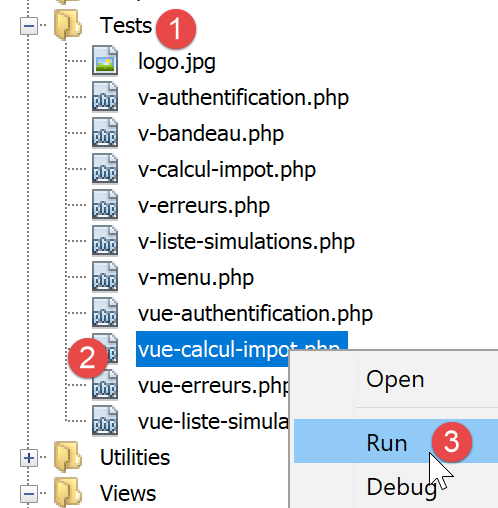
Man erhält folgendes Ergebnis:

Wir arbeiten an dieser Ansicht, bis uns das visuelle Ergebnis zufriedenstellt. Anschließend können wir mit der Integration der Ansicht in die gerade in Entwicklung befindliche Webanwendung fortfahren.
23.13.3.5. Berechnung des Ansichtsmodells

Sobald das visuelle Erscheinungsbild der Ansicht festgelegt ist, kann man mit der Berechnung des Ansichtsmodells unter realen Bedingungen fortfahren. Erinnern wir uns an die Zustandscodes, die zu dieser Ansicht führen. Diese finden sich in der Konfigurationsdatei:
"vues": {
"vue-authentification.php": [700, 221, 400],
"vue-calcul-impot.php": [200, 300, 341, 350, 800],
"vue-liste-simulations.php": [500, 600]
},
"vue-erreurs": "vue-erreurs.php"
Es sind also die Statuscodes [200, 300, 341, 350, 800], die die Authentifizierungsansicht anzeigen lassen. Um die Bedeutung dieser Codes zu ermitteln, kann man sich an den Tests [Postman] orientieren, die an der Anwendung jSON durchgeführt wurden:
- [authentifier-utilisateur-200]: 200 ist der Statuscode nach einer erfolgreichen Aktion [authentifier-itilisateur]: Es wird dann das leere Formular zur Steuerberechnung angezeigt;
- [calculer-impot-300]: 300 ist der Statuscode nach erfolgreicher Ausführung der Aktion [calculer-impot]. Es wird dann das Berechnungsformular mit den dort eingegebenen Daten und dem Steuerbetrag angezeigt. Der Benutzer kann daraufhin eine weitere Berechnung durchführen;
- [fin-session-400]: 400 ist der Statuscode nach erfolgreicher Ausführung der Aktion [fin-session]: Es wird dann das leere Authentifizierungsformular angezeigt;
- Der Statuscode [341] wird bei einer gültigen Steuerberechnung ausgegeben, doch führt das Fehlen einer Verbindung zu SGBD zu einem Fehler;
- Der Statuscode [350] wird bei einer gültigen Steuerberechnung ausgegeben, doch die fehlende Verbindung zum Server [Redis] führt zu einem Fehler;
- Der Statuscode [800] wird zu einem späteren Zeitpunkt vorgestellt. Wir sind ihm bisher noch nicht begegnet;
- Hier wurde davon ausgegangen, dass der Benutzer einen aktuellen Browser verwendet. Daher ist es bei dem untersuchten Formular nicht möglich, negative Zahlen, nicht-numerische Zeichenfolgen oder Dezimalzahlen in die Eingabefelder [enfants, salaire] einzugeben. Bei älteren Browsern wäre dies möglich. Wir behandeln diese Fehler als unerwartete Fehler und zeigen dann die Ansicht [vue-erreurs] an;
Da wir nun wissen, wann das Formular zur Steuerberechnung angezeigt werden muss, können wir dessen Vorlage in [vue-calcul-impot.php] berechnen:
<?php
// Die folgenden Variablen werden übernommen
// Anfrage $request: die aktuelle Anfrage
// Sitzung $session: die Anwendungssitzung
// Array $config: die Konfiguration der Anwendung
// Array $content: die Antwort des Controllers, der die Aktion verarbeitet hat
//
// Symfony-Abhängigkeiten
use Symfony\Component\HttpFoundation\Request;
use Symfony\Component\HttpFoundation\Session\Session;
// Das View-Modell wird berechnet
$modèle = getModelForThisView($request, $session, $config, $content);
function getModelForThisView(Request $request, Session $session, array $config, array $content): object {
// Die Daten der Seite werden in $modèle gekapselt
$modèle = new \stdClass();
// Anwendungsstatus
$état = $content["état"];
// Das Modell hängt vom Status ab
switch ($état) {
case 200 :
case 800:
// Anfängliche Anzeige eines leeren Formulars
$modèle->success = FALSE; $modèle->errror = FALSE;
$modèle->checkedNon = 'checked="checked"';
$modèle->checkedOui = "";
$modèle->enfants = "";
$modèle->salaire = "";
break;
case 300:
// Berechnung erfolgreich – Anzeige des Ergebnisses
$modèle->success = TRUE;
$modèle->error = FALSE;
$modèle->impôt = "Montant de l'impôt : {$content["réponse"]["impôt"]} euros";
$modèle->décôte = "Décôte : {$content["réponse"]["décôte"]} euros";
$modèle->réduction = "Réduction : {$content["réponse"]["réduction"]} euros";
$modèle->surcôte = "Surcôte : {$content["réponse"]["surcôte"]} euros";
$modèle->taux = "Taux d'imposition : " . ($content["réponse"]["taux"] * 100) . " %";
// Formular mit den eingegebenen Werten wiederhergestellt
$modèle->checkedOui = $request->request->get("marié") === "oui" ? 'checked="checked"' : "";
$modèle->checkedNon = $request->request->get("marié") === "oui" ? "" : 'checked="checked"';
$modèle->enfants = $request->request->get("enfants");
$modèle->salaire = $request->request->get("salaire");
break;
case 341:
// Datenbank HS
case 350:
// Redis-Server HS
// Formular mit den eingegebenen Werten wiederhergestellt
$modèle->checkedOui = $request->request->get("marié") === "oui" ? 'checked="checked"' : "";
$modèle->checkedNon = $request->request->get("marié") === "oui" ? "" : 'checked="checked"';
$modèle->enfants = $request->request->get("enfants");
$modèle->salaire = $request->request->get("salaire");
// Fehler
$modèle->success = FALSE;
$modèle->error = TRUE;
$modèle->erreurs = "<li>{$content["réponse"]}</li>";
break;
}
//Menü
$modèle->optionsMenu = [
"Liste des simulations" => "main.php?action=lister-simulations",
"Fin de session" => "main.php?action=fin-session"];
// Die Vorlage wird zurückgegeben
return $modèle;
}
?>
<!-- Dokument HTML -->
<!doctype html>
<html lang="fr">
<head>
…
<title>Application impots</title>
</head>
<body>
…
</body>
</html>
Kommentare
- Zeilen 22–30: Anzeige eines leeren Formulars;
- Zeilen 31–45: Fall einer erfolgreichen Steuerberechnung. Die eingegebenen Werte sowie der Steuerbetrag werden erneut angezeigt;
- Zeilen 46–59: Fall einer fehlgeschlagenen Steuerberechnung aufgrund der Nichtverfügbarkeit eines der Server [Redis] oder [MySQL];
- Zeilen 62–64: Berechnung der beiden Menüoptionen;
23.13.3.6. Tests [Postman]
Der Test [calculer-impot-300] liefert den Statuscode 300. Dieser entspricht einer erfolgreichen Steuerberechnung:

- in [3] die Werte, die zum Ergebnis [2] geführt haben;
Versuchen wir einen Fehlerfall: Der Fehler [350] aufgrund der Nichtverfügbarkeit des Servers [Redis]:

23.13.4. Die Ansicht der Simulationsliste
23.13.4.1. Übersicht über die Ansicht
Die Ansicht, die die Liste der Simulationen anzeigt, sieht wie folgt aus:

Die vom Skript [vue-liste-simulations] generierte Ansicht besteht aus drei Teilen:
- 1: Der obere Bereich wird durch das bereits vorgestellte Fragment [v-bandeau.php] generiert;
- 2: Die Tabelle mit den Simulationen, die vom Fragment [v-liste-simulations.php] generiert wird;
- 3: ein Menü mit zwei Links, das vom Fragment [v-menu.php] generiert wird;
Die Ansicht der Simulationen wird durch das folgende Skript [vue-liste-simulations.php] generiert:

<?php
// Berechnung der Ansichtvorlage
$modèle = getModelForThisView();
function getModelForThisView(Request $request, Session $session, array $config, array $content): object {
// die Seitendaten werden in $modèle gekapselt
$modèle = new \stdClass();
…
// die Vorlage wird gerendert
return $modèle;
}
?>
<!-- Dokument HTML -->
<!doctype html>
<html lang="fr">
<head>
<!-- Erforderliche Meta-Tags -->
<meta charset="utf-8">
<meta name="viewport" content="width=device-width, initial-scale=1, shrink-to-fit=no">
<!-- Bootstrap CSS -->
<link rel="stylesheet" href="https://stackpath.bootstrapcdn.com/bootstrap/4.1.3/css/bootstrap.min.css" integrity="sha384-MCw98/SFnGE8fJT3GXwEOngsV7Zt27NXFoaoApmYm81iuXoPkFOJwJ8ERdknLPMO" crossorigin="anonymous">
<title>Application impots</title>
</head>
<body>
<div class="container">
<!-- Kopfzeile -->
<?php require "v-bandeau.php"; ?>
<!-- Zweispaltiges Layout -->
<div class="row">
<!-- Menü mit drei Spalten-->
<div class="col-md-3">
<?php require "v-menu.php" ?>
</div>
<!-- Liste der Simulationen in 9 Spalten-->
<div class="col-md-9">
<?php require "v-liste-simulations.php" ?>
</div>
</div>
</div>
</body>
</html>
Anmerkungen
- Zeile 28: Einbindung des Banners der Anwendung [1];
- Zeile 33: Einbindung des Menüs [2]. Es wird in drei Spalten unterhalb des Banners angezeigt;
- Zeile 37: Einbindung der Simulationstabelle [3]. Sie wird in neun Spalten unterhalb des Banners und rechts neben dem Menü angezeigt;
Wir haben bereits zwei der drei Fragmente dieser Ansicht kommentiert:
Der Ausschnitt [v-liste-simulations.php] lautet wie folgt:
<!-- Meldung auf blauem Hintergrund -->
<div class="alert alert-primary" role="alert">
<h4>Liste de vos simulations</h4>
</div>
<!-- Simulationstabelle -->
<table class="table table-sm table-hover table-striped">
<!-- Überschriften der sechs Spalten der Tabelle -->
<thead>
<tr>
<th scope="col">#</th>
<th scope="col">Marié</th>
<th scope="col">Nombre d'enfants</th>
<th scope="col">Salaire annuel</th>
<th scope="col">Montant impôt</th>
<th scope="col">Surcôte</th>
<th scope="col">Décôte</th>
<th scope="col">Réduction</th>
<th scope="col">Taux</th>
<th scope="col"></th>
</tr>
</thead>
<!-- Tabelleninhalt (angezeigte Daten) -->
<tbody>
<?php
$i = 0;
// Jede Simulation wird durch Durchlaufen der Simulationstabelle angezeigt
foreach ($modèle->simulations as $simulation) {
// Anzeige einer Zeile der Tabelle mit 6 Spalten – Tag <tr>
// Spalte 1: Zeilenüberschrift (Simulationsnummer) – Tag <th scope='row'>
// Spalte 2: Parameterwert [marié] – Tag <td>
// Spalte 3: Parameterwert [enfants] – Tag <td>
// Spalte 4: Parameterwert [salaire] – Tag <td>
// Spalte 5: Parameterwert [impôt] (Steuer) – Tag <td>
// Spalte 6: Parameterwert [surcôte] – Tag <td>
// Spalte 7: Parameterwert [décôte] – Tag <td>
// Spalte 8: Parameterwert [réduction] – Tag <td>
// Spalte 9: Parameterwert [taux] (Steuer) – Tag <td>
// Spalte 10: Link zum Löschen der Simulation – Tag <td>
print <<<EOT
<tr>
<th scope="row">$i</th>
<td>{$simulation["marié"]}</td>
<td>{$simulation["enfants"]}</td>
<td>{$simulation["salaire"]}</td>
<td>{$simulation["impôt"]}</td>
<td>{$simulation["surcôte"]}</td>
<td>{$simulation["décôte"]}</td>
<td>{$simulation["réduction"]}</td>
<td>{$simulation["taux"]}</td>
<td><a href="main.php?action=supprimer-simulation&numéro=$i">Supprimer</a></td>
</tr>
EOT;
$i++;
}
?>
</tr>
</tbody>
</table>
Anmerkungen
- Eine Tabelle HTML wird mit dem Tag <table> erstellt (Zeilen 6 und 58);
- Die Spaltenüberschriften der Tabelle werden innerhalb eines <thead>-Tags (Tabellenkopf, Zeilen 8, 21) angegeben. Das <tr>-Tag (Tabellenzeile, Zeilen 9 und 20) begrenzt eine Zeile. In den Zeilen 10–15 definiert das <th>-Tag (Tabellenkopf) eine Spaltenüberschrift. Es gibt also zehn davon. [scope="col"] gibt an, dass sich die Überschrift auf die Spalte bezieht. [scope="row"] gibt an, dass sich die Überschrift auf die Zeile bezieht;
- Zeilen 23–57: Das Tag <tbody> umschließt die von der Tabelle angezeigten Daten;
- Zeilen 40–51: Das Tag <tr> umschließt eine Zeile der Tabelle;
- Zeile 41: Das Tag <th scope=’row’> definiert die Kopfzeile der Zeile;
- Zeilen 42–50: Jedes <td>-Tag definiert eine Spalte der Zeile;
- Zeile 27: Die Liste der Simulationen befindet sich in der Vorlage [$modèle→simulations], bei der es sich um eine assoziative Tabelle handelt;
- Zeile 50: Ein Link zum Löschen der Simulation. Das Modell URL übernimmt die in der ersten Spalte der Tabelle (Zeile 41) angezeigte Nummer;
23.13.4.2. Sichtprüfung
Wir fassen diese verschiedenen Elemente im Ordner „[Tests]“ zusammen und erstellen eine Testvorlage für die Ansicht „[vue-liste-simulations.php]“:

Das Datenmodell der Ansicht [vue-liste-simulations] sieht wie folgt aus:
<?php
// Berechnung der Ansichtsvorlage
$modèle = getModelForThisView();
function getModelForThisView(): object {
// die Daten der Seite werden in $modèle gekapselt
$modèle = new \stdClass();
// Die Simulationen werden in das von der Seite erwartete Format gebracht
$modèle->simulations = [
[
"marié" => "oui",
"enfants" => 2,
"salaire" => 60000,
"impôt" => 448,
"décôte" => 100,
"réduction" => 20,
"surcôte" => 0,
"taux" => 0.14
],
[
"marié" => "non",
"enfants" => 2,
"salaire" => 200000,
"impôt" => 25600,
"décôte" => 0,
"réduction" => 0,
"surcôte" => 8400,
"taux" => 0.45
]
];
// die Menüoptionen
$modèle->optionsMenu = [
"Calcul de l'impôt" => "main.php?action=afficher-calcul-impot",
"Fin de session" => "main.php?action=fin-session"];
// Bild für das Banner
$modèle->logo = "http://localhost/php7/scripts-web/impots/version-12/Tests/logo.jpg";
// die Vorlage wird gerendert
return $modèle;
}
?>
<!-- Dokument HTML -->
<!doctype html>
<html lang="fr">
<head>
…
</head>
<body>
…
</body>
</html>
Anmerkungen
- Zeilen 9–30: die Tabelle der Simulationen, die von der Tabelle HTML angezeigt werden;
- Zeilen 32–34: die Tabelle der Menüoptionen;
Zeigen wir diese Ansicht an:

Man erhält folgendes Ergebnis:

Wir arbeiten an dieser Ansicht, bis uns das visuelle Ergebnis zufriedenstellt. Anschließend können wir mit der Integration der Ansicht in die gerade in Entwicklung befindliche Webanwendung fortfahren.
23.13.4.3. Berechnung des Ansichtsmodells

Sobald das visuelle Erscheinungsbild der Ansicht festgelegt ist, kann man mit der Berechnung des Ansichtsmodells unter realen Bedingungen fortfahren. Erinnern wir uns an die Zustandscodes, die zu dieser Ansicht führen. Diese finden sich in der Konfigurationsdatei:
"vues": {
"vue-authentification.php": [700, 221, 400],
"vue-calcul-impot.php": [200, 300, 341, 350, 800],
"vue-liste-simulations.php": [500, 600]
},
"vue-erreurs": "vue-erreurs.php"
Es sind also die Statuscodes [500, 600], die die Anzeige der Simulationsansicht bewirken. Um die Bedeutung dieser Codes zu ermitteln, kann man sich auf die Tests [Postman] stützen, die an der Anwendung jSON durchgeführt wurden:
- [lister-simulations-500]: 500 ist der Statuscode nach einer erfolgreichen Aktion [lister-simulations]: Es wird dann die Liste der vom Benutzer durchgeführten Simulationen angezeigt;
- [supprimer-simulation-600]: 600 ist der Statuscode nach erfolgreicher Ausführung der Aktion [supprimer-simulation]. Anschließend wird die neue Liste der Simulationen angezeigt, die nach dieser Löschung vorliegt;
Da wir nun wissen, zu welchen Zeitpunkten die Liste der Simulationen angezeigt werden soll, können wir ihr Modell in [vue-liste-simulations.php] berechnen:
<?php
// Die folgenden Variablen werden übernommen
// Anfrage $request: die aktuelle Anfrage
// Sitzung $session: die Anwendungssitzung
// Array $config: die Konfiguration der Anwendung
// Array $content: Antwort des Controllers
// keine Fehler möglich
// array $content: die Antwort des Controllers
//
// Symfony-Abhängigkeiten
use Symfony\Component\HttpFoundation\Request;
use Symfony\Component\HttpFoundation\Session\Session;
// Das View-Modell wird berechnet
$modèle = getModelForThisView($request, $session, $config, $content);
function getModelForThisView(Request $request, Session $session, array $config, array $content): object {
// Die Daten der Seite werden in $modèle gekapselt
$modèle = new \stdClass();
// Die Simulationen werden in das von der Seite erwartete Format gebracht
// sie sind in der Antwort des Controllers enthalten, der die Aktion ausgeführt hat
// in Form eines Arrays von Objekten vom Typ [Simulation]
$objetsSimulation = $content["réponse"];
// Jedes Objekt vom Typ [Simulation] wird in ein assoziatives Array umgewandelt
$modèle->simulations = [];
foreach ($objetsSimulation as $objetSimulation) {
$modèle->simulations[] = [
"marié" => $objetSimulation->getMarié(),
"enfants" => $objetSimulation->getEnfants(),
"salaire" => $objetSimulation->getSalaire(),
"impôt" => $objetSimulation->getImpôt(),
"surcôte" => $objetSimulation->getSurcôte(),
"décôte" => $objetSimulation->getdécôte(),
"réduction" => $objetSimulation->getRéduction(),
"taux" => $objetSimulation->getTaux()
];
}
// die Menüoptionen
$modèle->optionsMenu = [
"Calcul de l'impôt" => "main.php?action=afficher-calcul-impot",
"Fin de session" => "main.php?action=fin-session"];
// Die Vorlage wird angepasst
return $modèle;
}
?>
<!-- Dokument HTML -->
<!doctype html>
<html lang="fr">
<head>
…
</head>
<body>
…
</body>
</html>
Kommentare
- Zeilen 26–36: Berechnung des Modells [$modèle→simulations], das vom Fragment [v-liste-simulations.php] verwendet wird;
- Zeilen 39–41: Berechnung des Modells [$modèle→optionsMenu], das vom Fragment [v-menu.php] verwendet wird;
23.13.4.4. Tests [Postman]
Der Test [lister-simulations-500] liefert den Statuscode 500. Er entspricht einer Anfrage zur Anzeige der Simulationen:
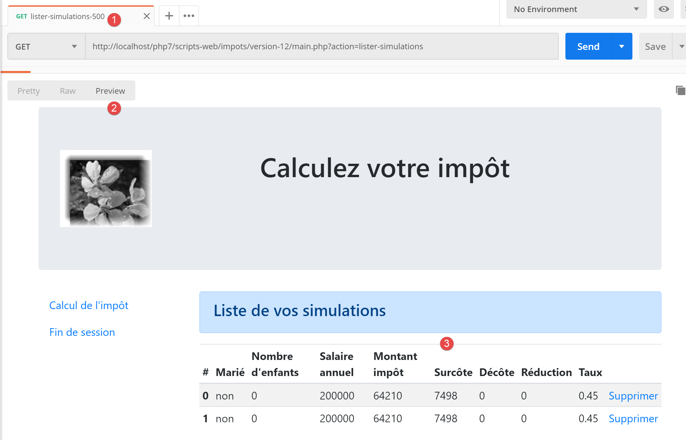
Der Test [supprimer-simulation-600] liefert den Statuscode 600. Er entspricht dem erfolgreichen Löschen der Simulation Nr. 0. Das zurückgegebene Ergebnis ist eine Liste von Simulationen, in der eine Simulation fehlt:

23.13.5. Die Ansicht unerwarteter Fehler
Als unerwarteten Fehler bezeichnen wir hier einen Fehler, der bei normaler Nutzung der Webanwendung nicht hätte auftreten dürfen.
Nehmen wir als Beispiel den Test [Postman] [calculer-impot-3xx], der wie folgt definiert ist:

- in [1-3], eine Anfrage POST mit der Aktion [calculer-impot];
- in [4-6]: Hier können die drei Parameter von POST beliebig definiert werden:
- [4]: Der Parameter [marié] fehlt;
- [5-6]: Die Parameter [enfants, salaire] sind vorhanden, aber ungültig;
- In [9] werden diese drei Fehler mit dem Statuscode 338 gemeldet;
Im Formular HTML der Webanwendung kann dieser Fall jedoch nicht auftreten:
- Alle Parameter sind vorhanden;
- Der Parameter [marié], dessen Wert aus den Attributen [value] zweier Optionsfelder stammt, muss zwangsläufig einen der Werte [oui] oder [non] annehmen;
- Bei einem aktuellen Browser sorgen die Attribute <input type=’number’ min=’0’ step=’1’ …> dafür, dass die Eingaben für die Kinder und das Gehalt zwangsläufig ganze Zahlen >=0 sind;
Allerdings hindert nichts einen Benutzer daran, den Wert [Postman] zu wählen und den oben genannten Test [calcul-impot-3xx] an unseren Server zu senden. Wir haben gesehen, dass unsere Webanwendung auf diese Anfrage korrekt reagieren konnte. Als „unerwarteten Fehler“ bezeichnen wir einen Fehler, der im Rahmen der Anwendung HTML nicht auftreten sollte. Tritt er dennoch auf, versucht wahrscheinlich jemand, die Anwendung zu „hacken“. Aus pädagogischen Gründen haben wir beschlossen, für solche Fälle eine Fehleransicht anzuzeigen. In der Praxis könnte man die zuletzt an den Client gesendete Seite erneut anzeigen. Dazu muss lediglich die zuletzt gesendete Antwort HTML in der Sitzung gespeichert werden. Im Falle eines unerwarteten Fehlers wird diese Antwort zurückgesendet. So hat der Benutzer den Eindruck, dass der Server nicht auf seine Fehler reagiert, da sich die angezeigte Seite nicht ändert.
23.13.5.1. Darstellung der Ansicht
Die Ansicht, die unerwartete Fehler anzeigt, sieht wie folgt aus:

Die vom Skript [vue-erreurs.php] generierte Ansicht besteht aus drei Teilen:
- 1: Der obere Banner wird durch das bereits vorgestellte Fragment [v-bandeau.php] generiert;
- 2: der oder die unerwarteten Fehler;
- 3: ein Menü mit drei Links, das vom Fragment [v-menu.php] generiert wird;
Die Ansicht der unerwarteten Fehler wird durch das folgende Skript [vue-erreurs.php] generiert:

<?php
// die Vorlage der Ansicht wird berechnet
$modèle = getModelForThisView();
function getModelForThisView(): object {
// Die Seitendaten werden in $modèle gekapselt
$modèle = new \stdClass();
…
// Das Modell wird zurückgegeben
return $modèle;
}
?>
<!-- Dokument HTML -->
<!doctype html>
<html lang="fr">
<head>
<!-- Erforderliche Meta-Tags -->
<meta charset="utf-8">
<meta name="viewport" content="width=device-width, initial-scale=1, shrink-to-fit=no">
<!-- Bootstrap CSS -->
<link rel="stylesheet" href="https://stackpath.bootstrapcdn.com/bootstrap/4.1.3/css/bootstrap.min.css" integrity="sha384-MCw98/SFnGE8fJT3GXwEOngsV7Zt27NXFoaoApmYm81iuXoPkFOJwJ8ERdknLPMO" crossorigin="anonymous">
<title>Application impots</title>
</head>
<body>
<div class="container">
<!-- Banner über 12 Spalten -->
<?php require "v-bandeau.php"; ?>
<!-- Zweispaltige Zeile -->
<div class="row">
<!-- Menü mit 3 Spalten-->
<div class="col-md-3">
<?php require "v-menu.php" ?>
</div>
<!-- Fehlerliste -->
<div class="col-md-9">
<?php
print <<<EOT
<div class="alert alert-danger" role="alert">
Les erreurs inattendues suivantes se sont produites :
<ul>$modèle->erreurs</ul>
</div>
EOT;
?>
</div>
</div>
</div>
</body>
</html>
Anmerkungen
- Zeile 27: Einbindung des Banners der Anwendung [1];
- Zeile 32: Einbindung des Menüs [2]. Es wird in drei Spalten unterhalb des Banners angezeigt;
- Zeilen 34–44: Anzeige des Fehlerbereichs in neun Spalten;
- Zeilen 37–44: Die Operation [print], die unerwartete Fehler anzeigt;
- Zeile 38: Diese Anzeige erfolgt in einem Bootstrap-Rahmen mit rosa Hintergrund;
- Zeile 39: Ein Einleitungstext;
- Zeile 40: Das Tag <ul> umschließt eine Aufzählungsliste. Diese Aufzählungsliste wird von der Vorlage [$modèle->erreurs] bereitgestellt;
Wir haben bereits die beiden Fragmente dieser Ansicht kommentiert:
- [v-bandeau.php]: im Absatz „Link“;
- [v-menu.php]: im Absatz-Link;
23.13.5.2. Visuelle Überprüfung
Wir fassen diese verschiedenen Elemente im Ordner [Tests] zusammen und erstellen eine Testvorlage für die Ansicht [vue-erreurs.php]:

Das Datenmodell der Ansicht [vue-erreurs.php] sieht wie folgt aus:
<?php
// Die Ansichtvorlage wird berechnet
$modèle = getModelForThisView();
function getModelForThisView(): object {
// Die Seitendaten werden in $modèle gekapselt
$modèle = new \stdClass();
// Tabelle der unerwarteten Fehler
$erreurs = ["erreur1", "erreur2"];
// Die Fehlerliste HTML wird erstellt
$modèle->erreurs = "";
foreach ($erreurs as $erreur) {
$modèle->erreurs .= "<li>$erreur</li>";
}
// Menüoptionen
$modèle->optionsMenu = [
"Calcul de l'impôt" => "main.php?action=afficher-calcul-impot",
"Liste des simulations" => "main.php?action=lister-simulations",
"Fin de session" => "main.php?action=fin-session",];
// Bild des Banners
$modèle->logo = "http://localhost/php7/scripts-web/impots/version-12/Tests/logo.jpg";
// Die Vorlage wird zurückgegeben
return $modèle;
}
?>
<!-- Dokument HTML -->
<!doctype html>
<html lang="fr">
<head>
…
</head>
<body>
…
</body>
</html>
Kommentare
- Zeilen 9–15: Erstellung der Fehlerliste HTML;
- Zeilen 17–20: das Array der Menüoptionen;
Zeigen wir diese Ansicht an:
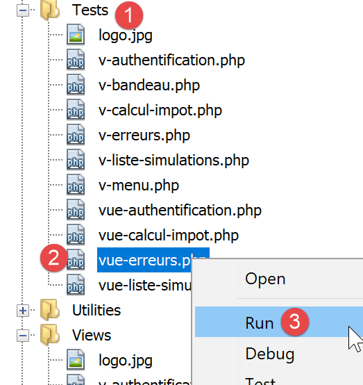
Man erhält folgendes Ergebnis:

Wir arbeiten an dieser Ansicht, bis uns das visuelle Ergebnis zufriedenstellt. Anschließend können wir mit der Integration der Ansicht in die gerade in Entwicklung befindliche Webanwendung fortfahren.
23.13.5.3. Berechnung des Ansichtsmodells

Sobald das Erscheinungsbild der Ansicht festgelegt ist, kann mit der Berechnung des Modells der Ansicht unter realen Bedingungen fortgefahren werden. Hier noch einmal die Zustandscodes, die zu dieser Ansicht führen. Sie sind in der Konfigurationsdatei zu finden:
"vues": {
"vue-authentification.php": [700, 221, 400],
"vue-calcul-impot.php": [200, 300, 341, 350, 800],
"vue-liste-simulations.php": [500, 600]
},
"vue-erreurs": "vue-erreurs.php"
Es sind also die Statuscodes, die nicht in den Zeilen [2-4] enthalten sind, die die Ansicht der unerwarteten Fehler anzeigen lassen.
Der Code zur Berechnung des Ansichtsmodells [vue-erreurs.php] lautet wie folgt:
<?php
// Die folgenden Variablen werden übernommen
// Anfrage $request: die aktuelle Anfrage
// Sitzung $session: die Anwendungssitzung
// Array $config: die Konfiguration der Anwendung
// Array $content: die Antwort des Controllers
//
// Symfony-Abhängigkeiten
use Symfony\Component\HttpFoundation\Request;
use Symfony\Component\HttpFoundation\Session\Session;
// Das View-Modell wird berechnet
$modèle = getModelForThisView($request, $session, $config, $content);
function getModelForThisView(Request $request, Session $session, array $config, array $content): object {
// Die Daten der Seite werden in $modèle gekapselt
$modèle = new \stdClass();
// Fehler aus der Antwort des Controllers abrufen
$réponse = $content["réponse"];
if (!is_array($réponse)) {
// eine einzige Fehlermeldung
$erreurs = [$réponse];
} else {
// mehrere Fehlermeldungen
$erreurs = $réponse;
}
// Die Fehlerliste HTML wird erstellt
$modèle->erreurs = "";
foreach ($erreurs as $erreur) {
$modèle->erreurs .= "<li>$erreur</li>";
}
// Menüoptionen
$modèle->optionsMenu = [
"Calcul de l'impôt" => "main.php?action=afficher-calcul-impot",
"Liste des simulations" => "main.php?action=lister-simulations",
"Fin de session" => "main.php?action=fin-session",];
// Die Vorlage wird zurückgegeben
return $modèle;
}
?>
<!-- Dokument HTML -->
<!doctype html>
<html lang="fr">
<head>
…
</head>
<body>
…
</body>
</html>
Kommentare
- Zeilen 19–32: Berechnung des Modells [$modèle→erreurs], das von der Ansicht [vue-erreurs.php] verwendet wird;
- Zeilen 34–37: Berechnung der Vorlage [$modèle→optionsMenu], die vom Fragment [v-menu.php] verwendet wird;
23.13.5.4. Tests [Postman]
Der Test [calculer-impot-3xx] liefert den Statuscode 338, der nicht erwartet wurde. Die Antwort HTML lautet dann wie folgt:
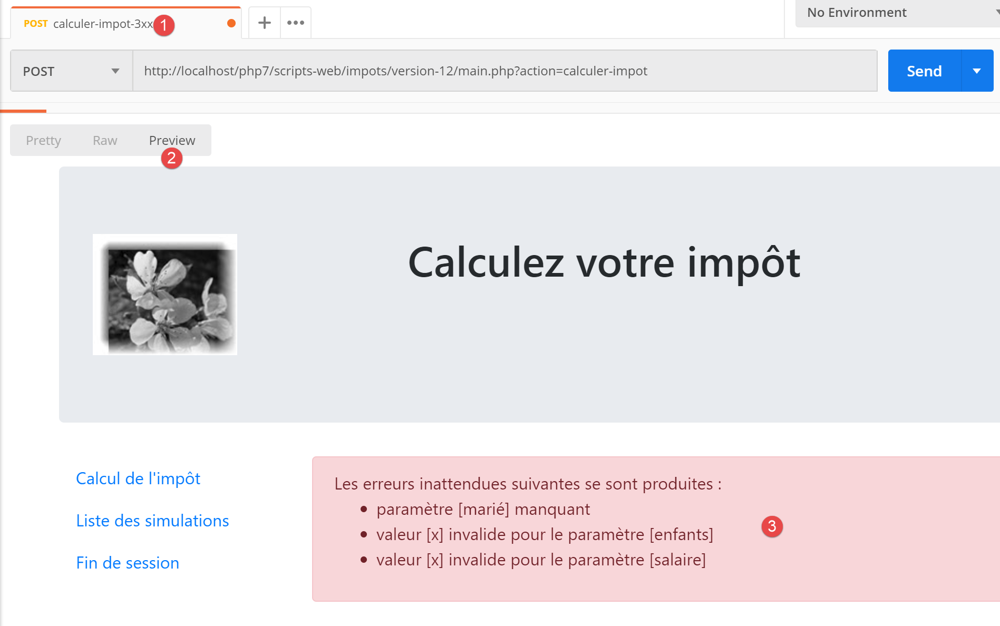
23.13.6. Implementierung der Menüaktionen der Anwendung
Wir werden uns hier mit der Implementierung der Menüaktionen befassen. Erinnern wir uns an die Bedeutung der Links, auf die wir gestoßen sind
Ansicht | Link | Ziel | Rolle |
Steuerberechnung | [Liste des simulations] | [main.php?action=lister-simulations] | Simulationsliste anfordern |
[Fin de session] | |||
Liste der Simulationen | [Calcul de l’impôt] | [main.php?action=afficher-calcul-impot] | Ansicht der Steuerberechnung anzeigen |
[Fin de session] | |||
Unerwartete Fehler | [Calcul de l’impôt] | [main.php?action=afficher-calcul-impot] | Steuerberechnungsansicht anzeigen |
[Liste des simulations] | |||
[Fin de session] |
Es sei daran erinnert, dass ein Klick auf einen Link einen GET zum Ziel des Links auslöst. Die Aktionen [lister-simulations, fin-session] wurden mit einer Operation GET implementiert, wodurch wir sie als Linkziele festlegen können. Wenn die Aktion über eine POST ausgeführt wird, ist die Verwendung eines Links nicht mehr möglich, es sei denn, man verknüpft ihn mit JavaScript.
Aus den oben genannten Aktionen geht hervor, dass die Aktion [afficher-calcul-impot] noch nicht implementiert wurde. Es handelt sich um einen Navigationsvorgang zwischen zwei Ansichten: Der Server jSON oder XML hat keinen Grund, dies zu implementieren, da er das Konzept der Ansicht nicht kennt. Es ist der Server HTML, der dieses Konzept einführt.
Wir müssen daher die Aktion [afficher-calcul-impot] implementieren. Dies gibt uns die Möglichkeit, die Vorgehensweise bei der Implementierung einer Aktion innerhalb des Servers zu überprüfen.
Zunächst müssen wir einen neuen sekundären Controller hinzufügen. Wir nennen ihn [AfficherCalculImpotController]:

Dieser Controller muss in die Konfigurationsdatei [config.json] eingefügt werden:
{
"databaseFilename": "database.json",
"rootDirectory": "C:/myprograms/laragon-lite/www/php7/scripts-web/impots/version-12",
"relativeDependencies": [
…
"/Controllers/InterfaceController.php",
"/Controllers/InitSessionController.php",
"/Controllers/ListerSimulationsController.php",
"/Controllers/AuthentifierUtilisateurController.php",
"/Controllers/CalculerImpotController.php",
"/Controllers/SupprimerSimulationController.php",
"/Controllers/FinSessionController.php",
"/Controllers/AfficherCalculImpotController.php"
],
"absoluteDependencies": [
"C:/myprograms/laragon-lite/www/vendor/autoload.php",
"C:/myprograms/laragon-lite/www/vendor/predis/predis/autoload.php"
],
…
"actions":
{
"init-session": "\\InitSessionController",
"authentifier-utilisateur": "\\AuthentifierUtilisateurController",
"calculer-impot": "\\CalculerImpotController",
"lister-simulations": "\\ListerSimulationsController",
"supprimer-simulation": "\\SupprimerSimulationController",
"fin-session": "\\FinSessionController",
"afficher-calcul-impot": "\\AfficherCalculImpotController"
},
…
"vues": {
"vue-authentification.php": [700, 221, 400],
"vue-calcul-impot.php": [200, 300, 341, 350, 800],
"vue-liste-simulations.php": [500, 600]
},
"vue-erreurs": "vue-erreurs.php"
}
- Zeile 15: der neue Controller;
- Zeile 30: die neue Aktion und ihr Controller;
- Zeile 35: Der neue Controller gibt den Statuscode 800 zurück. Bei einem Seitenwechsel darf kein Fehler auftreten;
Der Controller [AfficherCalculImpotController.php] sieht wie folgt aus:
<?php
namespace Application;
// Symfony-Abhängigkeiten
use Symfony\Component\HttpFoundation\Request;
use Symfony\Component\HttpFoundation\Session\Session;
use Symfony\Component\HttpFoundation\Response;
class AfficherCalculImpotController implements InterfaceController {
// $config ist die Anwendungskonfiguration
// Verarbeitung einer Anfrage (Request)
// nutzt die Session und kann diese ändern
// $infos sind zusätzliche Informationen, die für jeden Controller spezifisch sind
// gibt ein Array zurück: [$statusCode, $état, $content, $headers]
public function execute(
array $config,
Request $request,
Session $session,
array $infos = NULL): array {
// Ansichtswechsel – es muss lediglich ein Statuscode gesetzt werden
return [Response::HTTP_OK, 800, ["réponse" => ""], []];
}
}
Anmerkungen
- Zeile 10: Wie die anderen sekundären Controller implementiert auch der neue Controller die Schnittstelle [InterfaceController];
- Ansichtswechsel lassen sich einfach implementieren: Es reicht aus, den der Zielansicht zugeordneten Statuscode anzugeben, hier den Code 800, wie oben beschrieben;
23.13.7. Tests unter realen Bedingungen
Der Code wurde geschrieben und jede Aktion mit [Postman] getestet. Nun müssen wir noch die Abfolge der Ansichten unter realen Bedingungen testen. Wir benötigen eine Möglichkeit, die Sitzung HTML zu initialisieren. Wir wissen, dass die Parameter [action=init-session&type=html] an den Server gesendet werden müssen. Um zu vermeiden, dass wir diese in die Adresszeile des Browsers eingeben müssen, fügen wir das Skript [index.php] zu unserer Anwendung hinzu:

Das Skript [index.php] sieht wie folgt aus:
<?php
// Weiterleitung zu [main.php] im Modus [html]
header('Location: main.php?action=init-session&type=html');
- Zeile 4: [header] ist eine Funktion von PHP, die der Antwort einen Header HTTP hinzufügt. Der Header HTTP [Location: main.php?action=init-session&type=html] weist den Client-Browser an, sich zu dem in [Location] angegebenen Ziel URL umzuleiten. Das Skript [index.php] wird zusammen mit URL und [http://localhost/php7/scripts-web/impots/version-12/index.php] angefordert. Wenn der Client-Browser die Umleitung von URL zu [main.php?action=init-session&type=html] erhält, fordert er die absolute Adresse URL (relativ zu [http://localhost/php7/scripts-web/impots/version-12/main.php?action=init-session&type=html]) an, und die Sitzung HTML wird gestartet;
Die Start-URL kann auf [http://localhost/php7/scripts-web/impots/version-12/] vereinfacht werden. Falls in URL keine Seite angegeben ist, werden standardmäßig die Seiten von [index.html, index.php] verwendet. Hier wird also das Skript [index.php] verwendet;
Los geht’s: Wir stellen nun einige Ansichtsabläufe vor.
In unserem Browser aktivieren wir die Abfrageverfolgung (F12 in Firefox) und rufen die Startseite URL auf:

- In [4] ist die erste Antwort des Servers eine 302-Weiterleitung:
- auf [5] wird eine neue Anfrage an URL [http://localhost/php7/scripts-web/impots/13/main.php?action=init-session&type=html] gesendet;
Schauen wir uns die 302-Weiterleitung genauer an:
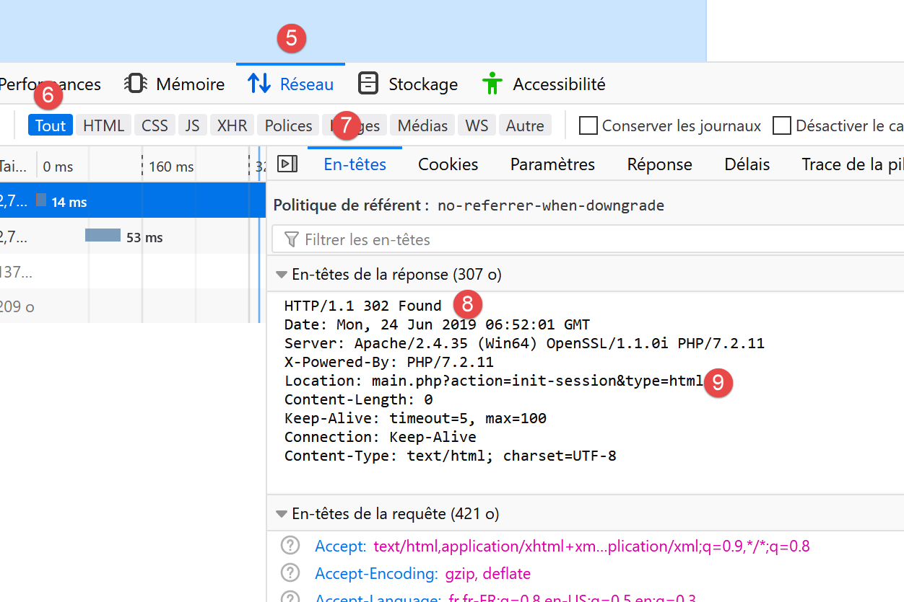
- in [8] ist der Code HTTP [302] ein Weiterleitungscode: Dem Client-Browser wird mitgeteilt, dass die angeforderte Seite URL verschoben wurde. Die neue URL wird in [9] angegeben. Der Browser folgt dieser Weiterleitung mit einer neuen Anfrage nach GET:

- zu [12-13], der neuen Anfrage des Browsers;
Füllen wir das Formular aus, das wir erhalten haben;

Führen wir anschließend einige Simulationen durch:


Fordern wir die Liste der Simulationen an:

Löschen wir die erste Simulation:

Beenden wir die Sitzung:

Der Leser ist eingeladen, weitere Tests durchzuführen.
23.14. Webservice-Client jSON
23.14.1. Client-Server-Architektur

Wir befassen uns nun mit dem Client jSON [A] des Webdienstes [B]. Der Client [A] weist ebenso wie der Webdienst [B] eine mehrschichtige Struktur auf:

Diese Architektur spiegelt sich in der folgenden Codeorganisation wider:

Die meisten Klassen wurden bereits vorgestellt und erläutert:
23.14.2. Die Ebene [dao]

23.14.2.1. Interface
Die Schnittstelle der Ebene [dao] wird wie folgt aussehen: [InterfaceClientDao.php]:
<?php
// Namensraum
namespace Application;
interface InterfaceClientDao {
// Auslesen der Steuerzahlerdaten
public function getTaxPayersData(string $taxPayersFilename, string $errorsFilename): array;
// Berechnung der Steuern eines Steuerpflichtigen
public function calculerImpot(string $marié, int $enfants, int $salaire): Simulation;
// Ergebniserfassung
public function saveResults(string $resultsFilename, array $simulations): void;
// Authentifizierung
public function authentifierUtilisateur(String $user, string $password): void;
// Liste der Simulationen
public function listerSimulations(): array;
// Simulation löschen
public function supprimerSimulation(int $numéro): array;
// Anmeldung
public function initSession(string $type = 'json'): void;
// Sitzung beenden
public function finSession(): void;
}
Anmerkungen
- Zeile 9: Die Methode [getTaxPayersData] ermöglicht die Auswertung der Datei jSON mit den Steuerpflichtigen-Daten. Diese Methode wird durch die bereits kommentierte Funktion [TraitDao] implementiert (Absatz „Link“);
- Zeile 15: Mit der Methode [saveResults] können die Ergebnisse mehrerer Steuerberechnungen in einer Datei jSON gespeichert werden. Auch hier wird diese Methode durch das bereits kommentierte Merkmal [TraitDao] implementiert (Absatz „Link“);
- Zeilen 12, 18, 21, 27, 30: Für jede vom Webdienst akzeptierte Aktion wurde eine Methode erstellt;
23.14.2.2. Implémentation
Die Schnittstelle [InterfaceClientDao] wird durch die folgende Klasse [ClientDao] implementiert:
<?php
namespace Application;
// Abhängigkeiten
use Symfony\Component\HttpClient\HttpClient;
use Symfony\Component\HttpClient\Response\CurlResponse;
class ClientDao implements InterfaceClientDao {
// Verwendung eines Traits
use TraitDao;
// Attribute
private $urlServer;
private $sessionCookie;
private $verbose;
// Konstruktor
public function __construct(string $urlServer, bool $verbose = TRUE) {
$this->urlServer = $urlServer;
$this->verbose = $verbose;
}
…
}
Kommentare
- Zeilen 18–21: Der Konstruktor erhält zwei Parameter:
- den URL [$urlServer] des Webdienstes jSON;
- einen booleschen Wert [$verbose], der angibt, dass die Klasse die Antworten des Servers auf der Konsole anzeigen soll;
- Zeile 14: das Sitzungs-Cookie. Dessen Funktion wurde in Version 09 des Clients beschrieben (Absatz „Link“);
- Zeile 11: Die Klasse verwendet das Merkmal [TraitDao], das zwei Methoden der Schnittstelle implementiert:
- [getTaxPayersData(string $taxPayersFilename, string $errorsFilename): array];
- [function calculerImpot(string $marié, int $enfants, int $salaire): Simulation];
23.14.2.2.1. Méthode [initSession]
Die Methode [initSession] ist wie folgt implementiert:
public function initSession(string $type = 'json'): void {
// Ein Client wird angelegt HTTP
$httpClient = HttpClient::create();
// Anfrage an den Server ohne Authentifizierung
$response = $httpClient->request('GET', $this->urlServer,
["query" => [
"action" => "init-session",
"type" => $type
],
"verify_peer" => false
]);
// die Antwort wird abgerufen
$this->getResponse($response);
// Das Sitzungs-Cookie wird abgerufen
$headers = $response->getHeaders();
if (isset($headers["set-cookie"])) {
// Sitzungs-Cookie?
foreach ($headers["set-cookie"] as $cookie) {
$match = [];
$match = preg_match("/^PHPSESSID=(.+?);/", $cookie, $champs);
if ($match) {
$this->sessionCookie = "PHPSESSID=" . $champs[1];
}
}
}
}
Da die Aktion [init-session] die erste Aktion sein muss, die beim Webdienst angefordert wird, wird die Methode [initSession] als erste Methode der Schicht [dao] aufgerufen.
Anmerkungen
- Zeile 1: Der gewünschte Sitzungstyp wird als Parameter übergeben. Wird kein Parameter angegeben, wird eine Sitzung vom Typ jSON gestartet;
- Zeilen 5–11: Es wird eine Anfrage vom Typ GET an den Webdienst gesendet;
- Zeilen 7–8: Die beiden Parameter von GET;
- Zeile 10: Bei sicherem Datenaustausch (https-Schema) wird das vom Webdienst gesendete Sicherheitszertifikat nicht überprüft;
- Zeile 13: Die Methode [getResponse] ruft die Antwort des Servers ab. Sie gibt sie in Form eines Arrays zurück. Hier wird das Ergebnis der Methode nicht weiterverarbeitet. Die Methode [getResponse] löst eine Ausnahme aus, wenn der Code HTTP der Antwort des Webdienstes nicht 200 OK beträgt;
- Zeilen 14–25: Da die Methode [initSession] die erste Methode der Schicht [dao] ist, die ausgeführt wird, wird das Sitzungs-Cookie abgerufen, damit die nachfolgenden Methoden es an den Webdienst zurücksenden können. Dieser Code wurde bereits in Version 09 auskommentiert;
23.14.2.2.2. Die Methode [getResponse]
Die Methode [getResponse] ist dafür zuständig, die Antwort des Webdienstes auszuwerten:
private function getResponse(CurlResponse $response) {
// Die Antwort wird abgerufen
$json = $response->getContent(false);
// Protokolle
if ($this->verbose) {
print "$json\n";
}
// Der Antwortstatus wird abgerufen
$statusCode = $response->getStatusCode();
// Fehler?
if ($statusCode !== 200) {
// Es liegt ein Fehler vor
throw new ExceptionImpots($json);
}
// die Antwort wird zurückgegeben
$array = json_decode($json, true);
return $array["réponse"];
}
Kommentare
- Zeile 1: Die Methode ist privat;
- Zeile 1: Der Parameter der Methode ist die Antwort des Webdienstes vom Typ [Symfony\Component\HttpClient\Response\CurlResponse], dem Symfony-Antworttyp, wenn [HttpClient] durch [CurlClient] implementiert wird, d. h. durch die Bibliothek [curl];
- Zeile 3: Die Antwort jSON wird vom Server abgerufen. Zur Erinnerung: Der Parameter [false] dient dazu, zu verhindern, dass Symfony eine Ausnahme auslöst, wenn der Status der Serverantwort HTTP im Bereich [3xx, 4xx, 5xx] liegt;
- Zeilen 5–7: Befindet man sich im Modus [$verbose], wird die Antwort des Servers auf der Konsole ausgegeben;
- Zeilen 9–14: Wenn der Status der Serverantwort HTTP ungleich 200 ist, wird eine Ausnahme mit der Fehlermeldung „jSON“ ausgelöst;
- Zeile 16: Die Zeichenkette jSON wird in ein Array dekodiert;
- Zeile 17: Die relevanten Informationen befinden sich in [$array["réponse"]];
23.14.2.2.3. Die Methode [authentifierUtilisateur]
Die Methode [authentifierUtilisateur] lautet wie folgt:
public function authentifierUtilisateur(string $user, string $password): void {
// Ein Client wird erstellt HTTP
$httpClient = HttpClient::create();
// Die Anfrage wird mit Authentifizierung an den Server gesendet
$response = $httpClient->request('POST', $this->urlServer,
["query" => [
"action" => "authentifier-utilisateur"
],
"body" => [
"user" => $user,
"password" => $password
],
"verify_peer" => false,
"headers" => ["Cookie" => $this->sessionCookie]
]);
// Die Antwort wird abgerufen
$this->getResponse($response);
}
Anmerkungen
- Zeile 5: Die Anfrage des Clients lautet POST;
- Zeilen 6–8: Parameter im URL;
- Zeilen 9–12: Parameter des POST;
- Zeile 14: das Sitzungs-Cookie;
- Zeile 17: Die Antwort wird gelesen. Es ist bekannt, dass im Falle eines Fehlers (Code HTTP ungleich 200) die Methode [getResponse] selbst eine Ausnahme auslöst;
23.14.2.2.4. Die Methode [calculerImpot]
public function calculerImpot(string $marié, int $enfants, int $salaire): Simulation {
// ein Client wird angelegt: HTTP
$httpClient = HttpClient::create();
// Es wird eine Anfrage an den Server ohne Authentifizierung, aber mit dem Sitzungs-Cookie gesendet
$response = $httpClient->request('POST', $this->urlServer,
["query" => [
"action" => "calculer-impot"],
"body" => [
"marié" => $marié,
"enfants" => $enfants,
"salaire" => $salaire
],
"verify_peer" => false,
"headers" => ["Cookie" => $this->sessionCookie]
]);
// Die Antwort wird abgerufen
$array = $this->getResponse($response);
return (new Simulation())->setFromArrayOfAttributes($array);
}
Kommentare
- Zeile 6–7: der einzige Parameter von URL;
- Zeilen 8–12: die drei Parameter von POST (Zeile 5);
- Zeile 17: Die Antwort wird ausgewertet;
- Zeile 18: Wenn es bis hierher gelangt ist, bedeutet dies, dass die Methode [getResponse] keine Ausnahme ausgelöst hat. Es wird ein Objekt [Simulation] zurückgegeben, das mit dem von [getResponse] zurückgegebenen Array initialisiert wurde;
23.14.2.2.5. Die Methode [listerSimulations]
public function listerSimulations(): array {
// Es wird ein Client erstellt: HTTP
$httpClient = HttpClient::create();
// Die Anfrage wird ohne Authentifizierung, aber mit dem Sitzungs-Cookie an den Server gesendet
$response = $httpClient->request('GET', $this->urlServer,
["query" => [
"action" => "lister-simulations"
],
"verify_peer" => false,
"headers" => ["Cookie" => $this->sessionCookie]
]);
// die Antwort wird abgerufen
return $this->getSimulations($response);
}
Kommentare
- Zeile 5: Methode GET;
- Zeilen 6–8: der einzige Parameter von GET;
- Zeile 13: Das Abrufen der Simulationen wird der privaten Methode [getSimulations] übertragen;
23.14.2.2.6. Die Methode [getSimulations]
private function getSimulations(CurlResponse $response): array {
// Die Antwort wird abgerufen: JSON
$array = $this->getResponse($response);
// Man erhält ein assoziatives Objektarray
// daraus wird ein Array von „Simulation“-Objekten erstellt
$simulations = [];
foreach ($array as $simulation) {
$simulations [] = (new Simulation())->setFromArrayOfAttributes($simulation);
}
// Wir geben die Liste der „Simulation“-Objekte zurück
return $simulations;
}
Kommentare
- Zeile 3: Das aus der Antwort stammende Array wird abgerufen. Es handelt sich um ein Array von Arrays, wobei jedes dieser Arrays alle Attribute eines [Simulation]-Objekts aufweist;
- Zeile 6: Wenn wir hier angelangt sind, bedeutet dies, dass die Methode [getResponse] keine Ausnahme ausgelöst hat;
- Zeilen 6–9: Die Antwort wird ausgewertet, um ein Array von [Simulation]-Objekten zu erstellen;
- Zeile 11: Dieses Array wird zurückgegeben;
23.14.2.2.7. Die Methode [SupprimerSimulation]
public function supprimerSimulation(int $numéro): array {
// Wir erstellen einen Client HTTP
$httpClient = HttpClient::create();
// Wir senden die Anfrage an den Server ohne Authentifizierung, aber mit dem Sitzungs-Cookie
$response = $httpClient->request('GET', $this->urlServer,
["query" => [
"action" => "supprimer-simulation",
"numéro" => $numéro
],
"verify_peer" => false,
"headers" => ["Cookie" => $this->sessionCookie]
]);
// Die Antwort wird abgerufen
return $this->getSimulations($response);
}
Kommentare
- Zeile 5: Es wird eine Abfrage GET durchgeführt;
- Zeilen 6–9: Die beiden Parameter von URL;
- Zeile 14: Nach einer Löschung gibt der Server die neue Tabelle mit den Simulationen zurück. Diese Tabelle wird ausgegeben;
23.14.2.2.8. Die Methode [finSession]
Eine Arbeitssitzung mit dem Webdienst endet normalerweise mit dem Aufruf der Methode [finSession]:
public function finSession(): void {
// Ein Client wird erstellt: HTTP
$httpClient = HttpClient::create();
// Die Anfrage wird ohne Authentifizierung, aber mit dem Sitzungs-Cookie an den Server gesendet
$response = $httpClient->request('GET', $this->urlServer,
["query" => [
"action" => "fin-session"
],
"verify_peer" => false,
"headers" => ["Cookie" => $this->sessionCookie]
]);
// die Antwort wird abgerufen
$this->getResponse($response);
}
Kommentare
- Zeile 5: Es wird eine Anfrage an GET gestellt;
- Zeilen 6–8: Der einzige Parameter von URL;
- Zeile 13: Die Antwort wird gelesen. Es wird eine Ausnahme ausgelöst, wenn der HTTP-Code der Antwort nicht 200 beträgt;
23.14.3. Die Schicht [métier]
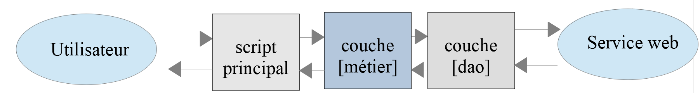
23.14.3.1. L’interface
Die Schnittstelle der Schicht [métier] lautet wie folgt: [InterfaceClientMetier.php]:
<?php
// Namensraum
namespace Application;
interface InterfaceClientMetier {
// Berechnung der Steuern eines Steuerpflichtigen
public function calculerImpot(string $marié, int $enfants, int $salaire): Simulation;
// Berechnung der Steuern im Batch-Modus
public function executeBatchImpots(string $taxPayersFileName, string $resultsFilename, string $errorsFileName): void;
// Authentifizierung
public function authentifierUtilisateur(String $user, string $password): void;
// Liste der Simulationen
public function listerSimulations(): array;
// Ergebnisse speichern
public function saveResults(string $resultsFilename, array $simulations): void;
// Simulation löschen
public function supprimerSimulation(int $numéro): array;
// Sitzung starten
public function initSession(string $type = 'json'): void;
// Sitzung beenden
public function finSession(): void;
}
Anmerkungen
- Nur die Methode [executeBatchImpots] in Zeile 12 ist spezifisch für die Schicht [métier]. Alle anderen gehören zur Schicht [dao], die sie implementiert;
23.14.3.2. Die Klasse [ClientMetier]
Die Klasse, die die Schicht [métier] implementiert, lautet wie folgt:
<?php
namespace Application;
class ClientMetier implements InterfaceClientMetier {
// Attribut
private $clientDao;
// Hersteller
public function __construct(InterfaceClientDao $clientDao) {
$this->clientDao = $clientDao;
}
// Steuerberechnung
public function calculerImpot(string $marié, int $enfants, int $salaire): Simulation {
return $this->clientDao->calculerImpot($marié, $enfants, $salaire);
}
// Steuerberechnung im Batch-Modus
public function executeBatchImpots(string $taxPayersFileName, string $resultsFileName, string $errorsFileName): void {
// Ausnahmen, die aus der Schicht [dao] stammen, werden weitergeleitet
// Steuerpflichtige Daten werden abgerufen
$taxPayersData = $this->clientDao->getTaxPayersData($taxPayersFileName, $errorsFileName);
// Ergebnistabelle
$simulations = [];
// Auswertung der Ergebnisse
foreach ($taxPayersData as $taxPayerData) {
// Die Steuer wird berechnet
$simulations [] = $this->calculerImpot(
$taxPayerData->getMarié(),
$taxPayerData->getEnfants(),
$taxPayerData->getSalaire());
}
// Ergebnisse werden gespeichert
if ($resultsFileName !== NULL) {
$this->clientDao->saveResults($resultsFileName, $simulations);
}
}
public function authentifierUtilisateur(String $user, string $password): void {
$this->clientDao->authentifierUtilisateur($user, $password);
}
public function listerSimulations(): array {
return $this->clientDao->listerSimulations();
}
public function saveResults(string $resultsFilename, array $simulations): void {
$this->clientDao->saveResults($resultsFilename, $simulations);
}
public function supprimerSimulation(int $numéro): array {
return $this->clientDao->supprimerSimulation($numéro);
}
public function finSession(): void {
$this->clientDao->finSession();
}
public function initSession(string $type = 'json'): void {
$this->clientDao->initSession($type);
}
}
Anmerkungen
- Zeilen 10–12: Um erstellt zu werden, benötigt die Schicht [métier] eine Referenz auf die Schicht [dao];
- Zeilen 20–38: Nur die Methode [executeBatchImpots] ist spezifisch für die Schicht [métier]. Die Implementierung der anderen Methoden delegiert die auszuführenden Aufgaben an die gleichnamigen Methoden in der Schicht [dao];
- Zeile 23: Die Schicht [dao] wird aufgerufen, um die Daten der Steuerzahler in einem Array von Objekten des Typs [TaxPayerData] abzurufen;
- Zeile 25: Die verschiedenen berechneten Simulationen werden im Array [$simulations] zusammengefasst;
- Zeilen 27–33: Die Steuer für jeden Steuerpflichtigen aus dem Array [$taxPayersData] wird berechnet;
- Zeilen 35–37: Die in der Tabelle [$simulations] ermittelten Ergebnisse werden in einer Datei namens jSON gespeichert;
Hinweis: Die Ebene [métier] hat praktisch keine Funktion. Man könnte sie löschen und alles in der Ebene [dao] zusammenfassen.
23.14.4. Das Hauptskript

Das Hauptskript wird durch die folgende Datei „[config.json]“ konfiguriert:
{
"taxPayersDataFileName": "Data/taxpayersdata.json",
"resultsFileName": "Data/results.json",
"errorsFileName": "Data/errors.json",
"rootDirectory": "C:/Data/st-2019/dev/php7/poly/scripts-console/impots/version-12",
"dependencies": [
"/Entities/BaseEntity.php",
"/Entities/TaxPayerData.php",
"/Entities/Simulation.php",
"/Entities/ExceptionImpots.php",
"/Utilities/Utilitaires.php",
"/Model/InterfaceClientDao.php",
"/Model/TraitDao.php",
"/Model/ClientDao.php",
"/Model/InterfaceClientMetier.php",
"/Model/ClientMetier.php"
],
"absoluteDependencies": [
"C:/myprograms/laragon-lite/www/vendor/autoload.php"
],
"user": {
"login": "admin",
"passwd": "admin"
},
"urlServer": "https://localhost:443/php7/scripts-web/impots/version-12/main.php"
}
Das Hauptskript [main.php] lautet wie folgt:
<?php
// Strikte Einhaltung der deklarierten Typen der Funktionsparameter
declare(strict_types = 1);
// Namensraum
namespace Application;
// Fehlerbehandlung durch PHP
// ini_set("display_errors", "0");
//
// Pfad zur Konfigurationsdatei
define("CONFIG_FILENAME", "../Data/config.json");
// Die Konfiguration wird abgerufen
$config = \json_decode(file_get_contents(CONFIG_FILENAME), true);
// die für das Skript erforderlichen Abhängigkeiten werden eingebunden
$rootDirectory = $config["rootDirectory"];
foreach ($config["dependencies"] as $dependency) {
require "$rootDirectory/$dependency";
}
// Absolute Abhängigkeiten (Bibliotheken von Drittanbietern)
foreach ($config["absoluteDependencies"] as $dependency) {
require "$dependency";
}
// Definition der Konstanten
define("TAXPAYERSDATA_FILENAME", "$rootDirectory/{$config["taxPayersDataFileName"]}");
define("RESULTS_FILENAME", "$rootDirectory/{$config["resultsFileName"]}");
define("ERRORS_FILENAME", "$rootDirectory/{$config["errorsFileName"]}");
//
// Symfony-Abhängigkeiten
use Symfony\Component\HttpClient\HttpClient;
// Erstellung der Schicht [dao]
$clientDao = new ClientDao($config["urlServer"]);
// Erstellung der Schicht [métier]
$clientMetier = new ClientMetier($clientDao);
// Steuerberechnung im Batch-Modus
try {
// Initialisierung der Sitzung
$clientMetier->initSession('json');
// Authentifizierung
$clientMetier->authentifierUtilisateur($config["user"]["login"], $config["user"]["passwd"]);
// Steuerberechnung ohne Speicherung der Ergebnisse
$clientMetier->executeBatchImpots(TAXPAYERSDATA_FILENAME, NULL, ERRORS_FILENAME);
// Liste der Simulationen
$clientMetier->listerSimulations();
// Löschen einer Simulation
$simulations = $clientMetier->supprimerSimulation(1);
// Speichern der Ergebnisse
$clientMetier->saveResults(RESULTS_FILENAME, $simulations);
// Sitzung beenden
$clientMetier->finSession();
// Aktion ohne Authentifizierung – sollte zum Absturz führen
$clientMetier->listerSimulations();
} catch (ExceptionImpots $ex) {
// Fehler wird angezeigt
print "Une erreur s'est produite : " . $ex->getMessage() . "\n";
}
// Ende
print "Terminé\n";
exit();
Anmerkungen
- Zeilen 12–16: Auswertung der Konfigurationsdatei [config.json];
- Zeilen 18–26: Laden aller Abhängigkeiten;
- Zeilen 28–34: Definition von Konstanten und Aliasen;
- Zeilen 36–39: Erstellung der Ebenen [dao] und [métier];
- Zeile 44: Initialisierung einer Sitzung jSON;
- Zeile 46: Authentifizierung beim Server;
- Zeile 48: Berechnung der Steuer für eine Reihe von Steuerpflichtigen. Die Ergebnisse werden nicht gespeichert (2. Parameter NULL);
- Zeile 50: Die Ergebnisse aller Berechnungen werden abgefragt;
- Zeile 52: Die Simulation Nr. 1 (die zweite in der Liste) wird gelöscht;
- Zeile 54: Die verbleibenden Simulationen werden gespeichert;
- Zeile 56: Die Sitzung wird beendet. Das bedeutet, dass das Sitzungs-Cookie gelöscht wird;
- Zeile 58: Die Liste der Simulationen wird angefordert. Da das Sitzungs-Cookie gelöscht wurde, muss die Authentifizierung erneut durchgeführt werden. Es sollte daher eine Ausnahme auftreten, die besagt, dass man nicht authentifiziert ist;
Die Datei [taxpayersdata.json] sieht wie folgt aus:
[
{
"marié": "oui",
"enfants": 2,
"salaire": 55555
},
{
"marié": "ouix",
"enfants": "2x",
"salaire": "55555x"
},
{
"marié": "oui",
"enfants": "2",
"salaire": 50000
},
{
"marié": "oui",
"enfants": 3,
"salaire": 50000
},
{
"marié": "non",
"enfants": 2,
"salaire": 100000
},
{
"marié": "non",
"enfants": 3,
"salaire": 100000
},
{
"marié": "oui",
"enfants": 3,
"salaire": 100000
},
{
"marié": "oui",
"enfants": 5,
"salaire": 100000
},
{
"marié": "non",
"enfants": 0,
"salaire": 100000
},
{
"marié": "oui",
"enfants": 2,
"salaire": 30000
},
{
"marié": "non",
"enfants": 0,
"salaire": 200000
},
{
"marié": "oui",
"enfants": 3,
"salaire": 20000
}
]
Es gibt 12 Steuerzahler, von denen einer falsch ist. Das ergibt also insgesamt 11 Simulationen. Eine davon wird gelöscht. Es müssen 10 übrig bleiben.
Nach Ausführung des Hauptskripts lautet die Datei „jSON [results.json]“ wie folgt:
[
{
"marié": "oui",
"enfants": "2",
"salaire": "55555",
"impôt": 2814,
"surcôte": 0,
"décôte": 0,
"réduction": 0,
"taux": 0.14
},
{
"marié": "oui",
"enfants": "3",
"salaire": "50000",
"impôt": 0,
"surcôte": 0,
"décôte": 720,
"réduction": 0,
"taux": 0.14
},
{
"marié": "non",
"enfants": "2",
"salaire": "100000",
"impôt": 19884,
"surcôte": 4480,
"décôte": 0,
"réduction": 0,
"taux": 0.41
},
{
"marié": "non",
"enfants": "3",
"salaire": "100000",
"impôt": 16782,
"surcôte": 7176,
"décôte": 0,
"réduction": 0,
"taux": 0.41
},
{
"marié": "oui",
"enfants": "3",
"salaire": "100000",
"impôt": 9200,
"surcôte": 2180,
"décôte": 0,
"réduction": 0,
"taux": 0.3
},
{
"marié": "oui",
"enfants": "5",
"salaire": "100000",
"impôt": 4230,
"surcôte": 0,
"décôte": 0,
"réduction": 0,
"taux": 0.14
},
{
"marié": "non",
"enfants": "0",
"salaire": "100000",
"impôt": 22986,
"surcôte": 0,
"décôte": 0,
"réduction": 0,
"taux": 0.41
},
{
"marié": "oui",
"enfants": "2",
"salaire": "30000",
"impôt": 0,
"surcôte": 0,
"décôte": 0,
"réduction": 0,
"taux": 0
},
{
"marié": "non",
"enfants": "0",
"salaire": "200000",
"impôt": 64210,
"surcôte": 7498,
"décôte": 0,
"réduction": 0,
"taux": 0.45
},
{
"marié": "oui",
"enfants": "3",
"salaire": "20000",
"impôt": 0,
"surcôte": 0,
"décôte": 0,
"réduction": 0,
"taux": 0
}
]
Es sind tatsächlich 10 Simulationen vorhanden.
Die Datei „jSON [errors.json]“ hat folgenden Inhalt:
{
"numéro": 1,
"erreurs": [
{
"marié": "ouix"
},
{
"enfants": "2x"
},
{
"salaire": "55555x"
}
]
}
Die Konsolenergebnisse lauten wie folgt (im Verbose-Modus werden die Antworten des Servers mit dem Code jSON auf der Konsole angezeigt):
{"action":"init-session","état":700,"réponse":"session démarrée avec type [json]"}
{"action":"authentifier-utilisateur","état":200,"réponse":"Authentification réussie [admin, admin]"}
{"action":"calculer-impot","état":300,"réponse":{"marié":"oui","enfants":"2","salaire":"55555","impôt":2814,"surcôte":0,"décôte":0,"réduction":0,"taux":0.14}}
{"action":"calculer-impot","état":300,"réponse":{"marié":"oui","enfants":"2","salaire":"50000","impôt":1384,"surcôte":0,"décôte":384,"réduction":347,"taux":0.14}}
{"action":"calculer-impot","état":300,"réponse":{"marié":"oui","enfants":"3","salaire":"50000","impôt":0,"surcôte":0,"décôte":720,"réduction":0,"taux":0.14}}
{"action":"calculer-impot","état":300,"réponse":{"marié":"non","enfants":"2","salaire":"100000","impôt":19884,"surcôte":4480,"décôte":0,"réduction":0,"taux":0.41}}
{"action":"calculer-impot","état":300,"réponse":{"marié":"non","enfants":"3","salaire":"100000","impôt":16782,"surcôte":7176,"décôte":0,"réduction":0,"taux":0.41}}
{"action":"calculer-impot","état":300,"réponse":{"marié":"oui","enfants":"3","salaire":"100000","impôt":9200,"surcôte":2180,"décôte":0,"réduction":0,"taux":0.3}}
{"action":"calculer-impot","état":300,"réponse":{"marié":"oui","enfants":"5","salaire":"100000","impôt":4230,"surcôte":0,"décôte":0,"réduction":0,"taux":0.14}}
{"action":"calculer-impot","état":300,"réponse":{"marié":"non","enfants":"0","salaire":"100000","impôt":22986,"surcôte":0,"décôte":0,"réduction":0,"taux":0.41}}
{"action":"calculer-impot","état":300,"réponse":{"marié":"oui","enfants":"2","salaire":"30000","impôt":0,"surcôte":0,"décôte":0,"réduction":0,"taux":0}}
{"action":"calculer-impot","état":300,"réponse":{"marié":"non","enfants":"0","salaire":"200000","impôt":64210,"surcôte":7498,"décôte":0,"réduction":0,"taux":0.45}}
{"action":"calculer-impot","état":300,"réponse":{"marié":"oui","enfants":"3","salaire":"20000","impôt":0,"surcôte":0,"décôte":0,"réduction":0,"taux":0}}
{"action":"lister-simulations","état":500,"réponse":[{"marié":"oui","enfants":"2","salaire":"55555","impôt":2814,"surcôte":0,"décôte":0,"réduction":0,"taux":0.14,"arrayOfAttributes":null},{"marié":"oui","enfants":"2","salaire":"50000","impôt":1384,"surcôte":0,"décôte":384,"réduction":347,"taux":0.14,"arrayOfAttributes":null},{"marié":"oui","enfants":"3","salaire":"50000","impôt":0,"surcôte":0,"décôte":720,"réduction":0,"taux":0.14,"arrayOfAttributes":null},{"marié":"non","enfants":"2","salaire":"100000","impôt":19884,"surcôte":4480,"décôte":0,"réduction":0,"taux":0.41,"arrayOfAttributes":null},{"marié":"non","enfants":"3","salaire":"100000","impôt":16782,"surcôte":7176,"décôte":0,"réduction":0,"taux":0.41,"arrayOfAttributes":null},{"marié":"oui","enfants":"3","salaire":"100000","impôt":9200,"surcôte":2180,"décôte":0,"réduction":0,"taux":0.3,"arrayOfAttributes":null},{"marié":"oui","enfants":"5","salaire":"100000","impôt":4230,"surcôte":0,"décôte":0,"réduction":0,"taux":0.14,"arrayOfAttributes":null},{"marié":"non","enfants":"0","salaire":"100000","impôt":22986,"surcôte":0,"décôte":0,"réduction":0,"taux":0.41,"arrayOfAttributes":null},{"marié":"oui","enfants":"2","salaire":"30000","impôt":0,"surcôte":0,"décôte":0,"réduction":0,"taux":0,"arrayOfAttributes":null},{"marié":"non","enfants":"0","salaire":"200000","impôt":64210,"surcôte":7498,"décôte":0,"réduction":0,"taux":0.45,"arrayOfAttributes":null},{"marié":"oui","enfants":"3","salaire":"20000","impôt":0,"surcôte":0,"décôte":0,"réduction":0,"taux":0,"arrayOfAttributes":null}]}
{"action":"supprimer-simulation","état":600,"réponse":[{"marié":"oui","enfants":"2","salaire":"55555","impôt":2814,"surcôte":0,"décôte":0,"réduction":0,"taux":0.14,"arrayOfAttributes":null},{"marié":"oui","enfants":"3","salaire":"50000","impôt":0,"surcôte":0,"décôte":720,"réduction":0,"taux":0.14,"arrayOfAttributes":null},{"marié":"non","enfants":"2","salaire":"100000","impôt":19884,"surcôte":4480,"décôte":0,"réduction":0,"taux":0.41,"arrayOfAttributes":null},{"marié":"non","enfants":"3","salaire":"100000","impôt":16782,"surcôte":7176,"décôte":0,"réduction":0,"taux":0.41,"arrayOfAttributes":null},{"marié":"oui","enfants":"3","salaire":"100000","impôt":9200,"surcôte":2180,"décôte":0,"réduction":0,"taux":0.3,"arrayOfAttributes":null},{"marié":"oui","enfants":"5","salaire":"100000","impôt":4230,"surcôte":0,"décôte":0,"réduction":0,"taux":0.14,"arrayOfAttributes":null},{"marié":"non","enfants":"0","salaire":"100000","impôt":22986,"surcôte":0,"décôte":0,"réduction":0,"taux":0.41,"arrayOfAttributes":null},{"marié":"oui","enfants":"2","salaire":"30000","impôt":0,"surcôte":0,"décôte":0,"réduction":0,"taux":0,"arrayOfAttributes":null},{"marié":"non","enfants":"0","salaire":"200000","impôt":64210,"surcôte":7498,"décôte":0,"réduction":0,"taux":0.45,"arrayOfAttributes":null},{"marié":"oui","enfants":"3","salaire":"20000","impôt":0,"surcôte":0,"décôte":0,"réduction":0,"taux":0,"arrayOfAttributes":null}]}
{"action":"fin-session","état":400,"réponse":"session supprimée"}
{"action":"lister-simulations","état":103,"réponse":["pas de session en cours. Commencer par action [init-session]"]}
Une erreur s'est produite : {"action":"lister-simulations","état":103,"réponse":["pas de session en cours. Commencer par action [init-session]"]}
Terminé
23.14.5. Tests [Codeception]
Wie bei den vorherigen Clients kann auch der Client der Version 12 mit [Codeception] getestet werden:

Der Code der Testklasse der Schicht [métier] des Clients entspricht dem der Testklassen der vorherigen Clients:
<?php
// Strikte Einhaltung der deklarierten Typen der Funktionsparameter
declare (strict_types=1);
// Namensraum
namespace Application;
// Definition von Konstanten
define("ROOT", "C:/Data/st-2019/dev/php7/poly/scripts-console/impots/version-12");
// Pfad zur Konfigurationsdatei
define("CONFIG_FILENAME", ROOT . "/Data/config.json");
// Die Konfiguration wird abgerufen
$config = \json_decode(\file_get_contents(CONFIG_FILENAME), true);
// Einbinden der für das Skript erforderlichen Abhängigkeiten
$rootDirectory = $config["rootDirectory"];
foreach ($config["dependencies"] as $dependency) {
require "$rootDirectory$dependency";
}
// Absolute Abhängigkeiten (Bibliotheken von Drittanbietern)
foreach ($config["absoluteDependencies"] as $dependency) {
require "$dependency";
}
// Symfony-Abhängigkeiten
use Symfony\Component\HttpClient\HttpClient;
// Testklasse
class ClientDaoTest extends \Codeception\Test\Unit {
// DAO-Schicht
private $clientDao;
public function __construct() {
parent::__construct();
// Konfiguration abrufen
$config = \json_decode(\file_get_contents(CONFIG_FILENAME), true);
// Erstellung der Schicht [dao]
$clientDao = new ClientDao($config["urlServer"]);
// Erstellung der Schicht [métier]
$this->métier = new ClientMetier($clientDao);
// Sitzung initialisieren
$this->métier->initSession("json");
// Authentifizierung
$this->métier->authentifierUtilisateur("admin", "admin");
}
// Tests
public function test1() {
$simulation = $this->métier->calculerImpot("oui", 2, 55555);
$this->assertEqualsWithDelta(2815, $simulation->getImpôt(), 1);
$this->assertEqualsWithDelta(0, $simulation->getSurcôte(), 1);
$this->assertEqualsWithDelta(0, $simulation->getDécôte(), 1);
$this->assertEqualsWithDelta(0, $simulation->getRéduction(), 1);
$this->assertEquals(0.14, $simulation->getTaux());
}
public function test2() {
….
}
…
public function test11() {
…
}
}
Anmerkungen
- Zeilen 34–46: Es sei daran erinnert, dass der Konstruktor der Testklasse vor jedem Test ausgeführt wird;
- Zeilen 38–41: Erstellung der Schichten [dao] und [métier];
- Zeilen 42–45: Die Testmethoden [test1…, test11] testen die Methode [calculerImpot]. Damit dies möglich ist, muss zuvor eine Sitzung jSON initialisiert und eine Authentifizierung durchgeführt werden;
Die Testergebnisse lauten wie folgt:

Es sollten noch viele weitere Tests durchgeführt werden:
- die verschiedenen Methoden der Schicht [dao] testen;
- die vom Webserver zurückgegebenen Status testen. Diese Status sind wichtig, da ihr Wert darüber entscheidet, welche Seite HTML angezeigt wird;